| おまえをオタクにしてやるから、俺をリア充にしてくれ！8 | |
| VIII ofおまえをオタクにしてやるから、俺をリア充にしてくれ！ | |
| 村上 凛 | |
| (2013) | |
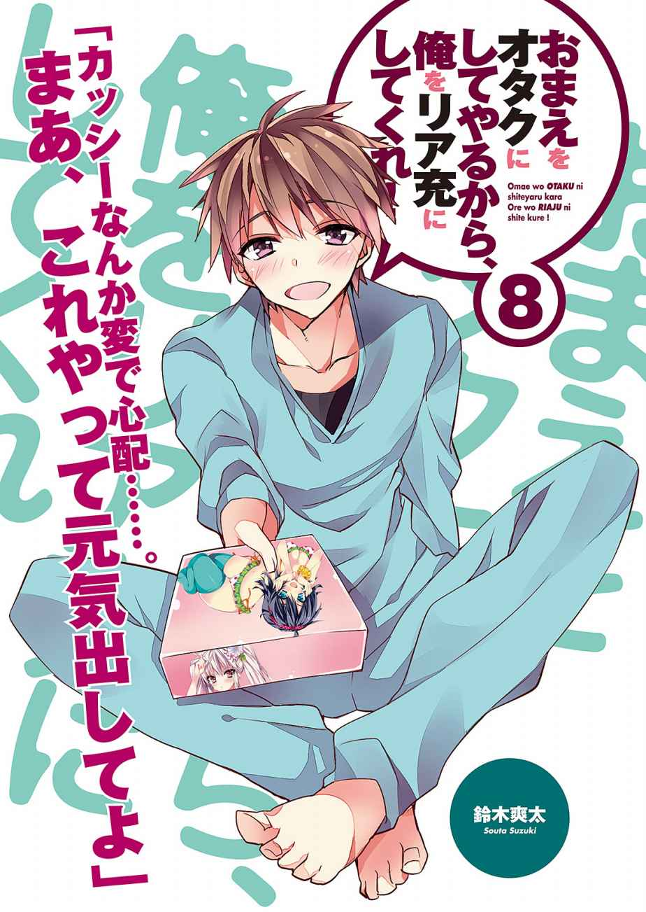
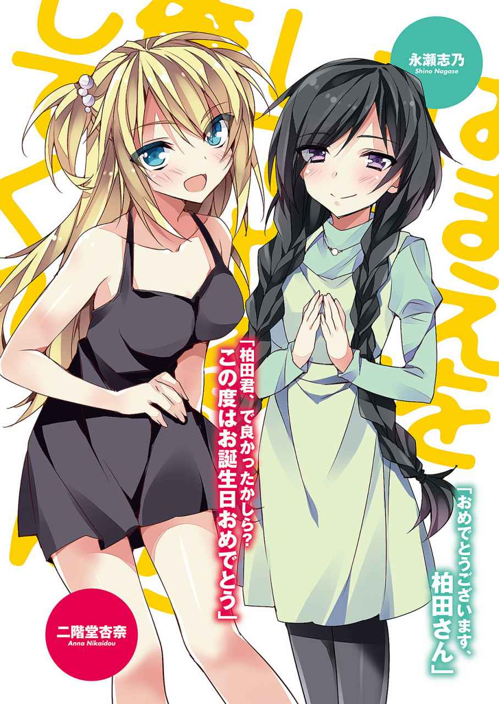
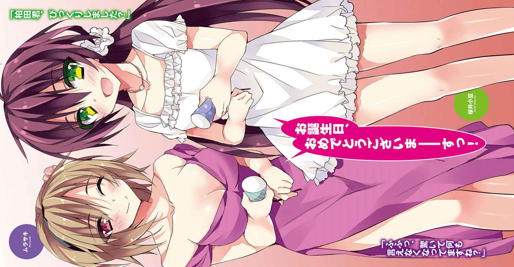
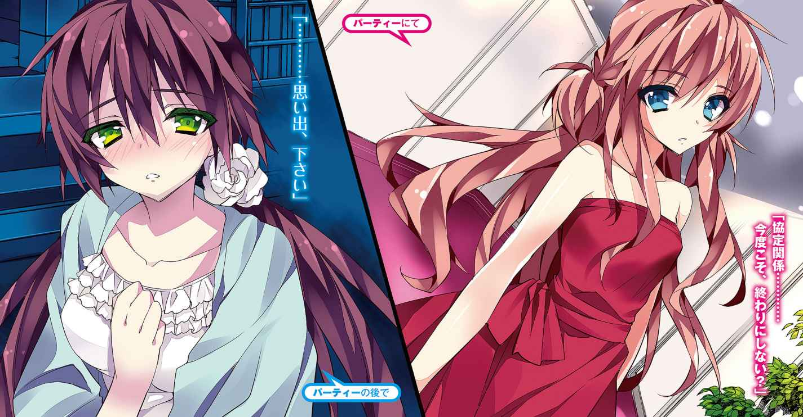
おまえをオタクにしてやるから、
俺をリア充にしてくれ！８
村上 凛

富士見ファンタジア文庫
本作品の全部または一部を無断で複製、転載、配信、送信したり、ホームページ上に転載することを禁止します。また、本作品の内容を無断で改変、改ざん等を行うことも禁止します。
本作品購入時にご承諾いただいた規約により、有償・無償にかかわらず本作品を第三者に譲渡することはできません。
本作品を示すサムネイルなどのイメージ画像は、再ダウンロード時に予告なく変更される場合があります。
本作品は縦書きでレイアウトされています。
また、ご覧になるリーディングシステムにより、表示の差が認められることがあります。
口絵・本文イラスト あなぽん
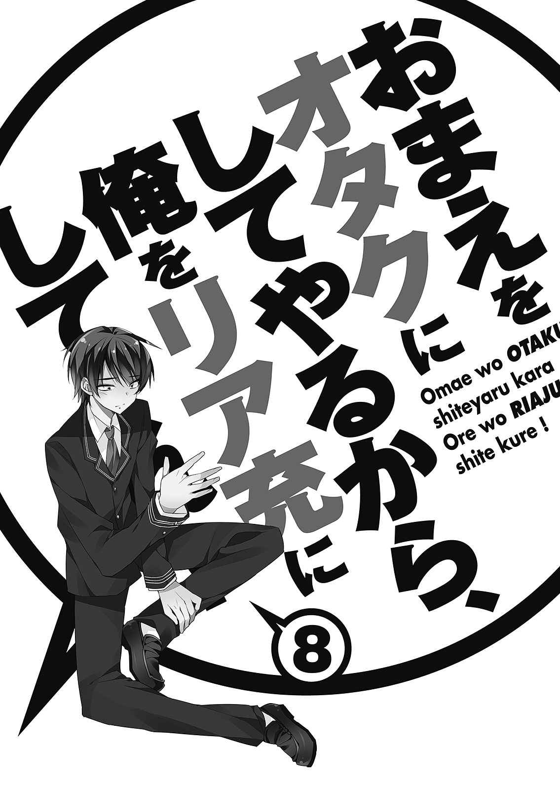
１
俺にとって彼女は『希望』だった。
高校生活に不安がなかったと言ったら噓になる。また中学の頃のように辛い思いをするんじゃないか、高校に入ったって何も楽しいことなんてないんじゃないか、当然、そんなネガティブな思いも俺の中にはあった。
だけど、入学式の日、彼女......長谷川翠を一目見たその瞬間から、俺の心の中は希望に満ちあふれた。何の根拠もなく、彼女と出会えたというだけで、楽しい高校生活になるかもしれない......そんな期待で胸がいっぱいになっていた。
その黒く艶やかな髪も、ガラス玉のように美しい瞳も、その瞳を縁取る長い睫毛も、透き通るような白い肌も......彼女の全てが俺の理想だった。
本当の彼女を知りたい。彼女の笑顔が見たい。彼女を幸せにしたい。そして、彼女に......俺を、好きになってもらいたい。いつの間にか、そんな欲深いことを思うようになっていた。
今、俺にとっての『希望』である長谷川翠は......目の前で大きく目を見開いたまま俺の顔を見て、酷く驚いた様子で何も言えなくなっていた。
彼女がこんな風に驚いているのは、他でもない俺の言葉のせいだ。
冷たい夜風が頰をかすめ、途端に冷静になってくる。
俺はついに......長谷川に、自分の気持ちを告白したんだ。
文化祭のクラスの出し物で長谷川と共に白雪姫の劇の主演を務め、なんとか無事にやり遂げることができた。それから、長い間仲違いしていた長谷川と長谷川の兄である山本さんを引き合わせることにも成功し、二人は仲直りすることができた。そのことで長谷川は俺に感謝の言葉を述べてくれ、俺はそんな彼女に自分がオタクであるということをカミングアウトした。嫌われたらどうしようと不安になる俺に、彼女は『柏田君がオタクであろうとなかろうと、大事な人であることには変わりない』と、俺にとって死ぬほど嬉しいセリフを言ってくれた。
その言葉に感激した俺は......勢い余って自分の気持ちを告白してしまったのだ。
こんなタイミングで言うつもりなど毛頭なかった。もっと仲良くなって、長谷川が俺に完全に心を開いてくれていると実感できるようになったら、そのときに言おうと思っていた。今はまだ、そのときではなかったのに......。
俺の中に溢れた長谷川への想いを、もう抑えておくことができなくなってしまった。
「......あ、......あの......」
しばらくの間黙っていた長谷川が、小さく声を発した。
途端に、俺の心臓の鼓動が激しく脈打つ。
そうだよ、俺が告白したから、長谷川は......何かしら、俺の気持ちに返事をしようとしているんだ。
どうしよう......一体、何を言われるんだ？
俺の胸は期待と不安に大きく高鳴る。聞きたくないような気もする......だけどもしかしたら、万が一にも、いい返事をもらえる可能性だってある......そう考えると、早くその口から言葉を聞きたいという気持ちもわき起こってくる。
長谷川は俺の目を見ないまま、口を開く。
「その............すごく、嬉しいし、私にとって柏田君は、かけがえのない大切な人に変わりないのだけれど......その......」
いつもはきはきと話す長谷川が、酷く動揺しながら、柄にもなくしどろもどろに言葉を話す。
──そこまで聞いた時点で俺は......すごく、嫌な予感がしてきた。
「その気持ちは......その、恋愛感情とは違うような気がしていて............私は今......恋愛をするほどの余裕がないし......そういう気持ち、まだよく分からなくて......」
こんなに困っている長谷川を見るのは初めてだった。困らせているのは当然俺だ。俺は彼女の言葉を聞きながら、自分の顔から血の気が引いていくような感覚に陥った。
「その............ごめんなさい」
長谷川は、謝罪の言葉と共に、頭を下げた。
『ゴメンナサイ』
........................つまり、それは......。
長谷川の言葉の意味を、うまく働かない脳みそで、必死に考えた。
どうプラスに捉えたとしても、いい意味に考えようとしても......結論は、一つのところへ辿り着いてしまう。
俺が彼女を『異性として好きだ』と告げた言葉に対して......彼女は、『自分の気持ちはそうでない。ごめんなさい』と返事をした。
つまり、それは......。
長谷川は、俺のことを好きじゃないと言う。
俺は、たった今この瞬間............長谷川翠に、告白して失恋した。
俺はバカだ......当然と言えば当然の結果じゃないか。どうして、こんなタイミングで告白なんかしてしまったんだ？ 長谷川が俺のことを、異性として好きじゃないってことくらい......自分でも分かっていたじゃないか。
......いや......違う、そうじゃない......。
俺は、心の片隅で期待していた。長谷川に『かけがえのない大切な人』と言われて、もしかしたらその意味が......異性としてという意味も含んでいるんじゃないかなんて、勝手に自分の都合の良い方向に考えてしまって......。俺は、『長谷川も俺と同じ気持ちかもしれない』『俺のことが好きかもしれない』なんて、酷い思い違いをしてしまっていたんだ。
なんて......なんて、愚かなんだろう。
できることなら、五分前に戻りたい。無謀な告白なんかするんじゃなかった。そうすれば......こんな惨めな思い、しなくて済んだのに......。
気付くと、何も言わずに黙っている俺の様子を、長谷川が心配そうに見つめていた。何か声をかけようとしているが、なんと言葉をかければいいのか分からずにとても困っているようだ。
「あっ......そ、そうだよね！ ごめん、俺、急に何言ってんだろ......」
俺は無理矢理笑みを自分の顔に貼り付けて、なるべく明るい調子で言った。
だけど、声が上擦ってしまい、動揺しているのがバレていたと思う。
「文化祭の熱気にやられてテンション上がっちゃったのかな、俺......ハハハ、ごめん、今のは忘れていいから！」
最後まで言い切るのに必死だった。
「あ、じゃあ俺、戻るね！」
俺は取り繕った笑顔で長谷川に手を振ると、足早にその場から立ち去った。......一刻も早く、長谷川のそばから離れたかった。
「か、柏田君......」
長谷川が俺の背中に向かって声をかけたが、俺は構わずに歩き続けた。
キャンプファイヤーの炎が照らす灯りも、生徒たちの楽しげな話し声も、全てがうっとうしかった。誰にも会いたくなかった。早く一人になりたかった。どこへ行っても校庭は人の目がある。
玄関から校舎の中へと入り、靴を脱いで上履きも履かずに校内へ上がると、近くの階段の下から二段目に腰掛けた。校内は静かで、校庭にいるよりはいくらかマシだった。
振られた..................。
生まれて初めて好きな子に告白して......あっけなく振られてしまった............。
俺は自身の膝の上に顔を埋めた。なるべく何も考えないようにしたかったが、今の光景が何度も何度も頭の中で再生されてしまう。
自分の情けない告白。長谷川の困った顔。そして......彼女の、俺の告白に対する言葉。
俺はこんなに長谷川のことが好きでも、長谷川は俺のことが好きじゃなかった。
そんなこと、分かりきっていたはずだった。どうして一瞬でも、勝手に変な期待なんかしてしまったのだろう。
長谷川が俺に向けた、『かけがえのない人』という言葉......。それの真意は、あくまで『友達として』だった。俺の長谷川への気持ちと、長谷川の俺に対する気持ちは、まるで違う。俺はこんなに好きなのに、長谷川は俺のことが好きじゃない。それだけのことが......こんなにも辛く悲しい。
不思議と、涙は出なかった。だけど、まるで心臓を一突きにでもされたかのように、ズキズキと胸が痛む。
ああ、そうだ......もっと悲しいことに気付いた。
明日からはもう、気軽に長谷川に話しかけることもできなくなってしまったんだ。
せっかく『かけがえのない大切な人』だと言ってくれたのに、俺自身がそんな友人関係を壊してしまった。
長谷川は、もう二度と俺にあんな笑顔を向けてはくれないだろう。
今まで俺がしてきたこと全て、俺が長谷川と仲良くなりたいという下心からだったと、彼女は気付くだろう。今頃俺に対して幻滅しているかもしれない。もしかしたら......ずっとそんな目で見られていただなんて、気持ち悪い......そんな風にさえ、思っているかもしれない。
自爆して自らの恋を終わらせてしまうだなんて......本当に俺は大馬鹿者だ。入学してから今まで、あんなに頑張ってきたっていうのに......。
──ずっと協力してくれていたあいつにも......なんて言ったらいい？
あいつのアドバイスに従って、もっと努力して、この恋を大切に育て上げていけば、もっと違う結果になった可能性だってあったかもしれないのに......俺が、早まってぶち壊してしまったのだ。もう、あいつに合わせる顔がない。
ああ......俺は明日から、何を楽しみに生きていけばいいのだろう。何を目標に生きていけばいいのだろう。もう何も考えたくない。ここから一歩も動きたくない。
その時、近くで物音が聞こえた。顔を伏せているので何も分からないが、顔を上げる気力もなかった。先生か誰かが俺の姿に気付き、不思議に思って校舎の中へ入ってきたのだろうか。ああ、面倒だな......気分が悪くて休んでるということにでもして......。
「......柏田......？」
その声に、俺は思わず顔を上げた。
恋ヶ崎が......俺と同じように靴を脱いで校舎の中へ上がり、俺の顔を見て驚いていた。
「やっぱり柏田じゃん......え？ 何......？ 何してんの？」
恋ヶ崎は俺の方まで近付いて来ると、無神経に俺の顔をじろじろと見てくる。
「校舎の中に入ってく人影が見えてさ、なんっか見覚えある後ろ姿だな～って思って見てたんだけど......まさか本当にあんただったとは......。こんなとこで一人で何してんの？ キャンプファイヤー参加しないの？」
ああもう、面倒くせえなあ、こっちは一言も発してないっていうのに勝手にベラベラ喋りやがって......。
「ちょっと......いろいろあって疲れたから休んでんだよ......」
俺は奴の顔も見ずに言う。こいつには......まだ言いたくなかった。今まで協力してもらったのに申し訳ないって気持ちも勿論あるが......それに加えて......こいつは今、鈴木とうまくいってるのだ。そんな奴に、振られたなんて絶対に言いたくないと思った。さっきもキャンプファイヤーで鈴木と話していたようだが......恋ヶ崎は、告白......したのだろうか......？ したとしたら、結果は......？ 気になるが、今聞いて、もし告白がうまくいったなんて報告を受けたら......ただでさえ死ぬほど気が滅入っているというのに、まともな精神状態を保っていられる自信がない。
「え......？ いろいろって......何よ、それ......？」
恋ヶ崎は、ようやく俺の様子がいつもと違うことに気付いたのか、俺を質問攻めにするのをやめた。代わりに、黙ったまま俺の顔をじっと見てくる。
「......!?」
俺は恋ヶ崎が校舎から立ち去ってくれるのを待っていたのだが......次の瞬間、恋ヶ崎はなぜか、俺が座る階段と同じ段の、俺から少し離れたところに腰を下ろした。
こいつは一体、どういうつもりなのだろうか？ 俺が近寄るなオーラを放ってるのは分かるだろうに、なぜ空気を読んでくれないんだ？
何か声をかけるのも億劫だったので、無視することにした。何事もなかったかのように、再び自分の膝に顔を埋める。目を瞑って、なるべく何も考えないようにした。
......どのくらいの時が経過したのだろう。時計を見ていないので分からないが、少なくとも十分程度は経過したように思う。
俺はその間、一言も言葉を発することはせず、玄関から外の様子をぼうっと眺めていた。楽しそうに過ごす生徒たちの姿は、少しずつ消えていく。長谷川は......どうしたんだろう。帰っただろうか。俺が立ち去ったせいで一人取り残されて、困ったかもしれない。どこまで長谷川を困らせれば気が済むんだろう、俺は。
しかし、不可解なことに......その間も恋ヶ崎は、階段に座ったまま動かない。それでいて、俺と同じように一言も言葉を発しない。俺の様子がおかしいことに気付いて、一応奴なりに気を遣って何も喋らないのだとは思うが......なぜ、ここにいるのだろうか？ いつまでここにいるつもりなんだろうか？
「......お前......もう帰れよ......。何してんだよ」
さすがにいい加減場の空気に耐えられなくなった俺が、横目で恋ヶ崎の横顔を見ながら声をかけた。
それ以上そこにいられても、お前にはまだ何も話せない。......話したくない。
「......別に。あたしも疲れてるから休んでるだけ」
恋ヶ崎があからさまな噓をついた。
「あんたこそ、いつまでそうしてんの？ 帰んないの？」
確かに、俺が先に帰ればいいのかもしれないが......まだ、ここから動こうという気にはなれなかった。だからといってここでぼうっとしていても、気分が変わるわけではないのだが。
「......本当に疲れてんだよ......。一人にしてくれ......」
うんざりしながら俺が言う。
さすがにここまで言えば、帰ってくれるだろう......俺はそう考えたのだが。
恋ヶ崎は少しの間俺の顔を見つめてから、
「......やだ」
「............はあっ!?」
俺は耳を疑う。今こいつは......『やだ』と、言ったのか？
恋ヶ崎は暫く黙った後、呟いた。
「そんな......今にも屋上から飛び降りそうな顔してる人間ほっといて、帰れるわけないじゃん」
「............っ！」
俺は恋ヶ崎のセリフに驚いて、奴の顔を見る。
つまり、こいつは......俺の様子が心配だから、今までずっとここにいたってことなのか？
それでいて、俺が話したくないのを気遣って、何も聞いてこないのか？
俺は、感傷的な気分になっていることもあってか......なぜか少しだけ、涙が出そうになった。恋ヶ崎の気遣いに、不覚にも感動した。長谷川に振られた直後も泣かなかったというのに。......勿論、本当に涙が出たわけではないが。
少し考えてから、俺は意を決して口を開いた。
「振られた......」
「......え？」
恋ヶ崎は、俺の言葉に大きく目を見開いた。
「長谷川にさっき、振られた。キャンプファイヤーで告った」
「......え............？ う、う......そ............」
恋ヶ崎は、俺の顔を見て絶句している。
石のように固まったまま、何も言わない。
そりゃあ、驚くか......。俺、告白するなんて一言も言ってなかったからな......。そもそも、自分自身でも告白なんかするつもりなかったし......。
俺は顔を正面に戻して、階段の手すりに寄りかかる。もう恋ヶ崎の顔を見ていられなかった。
「バカだよな......焦って自爆するなんて......」
恋ヶ崎は、何も言わない。呆れているだろうか。情けない俺の姿に、引いているだろうか。なんて声をかけたらいいか分からず、困っているのだろうか。俺は恋ヶ崎とは逆側に顔を向けて、階段の手すり越しに誰もいない玄関に目をやる。
「マジで......自分で自分が情けねえよ......。その場の勢いに任せて、確実に無理だって分かってたはずなのに、早まって......。お前に協力してもらったのも、全部、無駄にしちまっ......」
「柏田」
「......っ!?」
「もうなんも言わなくていい」
その瞬間、温かい感触に包まれた。
俺の身体を、温かい何かが包んでいる。一瞬、錯覚かと思った。
驚いて振り向き、恋ヶ崎を見る。そして、更に驚く。
恋ヶ崎が......俺のすぐそばにいて、俺の身体を......横から抱きしめていた。
「こ、恋......ヶ崎......？」
俺は動揺のあまり、声にならない声で名前を呼ぶ。
恋ヶ崎は、俺の肩に顔を埋めたまま、何も答えない。
こんなときなのに......恋ヶ崎の柔らかい身体の感触や、俺の肩に掛かる髪、恋ヶ崎の香りに、胸が高鳴ってしまう。だが、俺はある事実に気付いた。
「お前......泣いてる......？」
俺の肩越しに僅かに見える恋ヶ崎の目には、ほんの少し、涙が溜まっていた。
なんで、お前が泣いてるんだよ......？
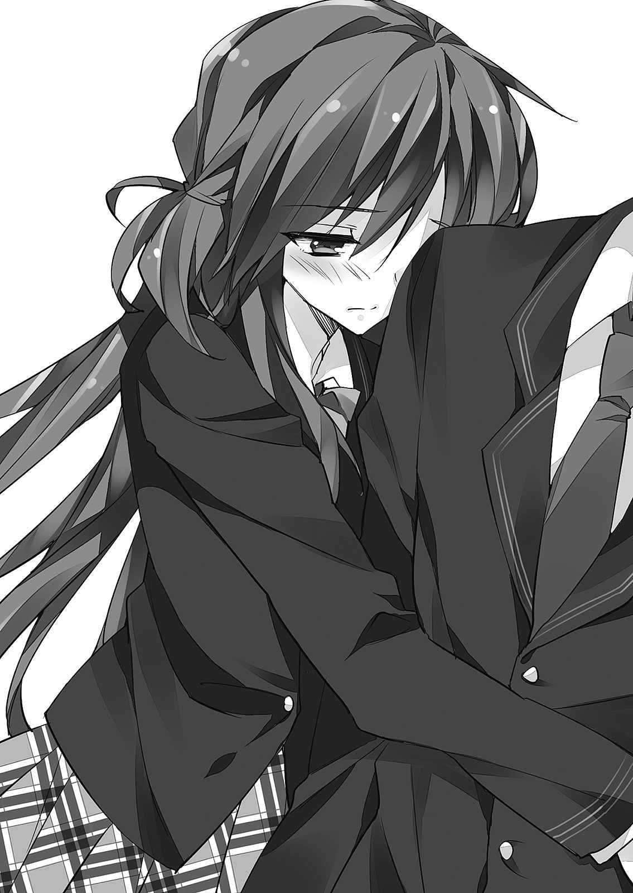
俺の身体に回されたその手は、震えている。
男が苦手なくせに......無理してこんなことするから、手が震えているんじゃないのか？
手が震えるほどなのに......それでも、俺のことを慰めようとして......？
「あんたは、よく頑張った......。そんな風に、自分を責めちゃダメ」
恋ヶ崎は少し顔を上げると、俺のことを抱き締めたまま、涙目で俺の目を見ながら言った。
「こ、恋ヶ崎............」
恋ヶ崎の優しさが温もりから伝わってきた。嬉しかった。温かかった。
この瞬間だけは、救われたような気持ちになった。
恋ヶ崎の腕の中にいる今だけは、全てを忘れられそうだと思った。
「さっき校舎の方に入っていったような気がしたんだけどさー」
そのとき、遠くで聞き覚えのある声が聞こえた。
恋ヶ崎がびくっと反応して、俺から身体を離す。
声のした方に二人で目をやると、外にいる女子生徒二人が校舎の玄関付近にいた。その姿をよく見ると......。
「げっ」
「美樹と瑞希......!?」
恋ヶ崎の友人の、笹川と雨宮だ。俺と恋ヶ崎が誰もいない校舎の中で二人きりでいるところを見られたりしたら、確実に怪しまれる......。
「おい、行けよ......」
「えっ......？」
「校舎の中入ってきたらやばいだろ......」
「え、あ、うん......」
急に現実に引き戻された俺は、妙に冷静な気分で恋ヶ崎に声をかけることができた。
恋ヶ崎は動揺しつつも、俺の言葉に同意して立ち上がり、そのまま慌てて笹川と雨宮の元へ駆けていった。
「..............................」
恋ヶ崎が完全に校舎の外へ出て行ったのを確認してから......俺は階段の上に一人倒れ込んだ。
な......な............なんだったんだ今のはああああっ!?
最後、冷静に恋ヶ崎と会話出来たのが噓みたいだ。未だに心臓が壊れそうな程ばくばく高鳴ってる。
恋ヶ崎の身体の感触が、肩や背中に鮮明に残っていた。
抱き締められたときの恋ヶ崎の温もりや、優しい言葉に......めちゃくちゃ救われたのは事実だ。あの瞬間は、暗い気持ちもどこかへ吹っ飛んでしまったほど。震えながら、無理してでも......あんなことをしてくれた恋ヶ崎に、感謝してもしきれない。
だが今俺は、感謝の気持ちと同じくらい、大きく戸惑っていた。あいつは一体、どういうつもりであんなことを......？ いや、そりゃあ、『屋上から飛び降りそうな顔』してる程傷心の俺を、慰めようとしてくれたんだとは思うけどさ......。そ、それにしたって......。
当然俺は、女の子に抱き締められたことなど初めてだ。校舎の中が暗いおかげで赤面しているのがバレなくて助かった。気付くと、手に汗までかいていた。
そもそも......あいつは、さっき鈴木に告白したんじゃないのか？ 結果は一体どうなったんだ？ 鈴木とうまくいったのにあんなことしてきたのか......？ いや......それとも、告白は失敗したのか？ そもそも告白していたわけではないのか？ ああ、こんなに気になるなら、やっぱりさっき聞けば良かった......。
考えれば考えるほど、恋ヶ崎の気持ちが分からなくなってゆく。
失恋の痛みと、それと同じくらい大きな動揺を抱えたまま......文化祭は幕を閉じた。
２
翌日は、文化祭の振替休日だった。
俺は外に出る気など起こらず、だからといってゲームなどをする気も起きなかったので、一日中ベッドの上でだらだらと過ごした。
一日のうちに何度も何度も、長谷川に振られた場面と、恋ヶ崎に抱き締められた場面が交互にフラッシュバックして、枕に顔を埋めては物思いに耽った。
「せっかく貴重な休日潰して観に行ったっていうのに......ＢＬ白雪姫じゃなかったなんて......この噓つきバカ直輝！ あかりのわくわくしてた気持ちを返してよ──ッ！ ......って......な、直輝............？」
あかりが勝手に俺の部屋の中へ入って来て何か喚いていた。そういえば、昨日も何かギャーギャー騒いでいた気がするが、昨日長谷川と山本さんの問題の件で頭がいっぱいになっていた俺の耳には、あかりの話は全く入ってこなかった。今日も今日で別件で胸がいっぱいなので、内容が全く頭に入ってこない。
「マ......ママ──ッ！ ついに直輝が......心の病気になったーっ！ メンヘラだメンヘラ！ 何言っても反応しないし、目がレイプ目になってる──っ！」
あかりが何やらオカンにやばげな発言をしていたが、それすら止める気になれなかった。
「レイッ......!? ちょっとあかり、そんな言葉どこで覚えたの!?」
その日一日、恋ヶ崎からも長谷川からも、何も連絡は来なかった。勿論、俺も何も連絡しなかった。
＊
翌日。
ほとんど眠れないまま朝を迎え、重い気分で準備をし......学校へと向かった。
長谷川と......それに、恋ヶ崎とも......一体、どんな顔して会えばいいのだろうか？ できることなら顔を合わせたくないが、同じクラスなのでそうもいかない。
そんなことを考えながら登校していると、あっという間に教室へと辿り着いてしまった。
浮かない気持ちで教室の扉を開け、中へ入ると......。
「おー、柏田！」
「一昨日はお疲れ～！」
「......えっ!?」
教卓付近で固まって話しているクラスメイトたちが、俺の顔を見るや否や声をかけてきた。リア充グループの奴らであり、文化祭まではほとんど話したことがない連中だったので、声をかけられたことに驚いた。
「あ、ああ......」
戸惑いながらも返事をする。
「うちのクラスの劇、意外と評判良かったらしいぜ！」
「柏田の女装かなり笑い取れてたしな～！」
男子二人が、一昨日の文化祭での劇のことを口にする。
「え？ マ、マジで......？」
「いやだって柏田の女装、めっちゃ面白かったし！」
その中にいる派手な女子（勿論今まで話したことなどない）も、笑いながらそんなことを言っている。
「え、あ、あははは......」
戸惑いながらも、合わせて笑っておいた。
こんな風にあまり親しくないクラスメイトに気さくに声をかけられたのなんて、入学して以来初めてのような気がする。
正直......素直に、嬉しい。文化祭前までは、大多数のクラスメイトたちに存在すらあまり認識されていなかったであろう影の薄い俺が、こんな風に声をかけてもらえる日が来るなんて......。
それだけでも、白雪姫をやって良かった。恥ずかしい姿をさらして笑いものになった甲斐があったと思える。
鬱々とした気分を一瞬忘れ、爽やかな気分で自分の席へ向かおうとした、その時。
「柏田君」
それは突然起きた。
聞き慣れた声に驚いて振り向くと......そこには、見慣れた長谷川翠の姿があった。
長谷川は、気のせいだろうか、少し悲しそうな目で俺を真っ直ぐに見つめ、俺の元へと近付いて来る。
なぜだ......？ なぜ、あんなことがあったのに......そんな風に俺に声をかけてくるんだ？
俺は今、長谷川の顔を見るのも辛い状態なのに。
「は、長谷川......おはよう」
無理矢理笑顔を作って長谷川に挨拶すると、俺は逃げるように足早に自分の席へと向かった。長谷川は何かを言おうとしていたのかもしれないが......どうしても今は、何も話したくない。
「おう柏田」
席に着くと、後ろの席の桐谷がニヤニヤしながら俺を待ち受けていた。
「今朝お前が来る前、いろいろ噂んなってたぜ。お前と長谷川が文化祭一緒に回ってたとか、それ以外にも、他のクラスの子とか他校の可愛い子とかとも一緒にいたとかって......いつの間にそんなリア充になってやがったんだよ、この野郎」
「う、噂......？ なんだそりゃ......」
俺が長谷川や桜井さん、ムラサキさんと文化祭を回ってたの、クラスの奴に目撃されてたのか......？ 一体いつの間に......？ つーか、俺なんかのことが噂になってたなんて、よっぽど他に話題がなかったんだな......。
それにしても、この俺がリア充だって？ 何かの冗談だろ。長谷川に振られて落ち込んで根暗モードになってる今の俺の、一体どこがリア充だってんだよ。
「いや別に、それは単に成り行きでそうなっただけっつーか......」
「成り行きで女子と文化祭回りまくるって、一体どんな展開だよ!? まあ、それは後でじっくり問い詰めるとしてだな......。お前、後夜祭であの後どうなったんだ!?」
「え、あ......」
あの後......というのは、後夜祭で長谷川に告白したのかどうかということだろう。すっかり忘れていたが......こいつは、俺がキャンプファイヤーで長谷川の元へ行ったことを知っているんだった。
もっとも、あのときは長谷川に告白するつもりなど毛頭なかったんだが......。
「あの後さりげなく捜したけど全然見つからねえしよ......。長谷川見つけられたのか？ 告ったんか!?」
くっ、今一番話したくない話題だってのに......。興味津々に尋ねてくる桐谷を、心底うざったく感じる。だが、噓をつくわけにもいかないしな......。
「何も聞くな......」
俺は低い声でそれだけ言った。
「えっ......!?」
背を向けて着席する俺の肩を、桐谷が摑んでくる。
「おい......マジで？ それって......」
「お前が想像してる通りの結果で大体あってるよ......」
まさか、こんな風に報告する日が来るとは思わなかった......。言ってて、自分で悲しくなってくる。
俺のセリフに、浅黒い桐谷の顔がどんどん白くなっていった。どうやら、本当に俺が告白して、しかも振られたとは思ってなかったらしい。
「マ、マジかよ......文化祭一緒に回るくらいだから、もう完全にいい感じなのかと思ってたのに......」
柄にもなく狼狽えながら、何か言葉を探している。
「あ～～......まあ、元気出せよっ！ ほら、最初からいろいろ難しかったんだって！ よし分かった、俺の彼女女子校行ってるから、今度合コンセッティングしてやるよ！」
桐谷はバシバシと俺の背中を叩くと、そんなことを言ってきた。一応、こいつなりに俺を励ましているようだ。合コン、か......。気遣いはありがたいが、さすがに、すぐにはそんな気分になれねえな......。
気付くと、いつの間にか、恋ヶ崎も教室の中にいた。女子と楽しげに話している。
......恋ヶ崎を見ると、どうしても......一昨日のことを鮮明に思い出して、油断すると赤面してしまいそうだった。席が遠いのが唯一の救いだ。
あれから何度も、恋ヶ崎があんなことをした理由を考えたのだが......何度考えても、あいつがどうしてあんなことしたのか、まるで分からなかった。あいつとどう接すればいいかも、自分の中で気持ちの整理が出来ていない。
「なあ柏田、お前......文化祭の打ち上げどうする？」
朝のホームルームが終わると、桐谷が何事もなかったかのように声をかけてきた。まあ、そういう態度の方が助かるけどさ......。
「打ち上げ？ ああ......」
何やら、ホームルームで文化祭実行委員が話してたな。今週の金曜日に学校の近くのもんじゃ屋で文化祭の打ち上げをやるから、出られる人はなるべく出るように......とのことだった。
「俺は......パスだな」
とてもじゃないが、そんな行事に参加する気にはなれなかった。こんな暗い気分のまま参加したところで、全く楽しめないだろうと思う。それに万が一......長谷川の近くの席になってしまったら、それこそ地獄だ。
「マジかよー。主役が来ないと盛り下がるんじゃね？」
桐谷がからかうような口調で言う。主役って......劇の白雪姫役のことか？ 確かに劇では主役だったが、打ち上げじゃ俺なんかいてもいなくても変わらないだろ。
「でもまあ、そうだよなあ......」
桐谷はそう言いながら、俺の顔を見て苦笑いを浮かべた。長谷川の件で行きたくないと思っている俺の気持ちを汲んでくれたようだ。
黒板の隅に打ち上げの出欠席表が貼ってあるので、そこに自分の名前を書くようにと言われていた。俺は早速ペンを持って立ち上がり、出欠席表の『欠席』の方に自分の名前を書いた。万が一文化祭実行委員や周りから何か言われたら、用があるとでも言っておこう。まあ、俺なんか行っても行かなくても変わらないし、俺が行かないことに関して何か言ってくる人間なんて、誰もいないと思うけど......。
「柏田君......」
「......っ!?」
声に、驚く。振り向くと、すぐ近くに長谷川がいた。
ま、またかよ......。一体、なんなんだ......？
彼女は少し緊張しているかのような面持ちで、俺の目を真っ直ぐに見つめてくる。
俺はすぐに長谷川から目を逸らした。
「打ち上げ......出ないの？」
長谷川は、『欠席』の方に俺の名前が書かれているのを見て、そう声をかけてきた。
「え？ あ、うん......」
「で、できれば......出て欲しいのだけれど......」
「......え？」
俺は、長谷川の言葉に一瞬驚く。だが、すぐにそれが学級委員としての言葉だということに気付いた。
「ごめん......ちょっと、用があるから......」
「............そう」
長谷川と話している時間が、とても気まずかった。早く解放して欲しかった。
「あ、でも......多分ほとんどの人は出るんじゃないかな......？」
長谷川は学級委員として、なるべくたくさんのクラスメイトに出て欲しいのだろうと思ったので、一応フォローとしてそう付け加えた。
「............わ、私は......」
俺が長谷川に背中を向けて立ち去ろうとしたとき、長谷川が何かを言いかけた。
「私は......柏田君に、来て欲しかった......」
彼女は俯いて俺の顔を見ずに、言い切った。
「あ......ご、ごめんなさい......！ 私......何を......」
それからはっと我に返ったようにそう言うと、そのまま自分の席へと戻っていく。
俺に、来て欲しかった......？
何を......何を言ってるんだ？ 長谷川は......。
どうしてそんなことを言う？ 俺のことを振っておきながら、どうしてそんな、思わせぶりなことを言うんだ......!?
俺は混乱した頭で『欠席』の文字の下に自分が書いた『柏田』の文字を呆然と眺めた。
長谷川に少し怒りを覚えながらも......今すぐに修正ペンで自分の名前を消して『出席』の下に書き直そうかなんて考えが一瞬でも浮かんでしまっているあたり、未練タラタラな自分を自覚した。
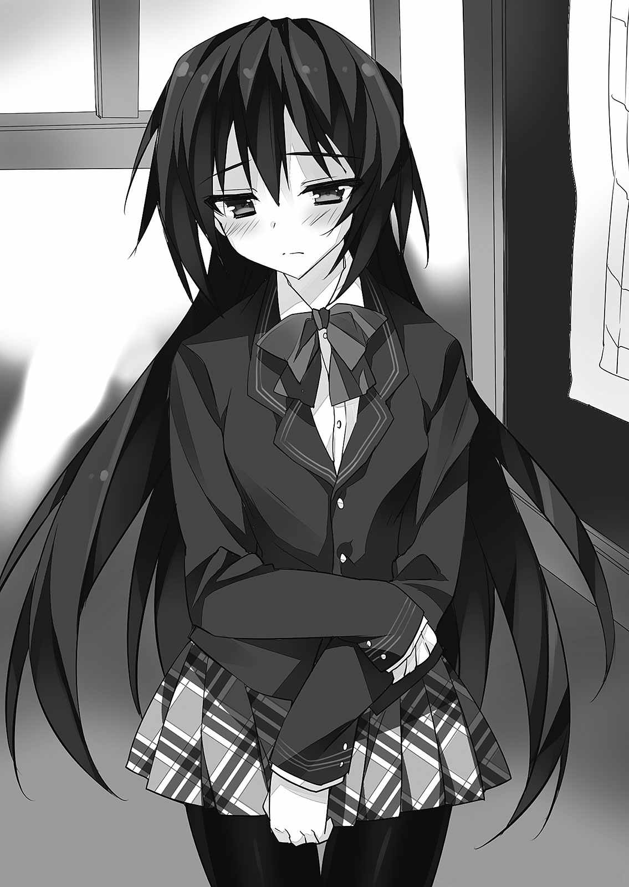
結局、書き直すことはせず、打ち上げは欠席することにした。
だけど、失恋したって、何も変わらない。授業中だって、休み時間だって、俺は無意識のうちに長谷川を目で追い続けてしまう。一種の習慣になっているのだから仕方がないと割り切ることにした。
こんなんで......俺は長谷川を忘れることなど、できるのだろうか？ いつの日か、別の誰かを好きになる日など......来るのだろうか？
その日の放課後。
特に用もなかった俺が、そのまま帰宅するために自分の席から立ち上がると。
「柏田......ちょっといい？」
「......!?」
俺の机の前を、恋ヶ崎が立ち塞いでいた。
俺はつい条件反射で一昨日......こいつに抱き締められたことを思い出し、動揺のあまり後ずさりして自分の椅子に足をぶつけた。我ながらなんて分かりやすく狼狽えているのだろうか。
「な......なんだよ......」
「ちょっと話があるから......屋上まで来てくんない？」
屋上......ということは、ここでは話せない話ということか......。
それにしたってこいつ、あんなことしてきたくせに、なんでこんな風に、何事もなかったかのように普通に俺に声をかけられるんだよ？
「つ、つーかさ、お前......」
「え？ 何？」
とっとと教室を出て屋上へ向かおうとしている恋ヶ崎の背中に声をかけると、振り向いてうざったそうにこちらを見た。
「あ......い、いや......何でもない」
「はあ？」
一昨日のことを話そうとしたのだが、そのあまりにいつもと変わらない様子を見て、その話を口にする勇気が失せてしまった。話題に出したところで、なんて言えばいいのか分からないしな......。
そんな態度されると、意識してドキドキしてる俺がバカみたいに思えてくる。もしかして、一昨日のは俺の夢か妄想だったのか？ そんな風に疑いたくなってくるほどだ。
はあ......こいつが一体何を考えているのか、本当に分からない。
黙って恋ヶ崎の後を歩き、屋上までの階段を上る。恋ヶ崎の方も、屋上に着くまで、俺に背中を向けたまま何も話さなかった。
「あのさ、言いたくないかもしれないけど......あんた、長谷川さんになんて言われたの？」
屋上に着くなり、恋ヶ崎は腕を組んで俺にそんな質問を投げかけてきた。
「え......？」
話というのはこのことか......しかし、質問の意図がよく分からない。
「だから、告白したとき......なんて言われたの？」
つまり、なんと言って振られたのか、ということか......。そんなこと、聞いてどうする？ どうしてそんな傷をえぐるようなことをしてくるんだ？
ただでさえ、一昨日のことが何もなかったかのように振る舞ってくる恋ヶ崎を前に、動揺を隠せずにいるっていうのに......。
「なんて、って............えっと、俺のことはかけがえのない大切な人だけど、それは恋愛感情とは違う、とか......まだそういうのよく分からない、とか......」
正直、まだ思い出したくもないほどだったが、恋ヶ崎が真剣に問い詰めてくるので、仕方なく答えた。
今思えば、長谷川のあのときの言葉は......なるべく俺を傷つけないように振るために、必死に考えた言葉だったのだろうな。そう思うと、余計に気が滅入ってくる。
「そう......」
恋ヶ崎は俺の言葉を聞いて考え込む。
「そもそも、ずっと聞こうと思ってたんだけど、あの文化祭の日......あんた、長谷川さんとお兄さんの問題、うまくいったって言ってたわよね？」
「え？ ああ......」
そういえば、その件もまだこいつに話してなかったな。もっとも、それを報告するどころではなくなってしまったのだが。
「長谷川さんとお兄さん、ちゃんと仲直りできたってこと？」
「ああ、そうだよ......。それで......後夜祭で俺は、元々告白するつもりなんかなかった。最初は、長谷川に告ろうとしてる男子がいたから、それを阻止したんだよ。それでその後に、長谷川にお兄さんとの件で礼を言われて。......で、俺がその勢いで自分がオタクだってことカミングアウトしたんだ。そしたら、長谷川が俺のことを......『オタクであろうとなかろうと柏田君がかけがえのない大切な人だってことには変わりない』って言ってくれて......」
そうだ、あのときはとても幸せだった。できることなら、告白する前のあのときに戻りたい。もっとも、あそこで気分が高揚して勢い余って告白して、こんな結果になってしまったわけだが......。
「えっ、そうなの!? そ、それって......結構いい感じなんじゃないの!?」
恋ヶ崎が驚いた様子で俺に詰め寄る。
もうすっかり、恋ヶ崎と普通に話せている俺がいた。恋ヶ崎の方は最初から完全にいつも通りだし......。
つまり......恋ヶ崎の今日の態度を見るに、一昨日のアレは......単に、俺があまりに気の毒だったから、慰めるためにやっただけで......他意はなかった、ということなのか......？
..............................。
......って、そんなこと、最初から分かりきってたことじゃねえか！ なんで俺今一瞬、落ち込んだりなんかしてんだよ。俺は一体、何を期待して......。くっ、自分で自分が恥ずかしくなってくる......。
「柏田？ 何、どうしたの？ それで、続きは？」
「え!? あ、ああ......んでまあ、その言葉にテンション上がった俺が、告って玉砕......」
「............っ」
俺の言葉を聞いた途端、恋ヶ崎が言葉を失う。
「............で、でも......今の話を聞いた限りだと、長谷川さん、まんざらでもないような気がするのよね......。『かけがえのない大切な人』って言ってくれてるわけだし、まだ恋とかよく分かんないだけで、今後気持ちが変わる可能性だって......」
「お前......何が言いたいんだ？」
「だ、だから............諦めるには、まだ早い......かもしんないじゃん......」
恋ヶ崎は俺から顔を逸らして俯きながら言うので、今奴がどんな表情をしているのか分からない。
諦めるには早い......？
未だに、俺が告白したときの長谷川の困惑した表情が鮮明に思い浮かぶ。長谷川は、俺に告白されて、口では嬉しいと言っていたが......本当は困惑していたのだ。
あんな顔をされて......諦めないで好きでい続けられる程、俺の精神力は強くない。
それに......もうあんな辛い思い、二度とごめんだ。これ以上、傷つきたくない。
「そんな......変に期待を持たせるようなこと言うなよ......」
「......！ か、柏田......」
「もう決めたんだよ、諦めるって......」
「............」
俺の様子を見て、恋ヶ崎はもう何も言わなくなった。
俺にもう少し強靭な精神力があれば......一度振られたくらいで諦めずに、まだまだ頑張ろう、なんて気持ちになれたのだろうか？ 今の俺には、とてもじゃないが無理だ。
「......お前は............」
ずっと気になっていたことを、口にしようと思った。答えによっては、立ち直れなくなるほどショックを受けてしまうだろうとも思うが......もう、聞かずにはいられない。
「お前は......ど、どうなんだよ。キャンプファイヤーで......鈴木と話してただろ......？」
「え？ ああ、うん......」
俺は意を決して口を開く。
「......こ、告白......したのか......？」
「告白!?」
恋ヶ崎が大きな声を上げた。
「あたしが、告白？ なんで!?」
「え、いやだって、後夜祭の告白タイムとかって恒例イベントみたいだし、お前そういうの好きそうだし......」
「するわけないじゃん、告白なんて！ あたしは、友達が告白したいって言うから人捜しに付き合ってて、その途中に偶然鈴木君に会ったから軽く話してただけで......」
「え......!? そ、そうなのか......？」
告白......してたわけじゃないのか......。そ、そっか......。
「......で、でもお前、鈴木と......うまくいってんだろ？ 本人に聞いたけど、夏コミで買ってきた同人誌、お前が差出人だって分かったみたいじゃねえか。文化祭の日も、軽音部の打ち上げでオタ話で盛り上がったりしたって......」
「え？ ああ、うん、そうそう。そういえばあんたに報告し忘れてた」
驚くほどあっさりと、恋ヶ崎は答えた。もっとこう......そうなの～！ 超嬉しくて～！ とか騒ぐかと思ったのだが......恋ヶ崎は極めて冷静だった。
「お前......嬉しくないのかよ？」
「へ？ そりゃあ嬉しかったわよ。鈴木君も今までより話してくれるようになったし」
平静を保ったまま、大して嬉しくもなさそうに、恋ヶ崎は続けた。
もしかして、今俺がこんな落ち込んだ状態だから気を遣っているのだろうか？ 確かに、今ここでテンション高く騒がれたら、俺はますます落ち込むだろうとも思うが......。
一通り話が終わったので、恋ヶ崎が屋上から教室へと戻ろうとする。
「あっ、恋ヶ崎......」
思わず、俺はその背中に声をかけた。
なんとなく、このまま別れるのを名残惜しく感じてしまった。どうしても、一昨日のことを話したい。あれが俺の夢や妄想ではなかったのか確かめたい。一体どうしてあんなことをしてくれたのか、どういう意味があったのか......聞きたい。
それに、慰めてくれたことに対して礼も言ってないし......。
「え、何？」
俺の言葉に振り向いて、恋ヶ崎は俺を見る。
「あ、い、いや......その、......」
「なんなの？ さっきから。言いたいことがあるならはっきり言えば？」
苛ついた様子で言うその態度は、やっぱり悲しくなるくらいいつも通りだ。
「い、いや......だからさ、その......」
「あーもう、マジでなんなわけ？ うざいなあ。はっきりしてよ！」
「............お、一昨日の......後夜祭のとき、校舎の中で............あ、あ、あれは......」
勇気を出して、言葉を振り絞った。
「............っ！」
俺の言葉を聞いた瞬間、今までうざったそうな顔をしていた恋ヶ崎の顔が、瞬時にカアッと赤く染まる。
「..................」
すぐに俺から目をそらした。何か声に出そうとしているが言葉にならないようだ。視線を泳がせながら、顔は真っ赤なままで、スカートをぎゅっと握りしめている。
この反応......照れてる......んだよな？
恋ヶ崎は何も言葉を発さないまま、俺に背を向けて早足で歩き出した。
「ちょ、おい......」
慌てて俺はその背中を追う。恋ヶ崎は振り向くことも言葉も発することもせず、ひたすら早足で階段を降り続けた。後ろから見ると、耳が真っ赤だ。階段を降りたところで恋ヶ崎の肩に手をかけようとしたそのとき、廊下を歩いている人物に声をかけられた。
「あ、カッシー！ と、恋ヶ崎さん」
「す、鈴木......？」
さすがに恋ヶ崎も立ち止まって、鈴木の顔を見ている。
鈴木は一人ではなく、男子生徒三人と一緒だった。なんだか見覚えのある......あ、もしかして、軽音部のメンツか？ 文化祭の軽音部のステージで見た顔だ。
「恋ヶ崎さん！ 今日来れないんだってー!? なんで来れないの～!?」
そのうちの一人、金髪の派手な奴が、恋ヶ崎の姿を見るなり声をかけた。
「あ......ご、ごめんなさい......その......先約があって......」
「マジで～!? 超残念！」
「川野、無理に誘うんじゃねえよ。ほら、恋ヶ崎さん困ってんだろ」
恋ヶ崎に声をかけた男子の背中を、別の男子がバシッと叩いた。
「じゃあ、またね、二人とも」
「あ、ああ......」
鈴木が俺らに挨拶をして、軽音部の連中はどやどやと去っていった。
「今日......？ って、何かあったのか......？」
今の会話を聞いて疑問に思ったので、軽音部の連中が完全に立ち去ったのを確認してから、恋ヶ崎に尋ねた。
「え？ ......ああ、うん......。文化祭当日に軽い打ち上げはやったんだけど、今日ちゃんとした打ち上げパーティーを鈴木君ちでやることになってて......」
「えっ!? マジで!? お前、なんで行かないんだ!?」
さっき先約がある、とか言ってたが......。
「だって、男子の部屋に男子が四人も集まってるとこに、女子一人で行くなんて......前よりは男子苦手じゃなくなってきたとはいえ、絶対無理に決まってんじゃん！ 文化祭の後学校でやった打ち上げですら、緊張してしんどかったのに......。それに、鈴木君とは少し話せるようになったけど、他の男子はまだ全然苦手だし......」
ということは......つまり、先約があるというのは噓で、行きたくないから行かない、ということか......。確かにその状況は、男が苦手な恋ヶ崎には相当厳しいのだろうなと想像できるが......。
「なんだよそれ......せっかく鈴木と仲良くなれてきてんのに、いいのかよ......？ すごいチャンスなんじゃねえのか？」
「だって、無理なもんは無理だもん。行ったところで、速攻帰りたくなっちゃうだろうし......」
「鈴木の家に行けるんだぞ？」
「確かに鈴木君の家には行ってみたいけどさ......」
恋ヶ崎は俯いて考える動作をしたが、すぐに『やっぱ無理』と結論を出した。
今まで俺は、何度もこいつに助けられてきた。
結局うまくいかなかったが......長谷川と仲良くなれたのだって、こいつが最初に俺と長谷川をデートさせてくれたのがきっかけだ。長谷川とのデートのときもサポートしてくれたし、俺がくじけそうなとき何度も励ましてくれた。長谷川と山本さんを仲直りさせるときだって相談に乗ってくれた。
せめて、今までの......恩くらいは返したい。
それに、こいつが今まで協力してくれたことを、俺が自分のせいで台無しにしてしまったから......その罪滅ぼしをしないと、なんとなく俺の気分が悪い。
俺は、ポケットから携帯を取り出した。電話帳を開いて通話ボタンを押す。
「......？ か、柏田......？ どこに電話して......」
『もしもしカッシー？ どうしたの？』
一度のコールですぐに鈴木が出た。
「あ......今日の軽音部の打ち上げ......俺も一緒に行っちゃだめか......？ 恋ヶ崎と一緒に......」
「はあ!?」
俺の言葉を聞いて声を上げたのは鈴木ではなく、目の前の恋ヶ崎だった。
「いやその、恋ヶ崎の先約ってのが俺との予定だったもんだからさ......恋ヶ崎に今打ち上げのこと聞いて......俺も行きたいな～とか......」
『あ、そうだったの？ 勿論いいよー！ 今俺たち、もう駅に着いてるんだけど......』
「いいのか？ えっと......じゃあ、先に行っててくれ。俺と恋ヶ崎もすぐ行くから。お前んちまでの道のり分かるし」
『ほんと？ じゃ待ってるね～』
通話を終わらせた俺の目の前で、怒りと困惑の感情が入り交じった表情をしている恋ヶ崎が、俺を睨み付けていた。
「あ、あんた......何考えてるわけ!?」
「......一人で行くよりは、俺がついていった方がマシだろ？」
「そ、それはそうだけど......あんた、軽音部と関係ないじゃん！」
恋ヶ崎の言う通りだった。
鈴木はあんなんだから二つ返事でオーケーしたが、他の軽音部の連中からしたら、俺って相当うざい奴だろうと思う。部外者な上に、鈴木以外とは全く面識がないというのに、彼らの打ち上げパーティーに無理矢理乱入しようとしているのだ。鈴木から話を聞いた他の軽音部メンバーは、今頃文句を言いまくっていることだろう。そんな場所に今から行くのかと思うと、自分で言い出したこととは言え、とても気が重い。
「あんたにとって超アウェーでいづらい空間なんじゃないの......？ あんた人見知り激しいってのに、初対面の人たちの中に入っていけるわけ......!?」
「......う、うるせえな......」
恋ヶ崎の言うことは実に当を得ている。軽音部の連中の中になんて入っていける自信なんて、全くない。ぶっちゃけ、すげー行きたくない。想像しただけで胃が痛い。
「ほら、あんただって、めっちゃ行きたくなさそうな顔してんじゃん」
「そりゃー行きたくねえよ！ 絶対歓迎されないって、分かってる場所になんか......」
「......！ じゃあ、早く鈴木君に、やっぱり行かないって電話して......」
「いや、行く！ 絶対行く！」
「......はあ!? あんた、自分が何言ってるか分かって......」
「俺のことなんかどうでもいいんだよ！ 大事なのはお前の意志だ！ 行きたいんだろ!?」
「............っ、な............」
思わず大声を出してしまった俺に対して、恋ヶ崎は驚いて放心している。
少しの間何も言わずに俺の顔を見ていたが、やがて無言のままコクン、と頷いた。
「よし。じゃあ、鈴木にすぐ行くって言っちまったから、とっとと行くぞ！」
「......うん............」
恋ヶ崎はやけに素直な返事をする。俯いてしまったので、表情がよく見えない。
一応納得したようなので、俺たちは鈴木の家へと向かうことにした。
鈴木の家に着いてインターフォンを押すと、鈴木がリビングへ来てくれと言うので、鈴木の家の中へと上がった。今は鈴木以外に家の人はいないらしい。鈴木の家は二階建ての一軒家で、俺は何度か来たことがある。一階のリビングに入ると、そこに鈴木を含めた全員がいた。それぞれテーブルを囲んでソファーに二人、カーペットの上に一人座っていて、Ｗｉｉで遊ぶための準備をしていた。鈴木だけがキッチンに立っている。
「お邪魔しまーす......」
「あ、恋ヶ崎さーん、待ってました～！」
さっき学校で恋ヶ崎に声をかけていた金髪の男子が、恋ヶ崎の顔を見て嬉しそうにしている。恋ヶ崎は苦笑いを浮かべて会釈した。
「お前なあ......」
さっき金髪の背中を叩いていた男子が、呆れた様子でため息をついた。黒髪で前髪が長く、ピアスをつけており、若干ヴィジュアル系かぶれっぽい外見の男子だ。
「............」
その様子を黙って見ているのは、短髪で小太りな男子生徒だった。確か......文化祭のステージで見たとき、ドラムを叩いていたような気がする。鈴木は勿論、他の男子二人も割とヴィジュアルレベルが高いのに比べて、ドラムの男子だけは普通な感じだった。
しかし、三人とも髪型や制服の着こなしを見るにリア充オーラを漂わせていることには間違いなく、とても仲良くなれそうにない......と瞬時に判断してしまう。鈴木は俺みたいな地味オタとも仲良いし、こういう奴らとも仲が良いんだもんな......。改めてすげえと思う。
「............」
軽音部の連中三人は、恋ヶ崎の後ろから出てきた俺の姿を、それぞれ無言で見た。全員、『何なのこいつ？』『なんで来たわけ？』って顔をしている。
「あ、どうぞ上がって上がって～」
笑顔で俺たちを迎え入れる鈴木と、他の軽音部メンバーとの温度差が激しすぎて......現時点で既に帰りたい衝動に駆られる。
「ねーねーカッシーって料理できる？ 適当に肉とか野菜とか鍋に放り込めばいいんかな～」
鈴木に声をかけられたので、とりあえず俺と恋ヶ崎は鈴木が立つキッチンの方へと向かった。
鈴木は野菜を切っているようだが、慣れない手つきで危なっかしい。キッチンには、これから入れるであろう大量の肉と、少量の野菜が置かれていた。これらは軽音部連中が自分たちの金で買ってきたのだろうか？ 後で俺たちも金払わないとな......。
「あ、そっか......今日鍋パやるって......」
恋ヶ崎が呟いた。鍋パ......鍋パーティー......出たよ、リア充御用達ワード。
「俺も料理なんてやったことないからよく分かんねえな......」
「あ、あたし......よ、良かったらやろうか!? 家でママが鍋やるとき手伝ってるし......」
恋ヶ崎が提案した。こいつ、料理できたのか......。
「そうだな！ じゃあ......」
恋ヶ崎が鈴木の手伝いしてやれよ！ と言おうとして......俺は言葉が止まってしまった。恋ヶ崎と鈴木の二人きりで料理をさせて、二人の仲を進展させようと思ったのだが......その場合、邪魔者な俺はここにいるべきではなく、あちらの軽音部メンバーの方へ合流しなければいけない。クラスも違うし初対面だし、そもそもタイプだって全く違う（俺＝地味オタ あいつら＝リア充）。あんな奴らと一緒にゲームなんて......絶対無理だ。まず入っていけない。
「さ、三人で......鍋の準備やるか......」
つい、保身に走ってそう言ってしまった。すまん、恋ヶ崎......。協力するつもりでいたってのに、早速これだよ......。だが、ゲームが始まったらしく楽しげに騒いでいる軽音部の連中の声を聞いていたら、まず入っていくことなど不可能だと怖じ気づいてしまった......。
「あ、多分一人で大丈夫！ 二人はゲームやってて！」
恋ヶ崎が腕まくりをしながら、力強く言った。すげえ、たまには頼りになるじゃねえか。
「お前、一人でできるのか......？」
考えてみれば確かに、三人もキッチンにいたら邪魔だろうし、料理が出来ない俺と鈴木は役に立たないかもしれないな。それに、恋ヶ崎は自分一人の力で料理を作って、鈴木の好感度を上げようと考えているのかもしれない。
「じゃ、任せちゃっていいのかな？」
鈴木の言葉に恋ヶ崎は力強く頷いた。一人意気込んでいる恋ヶ崎をキッチンに残し、俺と鈴木はリビングの軽音部の連中の元へと向かう。ソファーにはもう空きがないので、カーペットの上に座り込んだ。
テレビ画面に目をやると、どうやらＷｉｉの『スーパーモリオブラザーズ』というゲームをやっているようだ。俺も持っているのですぐに分かった。しかし......。
「ちょ、おい！ 誰だよ今ふんずけたのは!?」
「あ──っ！ 死んだ──っ！」
あまりゲームに慣れている者がいないのか、全員下手くそだった。その上、いちいち騒がしい。
「あ、次鈴木やる？」
今死んだのは、さっきから恋ヶ崎に声をかけている金髪の奴だったらしく、鈴木に向かってＷｉｉのコントローラを差し出す。
「あ、じゃあカッシーやる？」
鈴木が俺に気を遣って、金髪から渡ってきたコントローラをそのまま俺に差し出してくる。
「え!? いや、いいよ俺は......俺のことはあんま、気にしなくていいから......」
鈴木以外の軽音部メンバーに部外者な俺がよく思われていないであろうことは分かっているので、今日はなるべく控えめな態度でひっそりとしていようと思い、そう答えた。
「えー何それ？ じゃあカッシー俺の次ね」
鈴木が納得のいかない顔で言いながら、コントローラを手にしてゲームを始める。
それから暫くの間、俺は軽音部の連中がゲームをやっている様子を眺めていた。何度か鈴木が俺にコントローラを譲ろうとしたが、気まずいので断り続けた。
まあそれでも、鈴木がいるおかげでアウェー感はあまり感じなかった。
「鈴木、ちょっとトイレ借りていいか？」
「あ、うん、いいよ～」
不意に尿意を催した俺は、その場から立ち上がってキッチンの横にあるトイレへと向かう。
......ふと、トイレに入る前、料理中の恋ヶ崎の様子が気になってキッチンをチラ見する。
「......!?」
恋ヶ崎はちょうど肉を切っているところだったようだが......俺の目から見ても、包丁の持ち方も、左手の添え方も、なんかおかしかった。その上、包丁を持つ手がプルプルと震えていてものすごく危なっかしい。そのまま肉を切ろうと右手を動かす。
「ちょ、お前......！」
俺は思わず、包丁を握る恋ヶ崎の手の上に自分の手をかぶせて右手の動きを止めた。このまま切ってたら手を切りそうだと、咄嗟に判断したのだ。
「......っ!? あっ......な、な、なな......何すんのよっ!?」
恋ヶ崎は俺の顔を見て、驚いた様子で声を張り上げた。予想外にでかい声に耳がキーンとする。いや、いくらなんでも驚き過ぎだろ......ここまで驚くとは思ってなかった。
「な、ななな、な、なんであんた、いきなりあたしの手に触って......!? ど、どど、どういうつもりよっ......!?」
恋ヶ崎は顔を真っ赤にして、これでもかというくらい動揺している。
慌てて俺は、恋ヶ崎の上にのせた自分の手をどけた。
「えっいや、今思いっきり手ー切りそうだっただろ!? お前、全然包丁の扱い慣れてねえじゃん！」
「えっ......あ、う............」
恋ヶ崎は自分の手元を見て、何も言えなくなった。
恋ヶ崎がでかい声を出したせいで、ゲームをやっている軽音部の連中が不思議そうにこちらをチラチラ見ている。
「そ、そ、それにしたって......いっい、いきなり......手ぇ触ってくるとか......びびるじゃん......。マジやめてよ、そういうこと......」
今度は消え入りそうな声で、俺の顔を見ずに言う。顔はまだ赤いままだ。包丁をまな板の上に置いて、自身の右手を左手で握っている。
こいつは男が苦手だから、急に触られて驚いたんだろうが......今まで俺相手にはこんな反応したことなかったってのに、一体何なんだよ......？ そんなに俺に手を触られたのが嫌だったのだろうか？
「つーかお前さ、ほんとに料理慣れてんのか......？」
さっきの包丁を握る手つきを思い出し、そんな疑問が湧いてきた。
「......っ！」
恋ヶ崎が俺のセリフに無言でびくっと反応する。さっきまで赤かった顔が青白くなっている。
「......鍋、どこまで進んでんだ？」
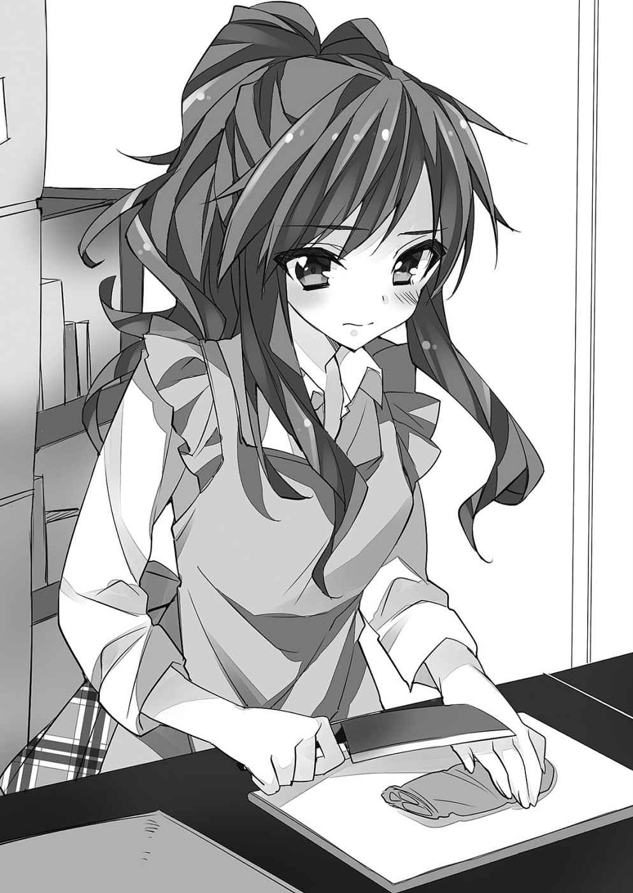
その反応を見てますます不安になった俺は、ガス台の前まで移動して、グツグツと煮込まれている鍋の中を覗き込む。
「......げっ!?」
鍋を見た俺の目に飛び込んできたものは......。
「なっ......なんだ、これは......!?」
不自然に茶色くなった、なんともおいしくなさそうな鍋だった。家で食べるオカンが作る鍋とは、なんだかまるっきり別のもののように見える。
「うわっ、つーか......なんで牛肉先に入れてんだよ!? 牛肉は、食べる直前に入れるんだろうが！」
鍋の中の茶色い汁（？）の中に、硬くなって色が変色した牛肉が浮かんでいる。さらに、白菜、にんじん、鶏団子、白滝なども一緒に入っているが、野菜の形や大きさがバラバラだったりして、切り方がめちゃくちゃだ。
こいつ......あんなに料理できる風を装ってたくせに、野菜すらまともに切れてねえぞ!? 俺はとりあえず、これ以上この鍋がまずいことにならないよう、慌ててガス台の火を止めた。
「そもそも、なんで茶色いんだよ......!?」
普段家で食べる鍋を思い出すと、汁は透明だったような気がするのだが......。
「あ、それは......味見したら味がなくて、味付けに醬油を入れたから......」
「醬油!? いや......最後にポン酢とかごまだれとか付けて食べるから、味は薄味でいいんじゃねえの......!?」
出汁も取らずに醬油を直接鍋に入れるって......２ｃｈの『嫁の飯がまずい』スレッドのメシマズ嫁の料理レベルにやばいぞ!?
不気味な茶色い醬油汁の鍋は、腹ぺこ状態であっても全く食欲をそそられなかった。
「お前......これで家で鍋手伝ってるってほんとなのかよ......？ できないならできないって言えよ......！」
これなら、まだ俺の方がうまくできた気がする......。さっき自信満々に一人でできるとか言ったのは一体なんだったんだよ!? 力強く言うから任せたが、こんな鍋とても食べられたもんじゃないぞ......。
「う......うるさいなあ！ あんたなんかに言われなくても分かってるってば！ そんなに責めなくたっていいじゃん！」
恋ヶ崎は俺に言われっぱなしで頭に来たようで、言い返してきた。だが、自分でも自分の料理に凹んでいるのか、反論がいつもより控えめな気がする。
俺たちの様子を見て不思議に思ったようで、軽音部の連中もゲームを中断させてどやどやとキッチンにやって来た。
「..................」
それぞれ、鍋の中を見て絶句している。
「ごっ......ごめんなさい......！ やっぱり、やり方とか見ながらやるべきだった......何も見ないで感覚でやってたからこんなことに......」
恋ヶ崎は軽音部の連中に向かって頭を下げて謝罪した。
やべ、もしこれで、恋ヶ崎が軽音部連中に責められたりしたら......。
「あ、いや......ごめん！ 俺が......こいつが料理自信ないって言ってんのに、無理矢理押しつけちゃったんだよ......！ だから、こんなことに......」
少しでも恋ヶ崎の非を減らそうと、咄嗟にそんなことを口にした。
「......え............あ、あんた......」
恋ヶ崎はそんな俺に驚いて、目を大きくして俺を見つめている。
さっきから何度か恋ヶ崎に声をかけている金髪が、恋ヶ崎の方に顔を向けた。恋ヶ崎は怒られるのかと怯えてびくっと身体を強ばらせる。くっ、いざとなったら俺が......。
「いやいや！ オレたちがやってもうまくいかなかっただろうし、オレたちなんて遊んでて完全に任せっきりにしちゃったわけだしさ、気にしなくていいよ！ なあ！」
金髪が、笑顔で恋ヶ崎を励ましてから、後ろにいる軽音部の連中に声をかけた。そのセリフに、恋ヶ崎も俺も身体の力が抜けていく。はあ、良かった......。
声をかけられた他の軽音部たちも「そうそう」「食べたら美味いかもしれないし」とか言って恋ヶ崎を励ましている。こいつら......心広すぎだろ！ リア充って奴らは、女に優しいもんなんだな......自分たちが用意した具材を全部駄目にされたってのに......。とりあえず、恋ヶ崎が責められなかったことに安堵した。
「あっあたし......新しい具材買ってきます！ 今度はちゃんとクックパッド見ながら作るから！ ほんとにごめんなさい！」
恋ヶ崎は自分の鞄を持って、買いものに出掛ける準備をし始める。
「えっ!? いやいやいいよ！」
「い、いえ......自分でやったことの責任は自分でとるので！」
引き止めようとしている金髪を、恋ヶ崎は振り切った。どうやら、鍋を駄目にしてしまったことに相当責任を感じているようだ。しかし、また失敗したら困るから、調理しなくてもいい出来合いのものを買ってきた方がいいような気がするのだが......。
そこまで考えて、俺はふと思い立った。
「あっ......そうだ、じゃあ鈴木、スーパーまで案内してやれよ！ 恋ヶ崎一人じゃ分からんだろうし、荷物も大変だろうから！」
これは、鈴木と恋ヶ崎を二人きりにする絶好のチャンスではないか！
「あ、うん、そうだね～。案内するよ」
「えっ......えぇえ!?」
俺の提案に、恋ヶ崎が慌てふためいている。
「じゃみんな、適当にくつろいでて」
鈴木が俺らに声をかけて、恋ヶ崎と共にリビングを出て行った。無事、鈴木と恋ヶ崎を二人で買いものに行かせることに成功した......。恋ヶ崎......うまくやれよ......。
恋ヶ崎と鈴木が買いものへ出掛けるのを見送ってから......俺は、この場が自分にとってとても居づらい空間になってしまったことに気付いた。
やばい......まだ誰とも打ち解けてないってのに、軽音部メンバーと俺だけになってしまったではないか......。
軽音部の連中は、どやどやとまたテレビ画面の前へと戻り、ゲームを再開させる。
「はい」
「......えっ!?」
突然、俺に向かってＷｉｉのコントローラが差し出された。差し出してきたのは、金髪だった。そうか......四人用のゲームだから、俺もやらないと四人揃わなくてゲームができないんだな......。まだ打ち解けてないメンバーとこのアウェーな状況でゲームをやらなくてはならないなんて......。
「えっと、鈴木の友達だよね？ 名前なんだっけ？ 何組？」
なんと、金髪が俺に向かって声をかけてきた。
「あ......俺は、Ａ組の柏田......」
「Ａ組？ 鈴木と同じクラスじゃないんだ？ 中学が一緒とか？」
「あ、いや......中学も違うんだけど......その、たまたま気が合って......」
オタク趣味のことが言えないのでうまく説明ができなかったが、なんとかしどろもどろで必死に喋った。
「へー。オレ、Ｃ組の川野。こっちが俺と同じＣ組の小島で、こっちがＤ組の田辺」
金髪......いや、川野が、自分自身と他のメンバーを俺に紹介してくれた。小島と紹介されたのが黒髪で前髪の長いヴィジュアル系っぽい奴で、田辺と紹介されたのが小太りのドラムだった。無視せずに俺に挨拶してくれるなんて、この川野って奴、意外といい奴なんだな......。俺は少し嬉しくなった。
......せっかく向こうが友好的に接してくれてるんだ......俺が心を閉ざしたままでどうするよ。どっちにしろ、鈴木と恋ヶ崎が帰ってくるまで、このメンバーで過ごさなきゃならないんだ。俺もなるべく......こいつらと打ち解けられるよう、頑張ろう！ 内心、密かに決意を固める。
そうこうしている間に、ゲームが始まった。
「うわ──っちょっお前、簡単に死んでんじゃねえ！ なんでクリ坊なんかに当たるんだよ!?」
このゲームに不慣れなのであろう連中は、また次々と簡単なところで命を落としていく。まあ、死んだところでまた新しいのが出てくるわけだが。
「ロイージ使ってんの誰!? うまくね？」
「あ、俺......」
気付いたら、俺が操るロイージが先頭になってしまっていた。
「あっちょっと待って！」
先へ進もうとしている他のメンバーに向かって、俺は声を張り上げた。
「ちょっとこの下にでかいコインあるから、それは絶対とんないと！」
俺は無意識のうちに、なぜか必死にそんな発言をしていた。
「え？ コイン？」
「つーか詳しいな？」
「あ、俺もこのゲーム持ってるから......」
「そうなん!? どうりでうまいと思った！」
ヴィジュアル系もどきの小島も、小太りドラムの田辺も、気軽に俺に話しかけてくれたので、俺はさりげなく嬉しくなった。
他の連中もでかいコインを取ろうと俺の後に付いてくる。
「あ──っ！」
うっかりミスで俺のロイージは敵に当たってしまい、でかいコインを取る前に死んでしまった。さっきから連中のことをゲームごときでうるさい奴らだと思っていたが、死んだときはつい大声を上げてしまうもんなんだな......。
「よし、じゃあ俺が......ギャーッ」
「おい川野、人を巻き込んでんじゃねえ！ 俺まで死んだじゃん！」
俺の後ろからでかいコインを取ろうとついてきた川野操るモリオと、小島操るペノキオも、あっけなく死んだ。
「ブッ......」
その様子に、思わず俺は噴き出してしまう。
そのとき、リビングの扉が開いてビニール袋を持った鈴木が入って来た。
「ただいまー......なんか盛り上がってんね？」
鈴木は俺たちの様子を見て、少し驚いていた。
「こんにちは～」
「！」
鈴木の後ろから、恋ヶ崎と......鈴木の姉である実月さんが姿を現した。ちょうど今帰ってきたところなのだろうか。
「爽太の姉です～。いつも弟がお世話になってまーす」
この間鈴木の家に遊びに来て姿を見たときからそんなに経っていないというのに、もう髪の色が変わっていた。全体的にオレンジっぽい茶髪だが、毛先の方だけ金色に脱色されている。
「鈴木のお姉さん!? 超可愛いっすね！」
川野が、実月さんを見るなりテンションが上がっている。こいつ......恋ヶ崎にもちょっかいかけまくってるし、やはり見た目通りの女好きか......。
今度は恋ヶ崎と実月さんで、キッチンに立って料理を始めた。良かった......恋ヶ崎一人に任せるのは正直めちゃめちゃ不安だったので、とても助かった。
鈴木はこちらに来て、ゲームに加わった（死んだ奴がどんどん順番を変わっていくという方式になった）。
その後も、意外にも......ゲームは盛り上がった。このゲームが盛り上がりやすいゲームだということもあるとは思うが......軽音部の連中が、俺が思っているような奴らではなかったということも、盛り上がった要因だと思う。普通に話しやすく、部外者の俺にも気さくに接してくれたのだ。少なくともゲームをやっている間は、なんとなく打ち解けることができた気がする。
『部外者な俺は軽音部の連中からうざったく思われている』と、ずっと思っていたが......もしかしてそれは、単なる俺の思い違いだったのかもしれない。実際、彼らから何かを言われたりされたりしたわけではないのに、勝手に俺が思い込んでいただけなのだ。
俺はよく変にネガティブ思考になってしまうが......それが単なる思い込みに過ぎなかった、ということは、今までにも何度かあった。俺の悪い癖なのだと思う。
考えてみれば、恋ヶ崎だって鈴木だって、外見からしたら俺とは住む世界が違うリア充な奴らなのだ。それなのに、仲良くなれた。なのに俺は、奴らと仲良くなれた後も、外見が派手だったりイマドキだったりする奴らのことを、外見だけですぐに『リア充っぽいから仲良くなれない』なんて決めつけていたのだ。だけど......今までの経験から考えれば、リア充っぽい外見の奴だって、話しやすくて仲良くなれる奴はいっぱいいる。今まで俺は、なんて頭が固い人間だったのだろうか。せめて、今日からは......今日のことをきっかけに、人を外見だけで判断するのをやめよう。リア充とも、仲良くなれるよう......頑張ってみよう。
「実月さん髪色変えましたね～！ 超可愛い～！」
「ほんとー!? ありがとー！」
「あ、そのネックレスＱポッドのですよね？」
「そうそう～。桃ちゃんＱポッド好きなの？」
「はい、超好きです！ 原宿にあるＱポッドカフェ一回行ってみたくて......」
「あ、それ、この間友達と行ってきたよ！」
「え、ほんとですか!? いいなー！」
「すごい良かったよー！ 今度一緒に行かない!?」
「え、いいんですか!?」
何やら、料理をしながら恋ヶ崎と実月さんが楽しげに話している声が聞こえてくる。女子は女子で盛り上がっているようだ。恋ヶ崎も楽しそうにしているので、そういう意味でも、実月さんが来てくれて良かった。
間もなく、実月さんと恋ヶ崎が作った鍋が出来上がった。俺たちはゲームを中断させて鍋へと群がる。見た目からして、さきほど恋ヶ崎が作った鍋とは大違いだった。見た目も匂いもめちゃくちゃ美味そうだ。
「おお～！」
「やべえ超うまそー！」
軽音部の奴らも、大げさなくらい鍋に感動している。さっき恋ヶ崎の鍋を見たとき、口では恋ヶ崎を励ましてくれていたが、こいつらも内心身の危険を感じていたんだろうな......。
実月さんと恋ヶ崎が全員分を取り分けてくれて、腹ぺこだった俺たちは鍋にがっついた。見た目通り、とても美味かった。恋ヶ崎が不気味な鍋を作ったときはどうしようかと思ったが......実月さんが帰ってきてくれて、本当に助かった......。
それから、実月さんや恋ヶ崎も交えてゲームを楽しんだ後、みんなで後片付けをした。恋ヶ崎も最初は緊張した様子だったものの、実月さんのおかげもあって、途中からは緊張も解けたようで楽しそうにしていた。そして、俺自身も......意外にも、楽しい時間を過ごすことができた。長谷川に振られてから鬱々とした気分で過ごしていたが、今日はいい気分転換になった。
片付けが終わり、時間も遅くなったので、全員で帰ることになった。鈴木と実月さんと別れてからは俺と恋ヶ崎と軽音部メンバーだけになったが、もう気まずく感じることなどなく、会話しながら駅まで向かった。
「じゃあな～」
「恋ヶ崎さん、文化祭終わったけどまたいつでも軽音部遊びに来なよ！」
「あ、ありがとうございます......！」
「またなー、恋ヶ崎さんも柏田も、気をつけて帰れよ～」
「あ、ああ......またな！」
駅で軽音部メンバーと別れ、途中まで帰る道のりが同じである俺と恋ヶ崎は、共に同じ電車の乗り場へと向かう。
「......あんた、何気に打ち解けてたじゃん」
乗車してすぐ、恋ヶ崎がそんな風に声をかけてきた。
「あ、ああ......まあな......軽音部の奴ら、意外と話しやすかったからな......。お前は、どうだったよ？」
「え？ うん......今日行って良かった......。料理失敗したのは悪いことしちゃったけど......すごく楽しかった......」
恋ヶ崎は今日のことを思い出して、穏やかな笑みを浮かべている。
「ってかあんた、ゲームうますぎなんだけど！ 初めてあんたのこと尊敬したし！」
「まあ俺あのゲーム持ってるからな......って、初めてってなんだよ!? つーか、お前は下手くそすぎ！ 何回クリ坊に当たれば気が済むんだよ!?」
「だってしょうがないじゃん！ ゲームとか普段やんないんだもん！」
俺たちはしばし、今日のことを思い出しながら語り合った。
「ほんと......今日楽しかったな～......。行って良かった......。あたし一人だったら、絶対行こうなんて気起きなかった......」
恋ヶ崎はしみじみと言ってから......俺のことをじっと見つめた。
な、何なんだよ、突然......。
「......あ、あんたが......強引なやり方でも、連れて来てくれたから......」
俺の目を見つめたまま、真剣な表情で言う。
突然そんな風に真正面から真剣に見つめられたら......恥ずかしくなってくるだろ......。
俺は顔が赤くなったのを恋ヶ崎に気付かれないように、顔を横に背けた。
「す、鈴木とは......うまく話せたのか？」
気まずいので、話題を変える。
「え、あ......うん......」
今思えば、恋ヶ崎と鈴木は俺がいないところで確実に仲良くなってるみたいだし、俺が余計な気を回す必要もなかったのかもしれないけどな......。
「......その......分かってるから......。あ、あんたが、気を遣ってあたしと鈴木君を二人きりにしてくれたってこと......」
「え!? あ、ああ......」
恋ヶ崎は再び、俺を見てくる。何なんだよ、今日のこいつは......。
「それだけじゃない......あたしの料理が失敗したときも、口では文句言いながらも、かばってくれて......」
「え!? いや、別に......」
そんな風に言われると、気恥ずかしくなってくる。再び自分の顔が熱くなってくるのを感じた。
「そ、そんくらい当たり前だろ。協定関係結んでるんだから......」
「............」
そこで、ちょうど俺の降りる駅が近付いてきた。照れていることに気付かれたくなかったので、正直恋ヶ崎と別れることになって助かった。
「じゃ、また明日......」
駅に着いたので、俺が恋ヶ崎に挨拶してから電車を降りる。すると......。
「......って、なんでお前まで降りてんだよ!?」
「え、あ、いや......だ、だって、まだ話の途中じゃん......！」
話の途中......？ そんなにキリの悪いところでもなかったような気がするが......。
何か俺に、話したいことでもあるのだろうか？
「......っていうか......」
恋ヶ崎が、俺の顔を見ずに口を開く。
「ほんとに......なんなの？ あんたって......だって今、失恋して傷心中なんでしょ......？」
「え!? な、なんだよ突然......」
恋ヶ崎は俯いたまま、そんなことを言い始めた。何でせっかく楽しい気分でいたのに、嫌なことを思い出させるんだよ......。
「それなのに......あたしのために、アウェーなところにわざわざついてきて、鈴木君とあたしが二人きりになるように協力までして......」
突然、一体こいつはどうしたんだ？ 何が言いたいんだ？
「ほんとにあんたって......なんで、そんなにお人好しなわけ？ 今、自分はそれどころじゃないんじゃないの!?」
さっきまでは、俺に感謝しているかのような雰囲気だったくせに......突然何で怒ってるみたいな態度になってんだ？ こいつ......。
「なんでなの......？ なんでいつもいつも助けてくれるの？ 自分が辛いときにまで、ここまでしてくれるの......？」
恋ヶ崎は、真剣な表情で俺を見つめる。その瞳がなぜか......少しだけ、潤んでいるように見えたのは、気のせいなのだろうか？
「......いつも......いつだって、あんたはそう......。芦田君に絡まれたときも......あたしのコスプレ衣装が妹にダメにされちゃったときも......」
恋ヶ崎は目を伏せて、遠い過去を思い出すかのように、ゆっくりと言葉を紡いでいく。
こいつが言ってるのは、一学期芦田に絡まれて喧嘩したときと、夏休みのコスプレイベントのときのことだ。なんでそんな前のことを、今更......？
「細川君のときも......文化祭であたしが白雪姫に決まったときも......同人イベントであたしの本が貶されたときも......」
切なそうに眉を歪めて、恋ヶ崎は瞳を閉じている。過去の出来事を思い返しているのかもしれない。
恋ヶ崎の言葉を聞いて、俺の目の前にも、昨日のことのようにそれらの光景が広がった。
協定関係を結んでから......本当にいろいろあった。辛いことも、大変な目に遭ったこともたくさんあった。だけど......それ以上に、楽しい出来事だってたくさんあった。こいつと協定関係を結んでいなかったら、関わっていなかったら、もっともっとつまらない高校生活を送っていたことだろう、と、今でもよく思う。
「なんであんたは......いつも、そうなの......？ 協定関係......結んでるから......？」
確か、以前にも......こいつに、同じようなことで「なんで」って聞かれたことがあったな......。
そのときは、自分でも自分の気持ちがよく分からなくて、何も答えられなかった。
一瞬、言葉を濁そうかとも思ったが......恋ヶ崎があまりに真剣な表情で尋ねてくるので、俺も真剣に自分の本当の気持ちを答えなければいけないと思った。
今度こそ、きちんと答えなければ。どうして、俺が恋ヶ崎のことを助けるのか。
俺が、恋ヶ崎のことを助ける理由、か......。
「......勿論、最初の頃は、協定関係結んでるから、ってのが理由だった。お前も協力してくれてるし、今後も協力してもらいたいから、お前に協力してた......。でも最近は、それだけじゃないっつーか......。......俺自身が、お前のこと助けたいっていう俺の意志で、つい余計な世話を焼いちまうっていうか......」
「......！ な、何、それ............」
恋ヶ崎は俺から目を逸らし、俯いてしまった。
「お前が辛そうにしてんのを見てられないっつーか......」
「..................」
「俺が協力することで、お前が嬉しそうにしてんなら......そっちの方が、お前らしいし......」
「..................」
「お前のためじゃなくてさ、俺の気持ち的な問題だけど......。俺なんかがちょっとやそっと、かけずり回ったり、大変な目に遭ったりして、それでお前が辛くなくなるなら......俺は、そっちの方がずっといいんだよ。そんなことくらいでお前が......笑ってられんなら、いくらでもやる。今までも......勿論、これからも」
長々と語ってしまったが......それは全部、俺の本当の気持ちだった。
「..........................................」
恋ヶ崎は、俯いたまま何も言わない。
「......って、俺......何言って............」
俺ははっと我に返って、今自分が発したセリフを思い出し、途端にどんどん恥ずかしくなってくる。カーッと顔が熱くなってきた。
くそっ、なんて恥ずかしいことを堂々と言っちまったんだ俺は......。自分の正直な気持ちではあるが、クソ寒いセリフをよくもまあベラベラと言ったもんだ、と我ながら感心する。
恋ヶ崎があまりにも長いこと反応しないので、そんな俺にドン引きしているのか、はたまた俺の感動的なセリフに感動しているのか、どっちかか？ と思ったが......。
「......いてっ!?」
突然、奴は自分の鞄で俺のケツを叩いた。
「な......何すんだよ!? いてえだろうが！」
実際、大して力を込めていなかったようで、あまり痛くなかったのだが。
「な、な......何よそれ......何その理由!? 全然意味分かんない！」
「はあ!?」
くそっ、小っ恥ずかしいセリフをわざわざ口にしてやったというのに、何でこんな仕打ちを受けなきゃなんねえんだよ！ お前は、ラノベとかによくいる理不尽な暴力を振るってくるツンデレヒロインかっつーの！ ......って、二次元と三次元をごっちゃにしちゃいかんが......。
「そ、そんな......よくもまあ、超寒いセリフ真剣に............バ、バッカじゃないの!? じ、自分で言ってて恥ずかしくないわけ!? つーか、そんなくさいこと正気で言えるなんて、漫画の読み過ぎなんじゃん!?」
「あ......ああぁ!? おまっ......なんつう酷いことを......お前が真剣に聞いてくるから、真剣に答えてやったんだろうが！」
恋ヶ崎のセリフに頭に血が上って思わず言い返した。駅のホームで怒鳴り合いをしている俺たちはとても目立っており、駅にいる周囲の人がじろじろ見てくる。
くっ......真面目に答えてしまったことに後悔してきた。恥を捨てて正直な気持ちを言ってやった奴に言うセリフがそれかよ!? ああもう、ほんとコイツって人をムカつかせる天才だな！
腹立たしいが、これ以上注目を浴びるのも嫌なので、言い返さずに舌打ちをする。
「......よ......」
「あぁ？」
恋ヶ崎が何かを呟いたので、苛立ちながら聞き返す。
「何、よ......。何なのよ、それ......。......なんでっ......なんで、そんなこと言うのよ......」
「......え？」
恋ヶ崎は怒鳴るのをやめて、俯いてうわごとのように呟いた。突然様子が変わった恋ヶ崎の様子に、俺は怒っているのも一瞬忘れて、戸惑ってしまう。
今気付いたが......その顔は、真っ赤だった。一瞬、怒りから顔を赤くしているのかとも思ったが......もしかして、照れてるのか？
......そういえばこいつって、照れてるとき照れ隠しで憎まれ口を叩いてくるという超絶めんどくさい奴なんだったということを、たった今思い出した。じゃあもしかして今のこの態度も、照れ隠しで......？
「......あんたなんて、あたしのことなんか............」
「え？ 今、なんて......？」
恋ヶ崎が俯いたまま小さな声でブツブツと何かを呟いているが、よく聞き取れない。
「あんたにとってあたしなんて、ただの......『協定関係を結んでる相手』なんじゃないの......!?」
恋ヶ崎は、顔を上げて俺を見た。
その顔から、怒りは感じられない。酷く切なそうな、俺に何かを強く訴えかけるかのような顔で......。
どうしてだろうか、目には......涙を溜めていた。
恋ヶ崎が、俺にとって......『ただの協定関係を結んでる相手』だって......？
......そんなわけない。
俺はさっき恋ヶ崎に、俺が恋ヶ崎を助ける理由を告げたが......あと一つだけ、恋ヶ崎に告げてない『助ける理由』が俺の中に存在した。
勿論、恋ヶ崎に伝えた言葉も、全て自分の正直な気持ちだ。
恋ヶ崎が辛そうにしてるのを見ていられない。俺が協力することで恋ヶ崎が嬉しそうにしてるなら、そっちの方が恋ヶ崎らしいと思う......。
そして、俺が恋ヶ崎に言えなかった、俺が恋ヶ崎に協力する最後の理由は......。
俺の、恋ヶ崎に対する、『下心』だ。
協力することによって、こいつに感謝されたい......いや、それとも違う......俺は恋ヶ崎に......助けてやることで少しでも、よく思われたい、好かれたい......なんて、心の奥底で期待してるんだ。もう、この気持ちから目を逸らすことなんかできない。こんな理由、こいつには、口が裂けても言えない。
こいつが鈴木と親しくしている様子を見ると、認めたくないが......胸が痛む。
もうこいつは俺にとって、ただの『協定関係を結んでる相手』なんかじゃない。
認めたくないが、俺は、こいつのことを......。
「ただの協定関係を結んでる相手......？ そんなわけ、ねえだろ......」
「......え......？」
俺は唾を飲み込んでから、意を決して口を開く。
「お、お前は......俺にとって、大事な......」
恋ヶ崎は、涙ぐんだ瞳で俺を見つめる。
「大事な............と、友達......なんだから......」
「........................え......」
それはいつしか、恋ヶ崎が俺のことを言ったセリフだった。
大事な友達......。それは、間違いない事実だ。......だけど俺は、もう自分で分かっていた。それだけではないことを。
俺は恋ヶ崎のことを、友達以上に......異性として、意識してしまっている。けど、そんなこと......こいつには、絶対に言えない。口が裂けても、言いたくない。
「......................................................」
恋ヶ崎は俺のセリフを聞いて、しばらく黙ったまま放心していた。
やがて、俺から目を逸らす。その瞳は......なぜだろうか、光彩を失っているように見えた。
「............そう」
恋ヶ崎は短くそれだけ答えると、俺に背を向けた。やがて、次の電車が来る。恋ヶ崎は、無言のまま乗り込んだ。
「......？ お、おい......？」
「............」
恋ヶ崎は俺の呼びかけに答えないどころが、俺の方を見ようともしない。
一体突然どうしたというのだろうか？
俺は何となく、様子がおかしい恋ヶ崎のことが心配で、その場から立ち去る気になれず、恋ヶ崎の後ろ姿を見ていた。
『閉まるドアに、ご注意下さい』
間もなくドアが閉まり、恋ヶ崎を乗せた電車が発車する。結局、その間あいつは一度も、俺のことを見なかった。俺の呼びかけに応えなかった。
あいつはどうして、突然怒り出したんだ？
あいつはどうして、泣いていたんだ？
あいつはどうして、......あんなことを聞いたんだ？
俺はしばらくの間、電車が去っていった後の線路を見つめながら、その場から一歩も動くことができず、呆然と駅のホームに立ち尽くしていた。
３
俺はその日の夜、一人ベッドの中で考えた。
恋ヶ崎の、不可解な言動について。あいつの言葉の意味。
考えれば考えるほど、あいつの気持ちが分からなくなってくる。
俺はもう一つ、恋ヶ崎に隠していることがある。
あいつに幸せになってもらいたいという気持ちは勿論ある。
鈴木とうまくいって幸せになって欲しいという気持ちも噓じゃない。
だけど......一方で俺は、心の奥底では、あいつの恋がうまくいって欲しくないとも思っている。鈴木に......恋ヶ崎を、取られたくないと......。
協定関係を結んでるくせに、こんな風に思ってしまうこと自体、恋ヶ崎に対しての大きな裏切りだと思う。それに、鈴木とうまくいって幸せになって欲しいとも思うのに、うまくいって欲しくないだなんて......この二つの気持ちは、我ながら大きく矛盾している。
今日のあいつの態度はずっとおかしかったが......最後、電車に乗る直前の態度はその中でも一番変だった。それまで散々ベラベラと喋ってたくせに、急に大人しくなって、俺のことを全く見なくなって......。一体、なんだったというんだ？
......そんでもって、どうして俺は、長谷川に振られたばかりだというのに......こんなにも、長谷川ではなく、恋ヶ崎のことで頭がいっぱいなんだろう......。
＊
翌朝。
恋ヶ崎にどんな顔をして会えばいいのだろうと考えながら登校していたところ......結論に達する暇もなく、奴に遭遇してしまった。恋ヶ崎が、Ａ組の教室の前で桜井さんと話していたのだ。恋ヶ崎が漫画を数冊手にしているので、漫画の貸し借りでもしていたのだろうか。
「............！」
恋ヶ崎と一瞬目があったが、奴はすぐに俺から目を逸らした。
「あ、か、柏田君......おはようございます」
桜井さんが俺の姿に気付き、声をかけてきた。
「お、おはよう......」
桜井さんは俺の姿を見て、一瞬だけ戸惑っていたように感じた。俺の方も、彼女を前に一瞬たじろいでしまう。
後夜祭で......俺が長谷川を捜して走り回っていたとき、偶然桜井さんに遭遇して......桜井さんが、長谷川の居場所を教えてくれたことを思い出す。
つまり......桜井さんは、俺の好きな相手が長谷川だということを知っていたのだ。一体なぜ......？
そしてあの日、彼女もまた人を捜していると言っていた。後夜祭の告白タイムに人を捜していたということは、好きな人に告白しようとしていたのだ。
あの後、桜井さんは好きな相手に告白したのだろうか？ 結果は......どうなったのだろう？
「あ、もうすぐ朝のホームルーム始まっちゃう！ じゃあ、わたしはこれで......」
桜井さんが時計を見て、慌てて自分の教室へと戻っていった。
恋ヶ崎と二人きりでその場に残されて、俺は昨日のことを思い出して気まずくなる。
な、何か、話題......。
「あ、あのさ......」
俺が声をかけても、恋ヶ崎は俺の顔すら見ない。
「......なんか俺......桜井さんに好きな人バレててさ......」
咄嗟に思いついた話題がそれだったので、深く考えずに口にした。
「......えっ!?」
恋ヶ崎が大きな声を上げて、やっと俺の顔を見た。何気なく口にした話題だったのに、思ったより恋ヶ崎の反応が大きい。
「な、何よそれ......。それ、一体どういうことよ......!?」
恋ヶ崎はひどく動揺した様子で、俺に詰め寄る。
予想外の恋ヶ崎の態度に、俺はびびってしまう。
「え!? いや、その......後夜祭の告白タイムのとき、偶然桜井さんに会ってさ......桜井さんは、俺が好きな相手に告白しようとしてるって思ったらしくて、長谷川の居場所教えてくれて......つまり、ってことは、俺が長谷川のこと好きだってバレてるんだな、って......」
周りに人がいないのを確認しつつ、念のため小声で説明した。
「え......な、何......それ......あんた、そんなこと一言も言ってなかったじゃん......小豆ちゃんだって、そんなこと何も......」
恋ヶ崎はショックを受けたような様子で、あからさまに狼狽えている。そんな恋ヶ崎の様子を見ていると、俺まで動揺してしまう。
そこで、予鈴が鳴った。
「おい、教室戻んねえと......」
「ねえ、それであんた、その後の......告白の結果のこと......小豆ちゃんに話した!?」
「えっ!?」
予鈴が鳴ってるというのに、恋ヶ崎はそれを無視して、ものすごい剣幕で俺を問い詰めてくる。
「な、何なんだよ、さっきから......。話してないけど......」
「......そ、そう......」
恋ヶ崎は俺の言葉を聞くと、俯いて何も喋らなくなってしまった。
「何なんだ、お前......昨日から様子が変だぞ......」
「..................」
俺が声をかけても、恋ヶ崎は何も言わずに俯いたままだ。一瞬だけ俺を見たかと思ったら、またすぐに目を逸らす。
「ちゃんと......言ってあげてよ......告白の結果、小豆ちゃんに......」
何を言うかと思えば......恋ヶ崎は、突然そんなことを言い出した。
「......はあ？ な、なんだよそれ......」
「だ、だって......小豆ちゃんのおかげで、長谷川さんのところまでいけたわけだからさ......小豆ちゃんには、話す義務があるんじゃない？」
「何してるんですかー？ ホームルーム始めますよー！」
そこへ、担任が教室に入るために通りかかって俺たちを注意したので、俺たちは慌てて教室へと入った。
どう考えても、恋ヶ崎の態度がおかしいと思った。
俺の好きな人が桜井さんにバレていると伝えたとき、あいつはひどく驚き、狼狽えていた。あいつが桜井さんに俺の好きな相手をバラしたなんてことは絶対ありえないだろうけど、なら一体、どうしてあんなに動揺していたのだろう？
それに......最後のセリフも気になった。告白の結果を、桜井さんに言えと......あいつは言った。確かに、あのとき長谷川捜しに協力してくれた桜井さんには言う義務があるかもしれないが......どうして無関係のあいつが、そんなことをあんなに強く言うんだ？ 全くわけが分からなかった。
今日も長谷川と顔を合わせるのが気まずいなと思っていたが、その日は長谷川が声をかけてくることはなかった。
だが......一度、教室内で目が合ってしまった。文化祭前までだったら、目が合っただけで少し幸せな気分になったものだが......今や、気まずい気持ちにしかならない。
振られたのに未練タラタラなストーカー予備軍......なんて思われたくないので、これからはなるべく目を合わせないように気をつけないと......。
「あんた、今日の放課後暇？」
休み時間。恋ヶ崎が俺の席まで来て、無愛想にそんなことを尋ねてきた。
「え!? ま、まあ......」
恋ヶ崎が声をかけてきた、という事実に驚きつつも、咄嗟に返事をする。
「じゃあ、帰り支度終わったら校門の前まで来て。ちょっと......行きたいところあるから」
それだけ言うと、奴は俺の返事も聞かずに自分の席へと戻っていった。さっきのことが気になっていたから聞きたかったのに、恋ヶ崎は俺に何も言う隙を与えてくれなかった。
しかし、行きたいところ、だって......？
「おい柏田、今のってデートの誘いじゃん！」
後ろの席の桐谷が、変にはやし立ててくる。
「失恋しても、恋ヶ崎にあんな風に誘ってもらえるなら、お前めちゃくちゃ恵まれてんじゃねーか！」
「んな......!? デ、デートって......そんないいもんじゃねえと思うけど......」
どうせまた、鈴木絡みで行きたいところがあるとか、そういうことなんだろ......。
しかし......確かに、男女で学校帰りにどこかへ寄るって、普通に考えたら......デート、ってことになるんだよなあ......。今まであんまり、そんな風に意識したことなかったけど......。
............。デート......デートか..................。
......って、何ちょっと楽しみになっちゃってんだよ俺!? 長谷川に失恋したばっかだろーが！ それに、恋ヶ崎だってそんなつもりで俺を誘ったわけじゃないだろうに......。
桐谷に変なことを言われて妙に意識してしまったから......というわけではないが、念のため放課後男子トイレで、こんなこともあろうかと持ち歩いているヘアワックスで髪を整えて、制服の身なりも整えてから、校門へと向かった。
......って、俺、何気合い入れてんだよ......別に、デートだなんて思ってないけど......。
「......あれ？」
校門に着いた俺を待ち受けていたのは、恋ヶ崎......ではなく、なぜか、桜井さんだった。
「あ、あれ......？ 柏田君......？」
桜井さんの方も、俺の姿を見て戸惑っている。
「わたし今日、桃ちゃんに、放課後行きたいところがあるから校門の前で待ってて、って言われて......」
「え!? 俺もだよ、恋ヶ崎に誘われて......」
一体、どういうことだ？
そのとき、俺の携帯のバイブが鳴った。
「あ、メール......」
桜井さんがスマホの画面を見ながら呟いた。
自分の携帯を開いてみると、俺にもメールが入っていた。
『送信者：恋ヶ崎桃
宛先：柏田直輝 桜井小豆
本文：ごめん！ 今日三人で遊びに行こうと思ってたんだけど、急用が入っちゃって......もし良かったら、二人で遊んできて！』
俺と桜井さんに宛てた一斉送信のメールには、そんな内容が打たれていた。自分で誘っておきながら、急用が入った、って......なんて自由奔放な奴なんだよ......。
......っていうか、三人で遊びに行こうと思ってた、って......。
デートのつもりじゃなかったのか......。......はぁ............。
......い、いや、まあ、分かってたけどさ......！
「桃ちゃん......もしかして......わざと......？」
「......えっ!?」
「い、いえ......何でもないです......」
桜井さんがよく分からないことを呟いたのだが、俺が聞き返しても彼女は答えてくれなかった。
「じゃあ......せ、せっかく桃ちゃんもこう言ってるので......良かったら、どっか寄り道して帰りませんか!?」
桜井さんが笑顔で提案してくれた。
「あ、うん、そうだね......」
ちょうど、桜井さんにも聞きたいことがあるし......。それに、今朝恋ヶ崎に言われた件もあるしな......。
「どこ行きますか？ とりあえず、駅向かいます？」
「あ、うん、そうだね......電車乗って場所変えてもいいし......」
俺たちは共に、駅に向かって歩き出す。
「......あのさ」「......あの」
俺が桜井さんに声をかけようとすると、ちょうど桜井さんも言葉を発したので、声が被ってしまった。
「あ、ごめん！ 桜井さんからいいよ！」
「い、いえ！ 柏田君からどうぞ！」
桜井さんが強い調子で言うので、俺から先に言わせてもらうことにする。
「え、そう？ えっと、じゃあ......桜井さん......後夜祭のとき、俺に......長谷川の居場所教えてくれたよね......？ なんで......その、俺が捜してたのが......長谷川だって分かったのかな、って、ずっと気になってて......」
そう、それは俺がずっと気になっていたことだった。
......そのとき、彼女の表情が、酷く悲しそうな笑顔だった理由も。
薄暗かったし、彼女の表情がはっきり見えたわけではないので、俺の気のせいだった可能性も十分にあるのだが......。
俺の質問に、桜井さんは、口元だけ薄く笑った。
「だって......後夜祭って言ったら告白タイムじゃないですか。柏田君、好きな人捜してるんだろうな、って......」
「え!? あ、あのさ......それじゃあ、そもそも、なんで桜井さんは俺の好きな人を知ってたの......!?」
桜井さんは、歩いていた足をぴたっと止めて、俺を見た。
「分かりますよ。柏田君のことだったら、何でも......」
「............えっ!?」
まっすぐに俺の目を見る強い眼差しに、心臓の鼓動が一瞬止まる。
桜井さんの意味深な発言に、俺の心は完全に動揺していた。
「............ふふっ」
俺のそんな様子を見て、彼女が笑った。
「なんちゃって～。いや、ほら、わたしと柏田君で文化祭回ってたときに、偶然長谷川さんに会ったじゃないですか。そのときの柏田君の様子見てたら、なんとな～くピンときたってだけです。女の勘......ってやつなんですかね？」
「えっ......えぇっ!? そうだったの!?」
なんだ、今のは冗談か......。しかし、今の発言もこれはこれで驚きだ。俺、長谷川と接してるとき、桜井さんに気持ちがバレるほど、好意がバレバレな態度だったのか？ くっ、恥ずかしい......。
でも、長谷川本人には俺の気持ち、気付かれてなかったっぽいよな......。長谷川がよっぽど天然なのか、それとも......桜井さんの勘がいいのか......。
「そ、そっか......桜井さんって勘がいいんだね......。えっと、じゃあもう一つ聞きたいことがあって......。後夜祭のとき......桜井さんも、好きな人捜してたんだよね......？」
桜井さんは俺の言葉にびくっと反応した。
「え、は、はい......」
「あの後......無事、好きな人見つけられたのかな、って気になってて......」
「えっ!? ......あ、わ、わたしは......」
桜井さんは、途端に俺から目を逸らし、言葉を詰まらせる。
「............わたしは、好きな人........................み、見つけられたんですけど......その、告白は......できませんでした」
「えっ......？ そうだったの......？」
見つけられたのに告白できなかったということは......やはり、直前になって勇気が出なくなってしまったのだろうか。
そうか、桜井さんは、好きな人に告白できなかったのか......。その言葉を聞いて......彼女には申し訳ないが、少しだけ安心している俺がいる。
「あ、俺の聞きたかったことはこれで終わり......。桜井さんは、何言おうとしたの？」
「えっ!? わ、わたし......ですかっ!?」
桜井さんは、突然深く深呼吸をした。それから、何かを決意したかのように頷いて、口を開く。
「............あの......か、か、柏田君は............あの後......無事、長谷川さんを見つけられたのかな、って......」
「えっ!? ああ、うん......桜井さんが場所を教えてくれたおかげで......見つけられたよ」
「......！ そ、そ、そうですか......」
俺の言葉を聞いて、桜井さんは少しの間、無言で俯いていた。
「..................こ、告白......したんですか......？」
そりゃあ、そういう質問になるよなあ......。まあ、恋ヶ崎の言うとおり、桜井さんはあのとき長谷川の居場所を教えてくれたんだから......結果を言わなきゃいけない義務がある、よな......。
「......うん、したよ」
「!!」
桜井さんは、俯いていた顔を上げて俺を見た。目を大きく見開いて驚いている。
「............そ、そ、そう......ですか......」
かと思うと、すぐに俺から目を逸らした。今日は少し寒いくらいなのに、彼女の額には汗が張りついている。
「............あ、......え、えっと............」
「まあ............駄目だった、んだけどね......」
桜井さんが何か言う前に、自分から自己申告した。
「............え？」
彼女は、もう一度驚いた様子で俺の顔を見る。
「駄目、だった......？ そ、それって......ふ、振られちゃった......んですか......？」
「ハハ......うん、そう......。そういうのまだよく分かんない、って言われちゃって......」
「そ、......そんな......」
俺は笑いながらなるべく明るい調子で言ったつもりだったが、桜井さんの方がショックを受けているような反応だ。
「............あ、その、えっと......」
突然の俺のカミングアウトに、桜井さんは完全に動揺していた。何か言おうとしているようだが、言葉が続かないみたいだ。そりゃあ、突然こんなこと話されても困るか......。
「す、すみません......無神経に聞いちゃって......」
「いや、俺が勝手に話したし......」
「あ、で、でも......話してくれて......ありがとうございます......」
桜井さんは俺の前に回って、俺と向き合った。
「その......今回は、たまたま、駄目だったですけど......でも、柏田君は......その、み、魅力的な人だから......だから、落ち込む必要なんて絶対ないです！」
「えっ......？」
彼女は、両手で俺の右手を力強く握って、俺を励ましてくれた。
「あ、ありがとう......」
桜井さんのストレートな励ましに、嬉しさと恥ずかしさが同時にこみ上げてくる。
「そうだ！ こういうときは、パーッと遊びましょう！ もう少し歩いたところにゲーセンがあるんですけど、良かったら行きませんか!?」
「え、あ......うん、じゃあ......」
彼女が俺を励まそうとしてくれているのが分かり、嬉しくなって俺は承諾した。
桜井さんの案内で、ゲーセンまでの道のりを歩く。
その間、会話が途切れることはなかったが......なぜだろう、以前とは少し、二人の間に流れる空気が違うような気がした。
いや......おそらく彼女はそんな風に思ってなどおらず、俺が勝手にそう感じているだけだと思うが......。なんだか変に意識してしまい、話すだけでいちいち少し緊張している自分に気づいた。以前までは『ただのオタク友達』って感じで、普通に話せてたはずなのに......。
話している最中、何度か不意に目が合ってドキッとしてしまう。目が合うと、彼女は少し恥ずかしそうに笑った。──おかしいな、桜井さんって......こんなに可愛かったっけ？ いや、以前から可愛いは可愛かったけど、コスプレしてないときは結構普通っていうか、少なくとも俺の好みとは少し違うな～って思ってたはずなんだが......。
ああ、くそ、俺長谷川に振られたばっかだってのに、何既に他の女子相手にドギマギしたりしてるんだよ？ きっと......文化祭で（事故だが）桜井さんの身体に触れたり、手を繫いだりしたせいなんだろう......。ほんと童貞って嫌になるぜ！
勿論、そんな気持ちはおくびにも出さないよう努めたが。
歩くこと五分。ゲーセンまで辿り着いた。
「こんなところにゲーセンなんてあったんだ......」
「はい、わたしクラスのゲーム好きの友達とよく来るんですよ」
小さなゲーセンで、プリクラやクレーンゲームなどは一切なく、アーケードの対戦型カードゲームや格闘ゲーム、シューティングゲーム、麻雀ゲームなどがずらりと並んでいる。奥にはダンスゲームもあった。客層も、若い女性はほとんどおらず、ゲーマーっぽい若めの男性客が台に向かっている。
「柏田君、何やりますか？」
「えーっと......」
俺がゲーセンでよくやるのは、ボーカロイドを題材にした音ゲー『プロジェクト歌姫』か、クイズゲームの『クイズ・マジックスクール』か、対戦格闘ゲームの『ブレイズブルー』あたりなのだが、今の気分的には......。
「『ブレイズブルー』でもやろうかな......」
格ゲーで暴れて、このモヤモヤした気分をスッキリさせたいと思った。
「あ、柏田君も『ブレイズブルー』やるんですね！ じゃあ、対戦しましょうよ！」
「桜井さんもやるんだ!? よし、対戦しよう！」
女の子が格ゲーをやるということに少し驚きつつ、対戦することになった。
丁度台が空いていたので、二人で向かい合って座り、お金を入れる。
うーん、こういうときって、女の子相手だから手加減とかした方がいいのだろうか？ このゲームは中学のときに結構やり込んでいたので、勝ってしまうような気がするが......男が本気でやって女の子を負かしたりしたらみっともないよなあ。
十分後。
「やった──！ また勝っちゃいました！ でも今のは結構危なかったですね～！」
「..................っ、バ、バカな......」
あれから何戦もバトルを交わしたが......俺は一度も、桜井さんに勝てずにいた。
「ちょっ......強すぎじゃない!? 桜井さん、なんでこんなに強いの!?」
さっき『手加減した方がいいのかな～』なんて調子こいたことを思っていた自分が心底恥ずかしい。勿論、全力で戦い続けてこの結果だ。
「だから言ったじゃないですか～。友達とよくここ来るって」
そりゃあそう聞いたが......まさか毎回格ゲーやってるとは思わなかった。
「でも、柏田君も結構いい線いってると思いますよ？」
褒めてくれてるつもりなのだろうが、自分より強い人間に上から言われてもひたすら悔しいだけだ。
「よし、もう一回やろう！」
後ろに誰も人が待っていないことを確認してから、俺はもう今日何度目か分からない百円玉を投入した。ちなみに、先ほど一度千円札を百円玉に両替済みだ。
しかしその後も......俺は桜井さんに一度も勝てなかった。財布から両替した百円玉が全てなくなってしまったところで、さすがにもう諦めた。
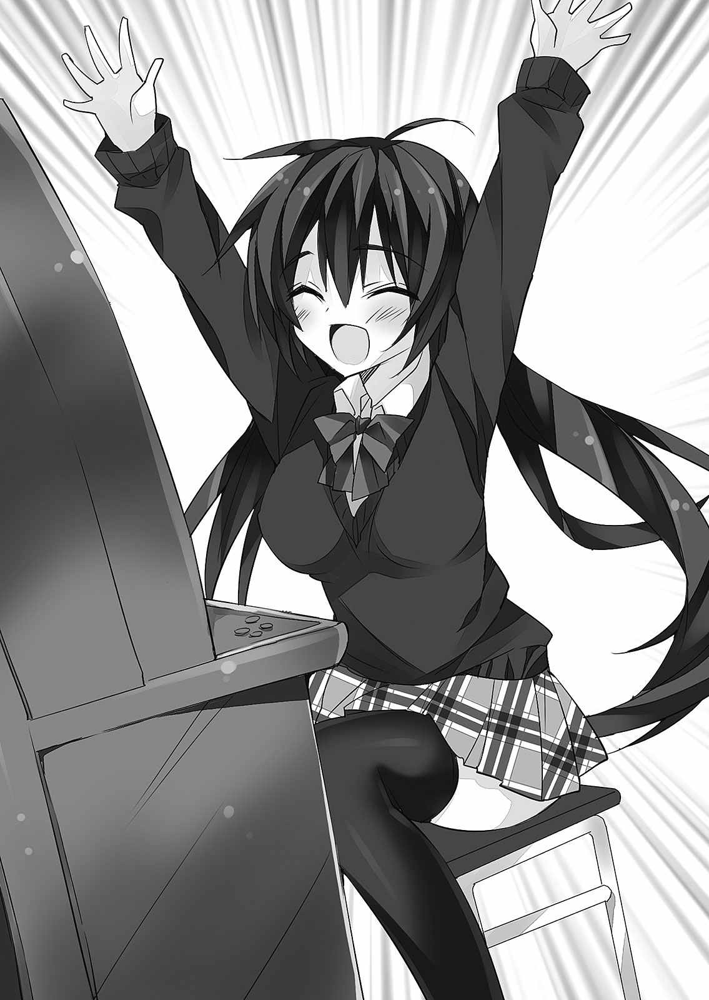
「なんであんなにコンボ決まんの!?」
「えー？ 慣れですよ慣れ～」
桜井さんは珍しく得意げな様子で笑っている。
しかし......次の瞬間、はっと我に返ったかのような顔になった。
「あ............っていうか、わたし............」
「ん？ どうしたの？」
「柏田君のこと励ますつもりでゲーセン来たのに......何容赦なくめちゃめちゃに叩きのめして......!?」
みるみる真っ青な顔になっていく桜井さん。
「え、あ、いや......」
「あーもう、わたしのバカ！ つい、夢中になっちゃって......」
彼女は本気で後悔しているらしく、頭を抱えてしまった。
「いや......桜井さん、俺は......励まそうとして、手加減してわざと負けられたりした方が、よっぽど傷つくと思う......」
自分の正直な気持ちを、彼女に伝えた。
「え、そ、そう......ですか？」
「うん、だから本気で戦ってくれて良かったよ」
「そ、そっか......確かに、わたしが柏田君の立場でも、そうかも......」
次に桜井さんとゲーセンに来るときまでに、修業して腕を上げておくことを心に誓った。
「あ、『マジスク』の台空いてる！ 柏田君、一緒にやりません？ わたし最近カード作って始めたんです。確か、柏田君もやってるって前言ってましたよね？」
「あ、うん。やってるよ。一緒にやろうか」
続いて俺たちは、クイズゲームである『クイズ・マジックスクール』......通称『マジスク』を二人でやることにした。
俺は今日『マジスク』のカードを忘れてしまったが、桜井さんがカードを持っているというので、彼女のカードでゲームをやり、俺は隣に座って、クイズの答えが分かったら彼女に教えるということにした。
二人で台の前まで来て、『マジスク』の台の前の座席に座る。......二人用の座席とは言え結構狭く、桜井さんとの距離が近くて、心拍数が上がってしまう。
「あ、は、始まりましたよ......」
桜井さんがカードと百円玉を投入すると、ゲームが始まった。心なしか、桜井さんも少し緊張しているようだ。それは果たして、ゲームに対して緊張しているのか、この距離感に対しての緊張なのか......。
ゲームが始まり、桜井さんが全国対戦モードを選択した。
『マジスク』の全国対戦モードは、まず最初に少しクイズの練習である『予習』があって、その後に本番の対戦が始まる仕組みになっている。対戦は、全国のゲーセンで現在『マジスク』をやっている一般ユーザーとクイズで戦い、正解すればするほど勝って先に進むことができるが、答えを何度も間違えると負けてしまい、途中で敗退してしまう。
やがて、一回戦が始まった。
画面に問題が表示される。分かったら早押しで、問題の下に表示された四つの選択肢の中から、答えを選んで画面をタッチする。
「あっ、これ！」
問題文がアニメについての問題だったので、俺はすぐに答えが分かり、正解の選択肢を指でタッチしようとした。
「......っ！」
すると、俺と同じ選択肢をタッチしようとした桜井さんの手に、俺の手がぶつかってしまった。
「ごっ、ごめん......」
「いえ、こ、こちらこそ、すみません......」
桜井さんの手に触れた瞬間、反射的に、文化祭のとき彼女と二回も手を繫いでしまったことを思い出してしまう。特に......お化け屋敷の中はめちゃくちゃドキドキしたなあ。暗闇の中、二人で手を繫いで......。
「............あっ！」
俺が一瞬ぼーっとしてる間に、クイズの解答時間が終了してしまった。
「えっ!?」
桜井さんもそれに気付いて、ショックを受けている。俺がぼーっとしている間、何やら彼女もクイズに答えるのを忘れて一瞬ぼーっとしていたようだ。俺と同じように、考え事でもしていたのだろうか？
「あ～っ......」
無解答のため自動的に不正解になってしまい、俺たちは同時に落胆の声を上げた。
その後は、互いに分からないクイズばかりが相次ぎ、不正解を連発して、あっという間に敗退してしまった。
「うーん......わたし、『マンガ・アニメ』のジャンルのクイズ以外不得意なんですよね......」
「あ、俺も俺も」
「あははっ、得意ジャンル被ってたらそりゃあダメダメですよね～」
桜井さんが無邪気に笑った。その笑顔に、不覚にもドキッとしてしまう。
やがて、時間も遅くなってきたので、俺たちは帰宅することにした。
「今日、柏田君を励ますつもりだったのに......完全にわたしの方が楽しんじゃってました......」
駅への道のりを歩きながら、桜井さんが落ち込んだ様子で言った。
「え!? いや、そんなことないって！ 俺も楽しくて、自分が落ち込んでることなんて忘れてたよ！」
それは俺の正直な気持ちだった。女の子でこんなにゲーマーな子なんて、桜井さん以外周りにいないし、とても楽しかった。今までにも思ったことがあるが、桜井さんみたいな趣味の合う女の子と付き合ったら、楽しいんだろうなあ......。
......って、俺、長谷川に振られたばっかだっていうのに、何考えてんだろ......。
「ほんとですか......？」
桜井さんは不安げな表情で俺に尋ねる。
「うん。......じゃあ、今日はありがとね」
俺が乗る電車の駅に着いたので、俺は彼女に礼を言って彼女と別れようとした。
「............あっ......あの......っ」
突然、引き止められる。
「ん？」
「柏田君............今月の十六日って、空いてませんか......？」
「え......？」
今月の十六日......？
十一月の十六日は、俺の誕生日だ。
平日で、例年通り特に予定はなく、今年もまた寂しい誕生日を過ごすことになるんだろうなと思っていたのだが......。
「あ......空いてるけど......」
「ほんとですか!? よ、良かったら......その日一日......わ、わたしにお時間くれませんか......!?」
「えっ!?」
桜井さんは、俺の誕生日を知っていて誘ってくれてるのか......？ それとも、単なる偶然......？
「あ、うん......勿論、いいけど......」
当然断る理由もないので、承諾した。
「......えっ!? い、いいんですか......!? ありがとうございます！」
桜井さんは俺の返事に嬉しそうに礼を言った。
「今度こそ......柏田君を楽しませられるように頑張ります！ あっ、どこか行きたいところとかありますか!?」
「えっ!? い、行きたいところ......!?」
遊びに誘ってくれたこと、さらに俺の誕生日の日にちを指定されたこととに動揺を隠せない俺は、返答に詰まってしまう。
「あ、急に言われても困りますよね......じゃあ何か、思いついたらメールして下さい！ もし何もなければ、わたしが考えておきますね！」
「え!? あ、うん......」
桜井さんの勢いに飲まれて、そう返事するのが精一杯だった。
「じゃあ......また連絡しますね！」
「う、うん......」
桜井さんは笑顔で俺に手を振ると、背を向けて自分が乗るべき地下鉄の駅へと向かっていった。
彼女は......俺が失恋して落ち込んでいると知って、励まそうとしてくれているのだろうが......どうしてわざわざ、俺の誕生日の日を指定してきたんだ？ 桜井さんに俺の誕生日を教えた覚えはないし、やはりただの偶然なのだろうか......？
それにしても、わざわざ俺を励ますために誘ってくれるなんて......なんていい子なんだろう。
我ながら単純な人間だと思うが......今まで長谷川に振られて落ち込みまくってたっていうのに、今から十六日が楽しみで仕方がなくなっている自分を、自覚してしまった。
４
「っしゃっせー」
今日は日曜日。
俺は午前中からカラオケ店のバイトに入っていた。
一人フロントに立ち、だるさに耐えながら接客をする。
「えーっマジでー!?」
「まじですよー！ あや最近ー、ダイエットのために隣の駅から一駅歩いてバイト来てるんですけどー、隣の駅付近で見ちゃってー。なんか真面目系だけど結構可愛いっぽい女子と制服で歩いてたんですよー」
後ろから、女子バイト二人の話し声がどんどん近づいてくる。うげっ、今日この二人とシフト一緒なんだったっけ......。既に鬱だ......。
「でも彼女いるように見えなくない？」
「......で、でも、なんかそんときはー、バイトんときより髪とかちゃんと立ててて、結構いい感じだったっていうかー......。学校の制服だといつもより二割増しに見えたしー、元々素材は悪くないと思うんですよねー」
「えー何あやちゃん、もしかして結構気になってたの!?」
「え、ちょっ、いやいやいや！ やめてくださいよー！」
少し振り向くと、約五分の遅刻で、バイト先のアイドル（笑）渡辺あやと、女子大生バイト（高橋さんという）がやってきていた。今日は社員がいないのをいいことに、堂々とくっちゃべりながら遅刻かよ。
「！」
「......？ おはようございます......」
フロントに立つ俺を見て、二人は突然会話をやめてギョッとしている。俺と同じシフトなのがそんなに嫌なのだろうか？ 顔を見るなりその反応って......凹むなあ......。
「お、おはよーございまーす......」
二人はそれぞれ白々しく挨拶を返してくる。それから、こそこそと内緒話を始めた。あーくそ、なんなんだよ、感じ悪いなあ......。
当然だが、俺は未だにこの二人と打ち解けられてなどいない。
この間、リア充っぽい奴らとも普通に仲良くなれるよう頑張ろう、って決意したばかりだが......やっぱどうにも『イマドキの女子』（特にビッチ）って奴が、俺は一番苦手なんだよな......。
「......あ、て、てゆーかあやちゃん！ 中学んとき付き合ってた元彼とより戻したいとか言ってたのどうしたの？ メールしたんでしょ？ 返信きた？」
気を取り直して......という感じで、女子大生高橋さんは俺のことを無視してアイドル渡辺と会話を続ける。はあ......。まあ......いいけどさ......。
「えっ!? ああ、あー、あれはー......なんかー、向こう携帯落としたんだか壊したんだかなんだか知らないんですけどー、メール送ったの、エラーで返って来ちゃって......」
「えっ？ それって、メアド変えられて連絡来てないだけじゃない？」
盗み聞きしているわけではなく、距離が近いため嫌でも会話が聞こえてくるのだが......今の女子大生高橋さんのセリフに、俺も完全に同意だ。エラーでメール返ってくるって......アイドル渡辺よ、完全に元彼から嫌われてんだろ、それ。
「えーっ!? やっぱ......そう思います......？ あーもー、まじありえないムカつく！ このあやのこと避けるなんて......！」
こんなにモテそうなアイドル渡辺でも、元彼に嫌われたりとか恋愛がうまくいかないこともあるもんなんだな......。勝手に、少しだけ親近感を抱いてしまう。
「ってか、別にあや、より戻そうとなんかしてないですから！ 元々、暇つぶしにちょっとからかってやろうかなくらいに思ってメールしただけだし！」
......前言撤回。やっぱり、アイドル渡辺はどこまでも性悪だった。
「やっぱあやはー、山本さん一筋ですから！」
「......！」
アイドル渡辺の口から不意に山本さんの名前が出て......俺は思わずびくっとする。
山本さん、か......今日は昼から山本さんもシフト入ってたな。
山本さんに会うのは、文化祭以来だった。最近俺はほとんど土日しかバイトに入っていないし、山本さんも就活でバイトに入る日数が減っているので、なかなか被らないのだ。
何年も仲違いしていた兄妹、山本さんと長谷川は、文化祭の日に無事仲直りできたのだが......その後、うまくやっているのだろうか。二人のその後が気になっていたが、俺はもう、長谷川に聞くことはできなくなってしまった......。
最近の俺はと言えば......もう学校が憂鬱で仕方がなかった。
憂鬱の原因は、当然、振られた長谷川と毎日顔を合わせなければならないことだ。俺があからさまに避け続けているせいか、彼女が俺に声をかけてくることはなくなったが......気のせいかもしれないが、告白する前よりも、長谷川と目が合う回数が増えたのだ。
相変わらず俺は長谷川を目で追っていた。彼女はクラスに仲の良い友人などいないままなので、一人で学級委員の仕事を頑張っている。正直、見ていられない。つい手伝いたくなってしまうが......勿論、もうそんなことはできない。
振られた途端に仕事を手伝わなくなった俺の様子を見て......ますます長谷川は、『柏田君が仕事を手伝ってくれていたのは単に私に好かれたかったからなんだ』と解釈し、さぞかし俺に失望していることだろう。
俺にだって一応、『長谷川に好かれたい』という下心以外にも、『好きな子が困っていたら助けたい』という純粋な気持ちもあった。今だって、大変そうな長谷川を見ていると、下心抜きで手伝いたくなることだってある。でも......もうそんなことできない。振られたくせにしつこい奴だなんて思われたくないし、俺自身だってまだ、長谷川と接するのは辛い。
長谷川が学級委員の仕事で大変そうにしている姿をただ眺めることしかできず、俺はなんて無力なんだと自己嫌悪に陥ってくる。そして一層、憂鬱になる。
憂鬱の原因はもう一つある。
......恋ヶ崎だ。
恋ヶ崎は、あれから......俺のことを避け始めたのだ。
理由は分からない。あいつが何を考えているのか、最早最近は全く想像することもできない。
あからさまに避けているわけではなく、会えば挨拶程度はする。俺が声をかければ、一応そっけなくだが対応する。だが......前みたいにあいつの方から声をかけてくることはなくなった。以前までは、なんだかんだいって鈴木関連のことやオタク関連のことでちょくちょく話しかけてきたのに、ここ数日の間、全く話しかけてこない。俺が何か話しかけても......適当に返事はするが、すぐに話を切り上げて俺の前から去っていく。
正直、これは辛い。長谷川に失恋した後、あいつに救われたところも大いにあったっていうのに......その後にこの仕打ちだ。一体、俺が何をしたというんだ？ 思い当たることと言えば、軽音部メンバーとの鍋パーティーの帰り、あいつの態度がおかしくて、その後から避けられ始めたような気がするが......。あの態度の意味だって全く分からないし、それ以降避けられている理由もさっぱり分からない。
鍋パーティーの翌日も、放課後行きたいところがあると誘ってきたくせに、結局あいつは来なかったし......。あいつは一体何がしたいんだ？ 俺に対して何か怒っているのか？
落ち込み続けている今の俺にとって、唯一の救いは......俺の誕生日の、桜井さんとの約束だけだった。
彼女だけは、俺を励ましてくれると言う。俺なんかを、楽しませるために頑張る、なんて言ってくれる。
桜井さんとの約束の日まで、あと十日もあるのか......。ああ、俺の誕生日よ、早く来てくれ......。誕生日がこんなに待ち遠しいのなんて、一体いつぶりだろうか。
「あ、山本さぁん、おはようございまぁ～す」
アイドル渡辺のいつもより一オクターブ高い猫なで声を聞いて、俺ははっとする。
振り返ると......そこには、長谷川の兄である、山本さんが立っていた。
「......柏田君、お疲れ」
「お、おはようございます」
長いことぼーっとしながら仕事してたから気づかなかったが、いつの間にかもう昼になっていたのか......。
「今日は朝から？」
「あ、はい」
アイドル渡辺の視線が痛い。自分が山本さんと話したかっただろうに、山本さんは真っ先に俺に声をかけてしまったからな......。
「いや～、柏田君には本当にお世話になったね......」
山本さんは俺の顔を見て、穏やかな笑顔でしみじみと言った。
彼が言っているのは、俺が、長い間仲違いしてしまっていた彼と長谷川を仲直りさせるのに協力した件だろう。
「いえ、俺はそんな、何も......」
実際、俺は二人にきちんと話してもらう場を設けただけで、その後は二人が自分の気持ちを真摯に正直に互いに伝え合ったから、関係を修復することができたのだ。
「そ、その後......どうですか？ 翠さんとは......」
もう長谷川に聞くことはできなくなってしまったので、山本さんに尋ねてみる。
「うん......あれから翠とは会ってはないけど、ちょくちょくメールで連絡は取ってるよ。これから少しずつ、溝を埋めていけたらいいなって思ってる。今度、母親を含めた三人で食事に行こうって話が出てるよ」
「そ、そう......なんですか......」
山本さんの口からその話を聞いて......二人の仲がうまくいっていることに安心した一方で、俺の知らないところでそんな風に話は進んでいたのかと、なぜか......少しショックだった。長谷川を避け続けてるのは俺なのに......。
「あ、この話知らなかったんだ？ てっきり、翠に聞いてるかと思ったよ。俺、勝手に柏田君と翠は相当仲がいいんだろうなって思ってたから」
「え......」
山本さんの話を聞いて、俺は......気付いた。
もしかして、長谷川が何度か俺を見ていたのは......その話をしたかったからじゃないのか？ 長谷川のことだから、俺に恩を感じていて......報告してくれようとしたんじゃないのか......？ それなのに俺は、彼女を一方的に避け続けたりして......。
「さ、最近......あんまり、話せてないんですよね......」
さすがに、兄である山本さんに、長谷川に告白して振られたなどと言うことはできず......適当に誤魔化すことしかできなかった。長谷川も......俺に告白されたということは、山本さんに話してないんだな。そりゃあ、言えないよな......。
「......？ そうなんだ......。まあ、これからも仲良くしてやってよ」
「あ、は、はい......」
山本さんの言葉に返事をしながら、内心強い罪悪感に苛まれた。
しかしだからと言って、学校で長谷川に俺から声をかけることなどできず、それから再び憂鬱な日々が過ぎていき......。
十一月十六日。
ついに、桜井さんとの約束の日......俺の十六歳の誕生日を迎えた。
その日は朝から、放課後の桜井さんとの約束に備えて、いつもより念入りに髪型をセットする。
ああ、この日が来るのをどんなに待ちわびたことか......！
「直輝......」
俺が洗面所で髪型を整えていると、後ろからあかりに声をかけられた。
「ん？」
「あ、あのさ............きょ、きょ、きょきょ......」
「あ？ なんなんだよ？」
はっきりと喋らないあかりに少し苛ついて聞き返すと、膝裏を軽く蹴られた。
「いてっ！ お前、何すん......」
「............今日学校終わった後......暇？」
「......え？ 今日？ 放課後約束あるけど......」
俺がその言葉を発した瞬間、今度はケツを蹴飛ばされる。さっきの膝裏よりも強い力で。
「いって！ おま、さっきから何なんだよ!? このＤＶ妹がぁ！」
あかりは俺の言葉に何も応えず、不機嫌そうにソファーにドスンと座って朝食を食べ始める。我が妹は一体、今どのタイミングで激おこになったってんだ？
「今日......なんかあったのか？」
なんで今日の予定を聞かれたのか気になり、あかりに尋ねた。
「え、別に!? どうせ今年の誕生日も一人寂しく過ごすんだろうなって思って、もしそうだったらバカにしようと思ってただけ！」
あかりは俺の顔を見もせずに、憤慨した様子で憎まれ口を叩いた。
「え......あ、そうかよ......残念だったなバカにできなくて......」
「あ、そっか、お兄ちゃん今日誕生日だっけ!? おめでとー！」
あかりの隣で朝食を食べるオカンが、なげやりにそんなことを言ってきた。完全に自分の息子の誕生日を忘れていたようだ。ま、毎年のことだから慣れてるけどな......。
......って、そういえば、あかりは俺の誕生日、覚えてたのか......。珍しいこともあるもんだな......。
その日も......恋ヶ崎とは一度も口を利かなかった。
最近思うのだが......もしかしてあいつは、鈴木との仲がうまくいってるから、俺と必要以上に馴れ合うのをやめたのではないだろうか。
鈴木との仲がうまくいっていれば、俺の協力なんか必要ないし、逆に俺と話していたら、鈴木に変な誤解をさせてしまうかもしれない。
だからあいつは、俺のことを避けているのではないだろうか......そんな風に考えると、益々気分が落ち込んでくる。
ああ、せっかく誕生日だってのに......。今日は桜井さんと遊びに行くんだから、もうあいつのことをぐだぐだ考えるのはやめよう。
帰りのホームルームが終わると、俺は桜井さんのクラスであるＤ組へと向かった。
少し廊下で待っていると、すぐにＤ組もホームルームが終わり教室の中から生徒たちが出てくる。
「あっ柏田君!?」
やがてＤ組の教室から出てきた桜井さんが、俺の姿を見て少し驚いている。
「わ、わざわざ......うちのクラスまで来てくれたんですか!? ありがとうございます！」
「いや、そんな......」
「あのっ、今日なんですけど......アキバに遊びに行くんでも大丈夫ですか？ 一応、プラン考えてきて......」
廊下を歩きながら、桜井さんに質問される。
「え？ 勿論！ っていうか、わざわざ考えてきてくれたの？」
そういえば、どこか行きたいところがあったら連絡してくれって言われていたことを今更思い出す。すっかり忘れていたので、何も連絡しなかった。俺が何もリクエストしなかったから、桜井さんがわざわざ考えてきてくれたのか......。申し訳ない気持ちとありがたい気持ちが同時にこみ上げてくる。
「柏田君に喜んでもらえるか自信ないんですけど......あの、柏田君、フィギュアとか好きですか？」
フィギュア、というオタク的単語を出されて、まだ学校の中なので、俺は慌てて周囲を見回す。廊下を歩いている生徒はいるが、知り合いらしき人はいなかったのでほっとする。
......そこまで考えて、俺はふと気付いた。
つい、いつもの癖で周りを気にしてしまったが......もしかして俺もう、オタクを隠す必要なくなった、のか......？ だって、長谷川にはオタクをカミングアウトしたし......というか、それ以前に、長谷川のことはもう諦めたのだから......。
いや、しかし、クラスの女子にオタクキモいと言われるのはどっちにしろ嫌だ。やっぱり、これからも隠れオタクを通す方向で行くか......。
「柏田君、どうかしましたか？」
「あ、ごめん......なんでもないよ。うん、持ってないけど見るのは好きだよ」
フィギュアは好きか、と問われていたことを思い出し、質問に答えた。
「良かった～！ 実は、アキバの『コトブキヤ』っていうフィギュアのお店で今『まどマキ』のフェアやってて、入場無料でいろいろ見られるみたいなんですよ。良かったら行きませんか？」
「へー、そんなのやってるんだ。うん、行ってみたいな」
さりげなく周囲を気にしつつ、返事をした。
フィギュアか......欲しいと思ったことは何度かあるが、高額なのと置く場所に困るという理由で今まで買うまでに至ったことはないんだよなあ。
無料で見られるなら是非行ってみたい。見てると欲しくなりそうなのが不安でもあるが......。
学校を出てからは、もう周りを気にするのもやめ、桜井さんとオタクトークを楽しみながらアキバへと向かった。
今期アニメの話、最近ハマっている作品について......桜井さんとは、話せば話すほど盛り上がった。
秋葉原に到着すると、桜井さんの案内でフィギュア屋である『コトブキヤ』まで向かう。
電気街口を出て、中央通りを渡り、ゲームセンターの手前の道を左に曲がると、正面に緑色の建物が見えた。
「あ、あれが『コトブキヤ』です！」
『コトブキヤ』に到着した俺たちは、まず俺たちの好きなアニメ『魔法少女まどっこ☆マキ』......通称『まどマキ』のフェアがやっているという５Ｆのイベントスペースを見て、その後一階ずつ降りながら各階を見て回ろう、ということになった。
奥のエレベーターで一気に、最上階である５Ｆまで上がる。
「わーすご～いっ！」
５Ｆのイベントスペースでは、奥のテレビで『まどマキ』の映像が放映されており、壁際にはアニメのセル画が展示されていた。グッズ販売コーナーではフィギュアは勿論、Ｔシャツやぬいぐるみ、ラバーストラップ、チェスピース、タンブラーなどのたくさんのグッズが販売されている。平日だということもあってか、それほど人は多くなかった。
俺たちはフロア内を一周して、『まどマキ』の話をしながらセル画の展示や販売を一通り見た。
「そういえば......マミ子さんコスってもうしたの？」
先月、恋ヶ崎がサークル参加したサンクリにて、桜井さんが「今度『まどマキ』のマミ子さんのコスをする」と言っていたのを思い出したので、尋ねてみた。
「あ、まだ準備中なんです。冬コミでやろうかな～って話も出てるんですけど......。あ、やることになったら......カメラマンさんとして......来てくれますか？」
「え!? 勿論勿論！」
思わず鼻息が荒くなってしまう。うおお、まさか本当に、桜井さんのマミ子さんコスの写真が撮れるなんて......！ てっきり社交辞令で言ってくれただけかと思ってたから、めちゃくちゃ嬉しいぞ！
「前に、『ちゃんとカメラの勉強していい写真撮れるよう頑張る』って約束したし、今度は頑張るよ！」
夏休み中、桜井さんとホテルでコスプレ撮影したときに約束したのを思い出す。
今度こそ、いい写真が撮れるよう頑張らねえと！ もういっそ、一眼レフとか買っちまおうかな。最近バイト代あんまり使ってないから割と金も貯まってきたし......。
「柏田君、あの約束覚えててくれたんですね......！」
桜井さんが俺の言葉を聞いて、笑顔になった。
「じゃあ、柏田君のカメラマン......期待してますね！ あっそれに......サイキッカーズ合わせもしましょうね！ わたしも柏田君の写真撮りたいですから！」
「ああ、うん、そうだったね......」
そういえば、桜井さんが作ってくれた俺用のコスプレ衣装で、桜井さんに写真を撮ってもらう、という約束もしたんだったなあ......。コスプレする側にはあまり興味がないのだが、約束した以上はちゃんと果たさないとな......。
『まどマキ』のフェアを堪能した俺たちは、階段で一階分降りて、４Ｆのショールームへと移動する。
「うわー、すごいたくさんあるね！」
上段にショーケースがあり、中には様々なフィギュアが飾られていた。その下段に、飾られているフィギュアの箱が並んでおり、実際に販売されている。中には、『完売しました』のプレートが置かれているフィギュアもちらほらあった。
ネットではたまに見たりしているが、こんなにたくさんのフィギュアが並んでいるのを実際に見るのは初めてで、感動してしまう。
「あーこれ、ネットで見てちょっと欲しかったやつ！ 生で見るの初めてだけどすげーなあ！」
つい、欲しかったフィギュアを発見して興奮気味に騒いでしまった。声を発してから、はっと我に返る。やばい、ついつい鈴木といるときのように素でテンションが上がってしまったが......よく考えたら、そのフィギュアは巨乳キャラの少しエロい（衣装の面積が少し小さいというだけで、やばいところが見えていたりするわけではないが......）フィギュアだったのだ。女の子の前でこんなフィギュアに興奮しているところを見せてしまうなんて、なんて恥ずかしいことを......。桜井さん、ドン引きしてるんじゃ......？
「あ、そに子ですか！ 可愛いですよね～！」
「......!?」
しかし、桜井さんの様子を見て、俺は驚いて言葉を失う。
彼女も俺と同じように目を輝かせてフィギュアを見つめながら、俺の言葉に同意してきたのだ。
ああ、桜井さんってつくづく、理解がある子だよなあ......。これが恋ヶ崎だったら、絶対貶されてキモがられる......。
「......？ 柏田君、どうかしましたか？」
俺が桜井さんの反応に感動していると、彼女が不思議そうに首を傾げた。
「い、いや、なんでもないよ......」
「はわ──っ！ 『新テニ』のリョーマっ！ うわー既に完売してる～！ かわいいいいい！」
突如、桜井さんがフィギュアを見て興奮気味に声を上げた。
「最近は男キャラのフィギュアも増えてきたよね～」
俺がしみじみと声をかけると......。
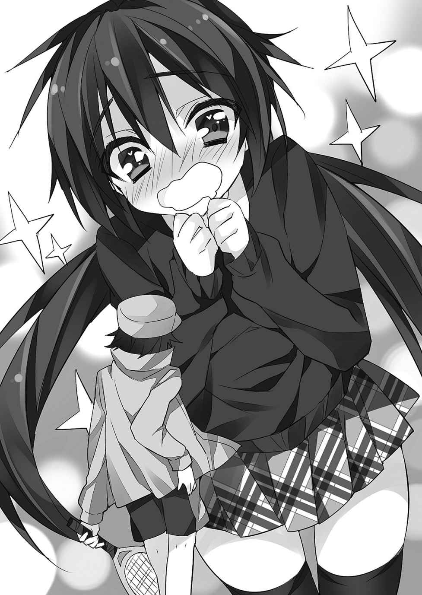
「............はっ！」
桜井さんがフィギュアの方から俺の方へと振り返り、酷く焦った顔をしている。
「す、すみません......わたし......つい興奮しちゃって、お見苦しいところを......」
彼女は恥ずかしそうに赤面して、両手で自身の顔を隠した。
「え？ いやそんな、俺は別に......」
「柏田君がいるっていうのに、また暴走しちゃいました......ううぅ～」
「............ぷっ......」
俺はつい、噴き出してしまった。
「えっ......!? か、柏田君......今笑いました!?」
「あ、ごめん......」
桜井さんの恥ずかしそうにしている様子を見ていたら......失礼ながら、つい笑いがこみ上げてしまった。なぜなら、彼女の反応が、あまりにも俺の反応にそっくりだったからだ。
つい相手の存在を忘れてフィギュアに興奮して騒いでしまい、我に返って恥ずかしくなる。
勿論俺は、桜井さんがフィギュアを見て興奮している姿を見ても、全く引いたりしなかった。桜井さんが俺に対してそういう態度を取ってくれたのと同じように。
もしかして、俺たちって結構似た者同士なんじゃ......？ なんて、内心密かに思ってしまったのだ。
「柏田君......？ どうかしたんですか......？」
「いや、ごめん、なんでもないよ......」
桜井さんの前だとつい素が出てしまい、その後も俺は美少女フィギュアに興奮しっぱなしだったが、桜井さんはそんな俺に引いている様子など全く見せなかった（気を遣ってくれたのかもしれないが......）。
その後、階段で降りていき一階ずつフロアを見て回ったが、桜井さんもまた、人気アニメの男性キャラのドリームクッションカバーを買おうか悩んだり、ＢＬゲーのワンコインフィギュアを購入したりと、俺と同じくらい......いや、俺以上に、『コトブキヤ』を満喫していた。
「はあっ！ このキャラソンすっごく欲しい！」
桜井さんが、少し前まで放映していた、女性に人気のあった水泳部アニメの主人公のキャラクターソングのＣＤを手に取る。
「ああそれ......妹がアニメ見てたから俺もたまに見てたよ。確かにその主人公の声、かっこいいよね～」
「ですよねー！ わたしこのアニメがきっかけで、今すっごいこの声優さんにハマってて！ ああ、どうしよう～！ 買っちゃおうかな～？」
悩んだ結果桜井さんは、キャラソンのＣＤを購入していた。
結局俺は、何度か悩んだ局面はあったが、何もグッズを買わずに店を出た。
「いやー楽しかったですね！」
「ほんと！ ５Ｆ以外は撮影オッケーだったから俺写メ撮りまくっちゃったよ！」
「わたしもです！」
俺たちは大満足で、『コトブキヤ』を後にした。
「柏田君......この後もまだもう少し、お時間大丈夫ですか？」
「え？ うん」
「じゃあ、もう一カ所......付き合ってもらえますか？」
「勿論いいけど......」
再び、桜井さんに案内される。一度秋葉原の駅に戻り、連絡通路を通り抜けて電気街口から昭和通り口に移動して、昭和通り口から徒歩約三分。辿り着いたのは......。
「カ、カラオケ......？」
やたらとレトロな看板のカラオケ店だった。アキバのカラオケは『カラ館』とかだったら行ったことはあるのだが、この店は初めてだ。
「はい、ここのカラオケ、アニソンがたくさん入ってるって評判なんですよ！ それに、『エヴァ』のコンセプトルームってのがあるらしくて！ 柏田君、『エヴァ』好きでしたよね？ 電気街口にも同じ系列の電気街口店があるんですけど、アニメとかゲームのコンセプトルームがあるのはこっちのお店だけで......」
俺は割とカラオケが好きだ。それに、桜井さんの今の話を聞いてこのカラオケに対する期待値も上がった。しかし......。
男女二人で個室って............い、いいのか......!?
俺は当然、女の子と二人きりでカラオケに来るのなんて初めてだ。
「そういえば柏田君とカラオケ来たことなかったな～って思って！」
無邪気に笑う桜井さんは、俺が考えているようなことなど微塵も頭にないようだ。俺のことを信頼しきってくれているのか......？ というか、男と意識されてないのか......。それにしたって、無防備すぎやしないか？
桜井さんは戸惑う俺に気付く様子もなく、カラオケ店へ入っていく。
「五時から『エヴァ』のコンセプトルームを予約していた桜井です」
「いらっしゃいませ、ご予約の桜井様ですね」
「わざわざ予約してくれたんだ......？」
「はい！ せっかく行くからにはエヴァルームがいいなって思って！」
店員に部屋番号の書かれた伝票を渡され、人気アニメ作品『新世紀エヴァンゲオリン』のコンセプトルームとやらへ向かう。扉を開けると......。
「えっ......すげーっ！」
「わー、ホームページで見たのより迫力ある～っ！」
部屋の内装を見て、俺たちは同時に騒ぎ始める。
「これ、初号機じゃん！」
壁には、立体的なエヴァンゲオリン初号機が埋め込まれていた。
「こっちにはフィギュアがありますよ！」
ショーケースの中には、『エヴァ』のフィギュアがたくさん展示されている。
俺も桜井さんも『エヴァ』のコンセプトルームに大興奮で、写メを撮りまくった。
この雰囲気であれば、個室に二人きりでも決して変な気分になったりしなくて済みそうだ......。俺の考え過ぎだったな。
やがて一通り部屋の内装を楽しんだ俺たちは、曲を入れようということになった。
「十月アニメの曲、結構もう入ってる～！」
桜井さんは俺の隣に座り、楽しそうにタッチパネルを弄る。
うん......やっぱり、二人だと隣同士に座るのが普通だよなあ......至近距離に座ったら、途端にドキドキしてきた......。
「あ、さ、桜井さん......歌いたい曲あったら、先に入れちゃっていいよ！」
「えっ、ほんとですか!? じゃあ、お先に失礼します」
桜井さんが曲を入れる。画面には、俺も見ている今期アニメのヒロインの声優が歌うオープニングのタイトルが表示された。すぐに曲が始まり、桜井さんが歌い始める。
桜井さんの歌声は、歌に合っていてとても可愛らしかった。
「..................」
「か、柏田君......どうしたんですか？」
カラオケの画面を見つめたままぼーっとしている俺に、やがて歌を歌い終えた桜井さんが声をかけた。
「あ、いや......俺カラオケなんてほとんど男友達としか行ったことなくて......男の野太い声で女性声優の可愛らしいアニソンが歌われるのしか聴いたことなかったから、女の子の可愛い声で歌われるのって、いいもんだなあって感動しちゃって......」
「えぇっ!? そ、そんな......感動だなんて、大げさな......」
桜井さんは恥ずかしそうに笑う。
「あっそうだ！ 桜井さんって確か『アイプロ』好きだったよね!?」
俺は以前桜井さんと、アニメ化もしたアイドルをプロデュースする人気ゲーム『ザ・アイドルプロデューサー』の話で盛り上がったことを思い出し、彼女に尋ねる。
「え？ はい、好きですよ！」
「アイプロの曲歌ってよ！」
今まで俺はカラオケで、中学時代のオタク男友達が『アイプロ』の曲を歌っているのしか聴いたことなかったので、女の子が歌う『アイプロ』の曲を是非とも聴いてみたいと思った。
しかし言ってから、歌って欲しい曲をリクエストするなんてずうずうしい上にキモいと思われるんじゃないか、と不安になり、自分の発言を後悔する。
「あ、わ、わたしなんかの歌でいいのなら......」
だが、桜井さんは照れながらも嬉しそうな笑みを浮かべてくれたので、内心ほっとした。
「柏田君、『アイプロ』では何の曲が好きですか？」
「え!? 俺は......そうだなあ、初期の頃の『エージェント』とか『ゴーマイウェイ』とか有名な曲も好きだし、『ヴァンパイアガール』とかも可愛くて......」
「あ、わたしもその曲好きです！ あ、柏田君......『アイプロ』の曲、結構入ってますよ！」
桜井さんがタッチパネルを持って、俺の方へ身体を近づけた。
思わず、ドキッとしてしまう。ほのかに、桜井さんからシャンプーのようないい香りが漂ってくる。こんな密室で、そんなに近づかれたら......。
「ほ、ほら......」
「............っ!?」
次の瞬間......桜井さんがタッチパネルを俺の方へと向けて、画面を見せてきた。そこには、『ザ・アイドルプロデューサー』の曲の一覧が表示されていたのだが......俺が驚いたのは、そのことではない。
俺のすぐ左隣にいる彼女は、タッチパネルの下で......タッチパネルを持っていない方の右手を、俺の左太ももの上にそっと載せてきたのである。
「ほ、ほら......たくさん、曲入ってますよ......？ どれでも、柏田君の好きな曲、歌いますよ......ど、どれが......いいですか......？」
「え、え、えっと......」
必死に返答しようとするが、もはやまともに喋ることすらできない。全神経が左太ももに集中している。桜井さんの右手は、依然俺の太ももの上に置かれたままだ。彼女は、無意識にやっているのか？
タッチパネルから桜井さんの顔に視線を移すと、目が合ってしまった。反射的に、文化祭の日......掃除用具入れの中に二人きりで隠れて、暗闇で密着しながら見つめ合ったことを思い出してしまう。
「............」
桜井さんは頰を赤く染めて、少しだけ困ったような表情で......俺のことを上目遣いで見つめている。
はっきり言って、その顔は......めちゃくちゃ可愛くて、エロかった。
少し手を伸ばせばすぐに届く距離に、彼女のかわいらしい顔が、柔らかそうな胸が、スカートから覗く白い太ももが......ある。ここが暗い密室であることも思い出して、俺の心臓の鼓動がどんどん速くなっていく。今や室内はとても静かで、彼女に身体に触れられて......どうにかなりそうなほど興奮してきた。息づかいが荒くなっていることに気づかれないよう、なるべく静かに呼吸する。
彼女は、俺から目を離すことも、俺から身体を離すこともせず......潤んだ瞳で俺を見つめたままだ。どうして、俺の目をこんなに見つめてくるんだろうか......？ そういえば、掃除用具入れの中でも、彼女は俺から視線を離さなかった。
ここで......もし、俺が変な気でも起こしたら......一体どうするつもりなんだ？ 俺さえその気になってしまえば......今この場で、彼女にキスすることも、身体に触れることも、いとも簡単だ。俺が今そんなことを考えているなんて、微塵も思っていないのだろうか？ いくらなんでも......無防備過ぎる、だろ......。
「かし......わだ、くん......？ ほら......早く、曲............」
「え、あ..................」
何か言おうとしても、もはや声にならない。ああ、もう限界が──
「お誕生日おめでとうございま──すっ！」
「!?」
そのとき、突然俺たちの部屋の扉が開き......店員が入って来た。
「えっ......えぇ!?」
店員は、驚いている俺など気にもとめず、ワンカットのケーキが載った皿を俺たちのテーブルの上へと置いた。ケーキの上には、火のついたろうそくが一本さされている。
気付くと......もう桜井さんの手は、俺の太ももから離れていた。
「さあ、火を消して下さいっ！」
混乱状態のまま、言われるがままにふーっと吹いてろうそくの火を消す。その瞬間、店員と桜井さんが拍手をする。
「それでは、どうぞごゆっくり～！」
店員は部屋から立ち去った。
「え、え......これって......」
「柏田君、......改めて、お誕生日おめでとうございますっ！」
桜井さんが拍手をしながら言う。
「えっ......!? 桜井さん、俺の誕生日......知ってたの!?」
わざわざ今日の日を指定してきたから、もしかしたらと思ってはいたが......。
「はい、知ってましたよ！」
「いつの間に......!?」
「ほら、文化祭で占いに行ったとき、柏田君紙に自分の生年月日書いてたじゃないですか」
「ああ、そういえば......！」
確かにあのとき、桜井さんが俺の手元を見てるような気はしたのだが......まさか、それを覚えていてくれたなんて......。
「え、じゃあもしかして今日って、俺の誕生日を祝うために......!?」
「はい！」
わざわざ誕生日を覚えていてくれただけでなく、店の予約までしてサプライズで誕生日を祝ってくれるなんて......。
「あ......ありがとう......」
感激のあまり、声が震えてしまう。ああ......俺は、なんて幸せ者なんだろうか......。
「是非ケーキ食べちゃって下さい！」
「あ、じゃあ......いただくよ」
ありがたく、ケーキを口にする。
「あ、そうだ、あとこれ......」
桜井さんが、今日ずっと持っていた紙袋を俺の前に差し出した。
「全然、大したものじゃないんですけど......」
「......えっ!? これって、もしかして......」
「誕生日プレゼント......です」
「マジで!?」
プレゼント、だって......!? 現時点でもすごく色々してもらってるというのに、まさかプレゼントまで用意してくれているなんて......！
「うわー......あ、あ、ありがとう......プレゼントまでくれるなんて......」
女の子から誕生日プレゼントなんてもらったのは生まれて初めてで、これは夢なんじゃないかと一瞬疑ってしまう。
「あ......開けていいかな？」
「はい、是非開けてみて下さい！」
俺は震える手で紙袋からプレゼントを取りだし、包装を開けた。
中から出てきたのは、マフラーだった。青とグレーのストライプの柄で、俺が持っていないようなお洒落なものだ。
「これから寒くなると思うので、風邪引かないように、って思って......」
「あ......ありがとう！ 俺、毎日つけるよ！ こんなお洒落なマフラー持ってないから嬉しいよ！」
「本当ですか？ 良かったぁ......。わたし、センスに自信なかったから、桃ちゃんに相談しながら選んだんです」
「そ、そうだったんだ......」
わざわざ恋ヶ崎に相談までしてくれたなんて......。
「本当に......ありがとう......」
早速、マフラーを首に巻いてみる。
桜井さんの優しさが、とても温かく、身にしみた。
今日まであった辛いことが、とても小さなことのように思えてくる。
「わあ、思った通り、すごく似合ってます！」
桜井さんが嬉しそうに笑う。その笑顔は、とても可愛く、美しく、キラキラと輝いていて──。
女神だ............。
今、俺の目の前に......女神がいる............。
「か、柏田君？ なんか涙ぐんでません!?」
「あ、ごめん......ちょっと、目にゴミが入って......」
女神......もとい、桜井さんがここまでしてくれるのは......俺が、失恋して落ち込んでいたからなのだろうか？ 友達として......落ち込んでいる俺のことが見ていられなくなって、元気づけようとしてくれているのだろうか？
だけど......普通、ただの友達に対して、ここまでしてくれるものだろうか？ も、もしかして、それ以上に、何か特別な感情が......？
......って、俺、何また早とちりしてるんだよ......!? 早とちりして長谷川に告白して見事に失敗したんじゃないか......！
それに......桜井さんには、好きな人がいると前に聞いてるんだ......。
俺にここまでしてくれるのに、他に好きな男がいるだなんて......。
......！ い、いや、待てよ......。
今まで全くそんな風に考えたことなかったが......桜井さんの好きな人が......もしかしたら............俺だって可能性だって、あるんじゃないのか......？ だって、ここまでしてくれるだなんて......。
いや、それこそ俺のひどい思い違いなのか......!? 単に友達として、祝ってくれただけなのかもしれないのに......。
ああもう駄目だ、全然分からない......！
「柏田君......どうかしたんですか？」
「あっ、いや......なんでもないよ......」
それから俺たちは、残り時間アニソンやゲームソング、ボカロ曲などを歌いまくって思う存分オタクカラオケを楽しみ、カラオケ店を後にした。
「桜井さん......今日は本当にありがとう」
別れ際......改札の前で俺は改めて桜井さんに礼を言った。
今日、サプライズで彼女に誕生日を祝ってもらえて、俺はとても幸せな時を過ごすことができた。
もし、もしも桜井さんの彼氏になれたら......毎日こんなに幸せなんだろうか？ 長谷川に振られたばかりで不謹慎だと分かっているが、ついそんな風に考えてしまうほど。
「いえ、そんな......柏田君、その......少しは、元気出ましたか？」
「え!? うん、勿論！」
「なら......良かったです」
桜井さんが柔らかく笑う。そんな彼女の笑顔を見ていたら......なんだか、たまらない気持ちになってしまう。
「あ、あのさ......桜井さん......」
俺は思わず口を開く。
「なんですか？」
「あ......その......さ、桜井さんの......」
一瞬躊躇したが、勢いに任せて続きを言う。
「桜井さんの............好きな人って、誰......？」
俺の質問に、桜井さんが目を大きく見開いた。
ああ、俺、こんなタイミングで......なんて不躾な質問をしてしまったんだ......。
だけど、どうしても気になってしまい、言葉を抑えられなくなってしまったのだ。
桜井さんは驚いた表情のまま、少しの間黙っていたが......やがて小さく笑った。
「そっか............てっきり......もうバレたかと思ってました......」
「えっ!?」
彼女のセリフに、思わず声が大きくなる。
「そ、それって......!?」
「いえ......こっちの話です。わたしの好きな人は......」
彼女は、真っ直ぐに俺を見つめた。
俺も、彼女から目をそらせなくなる。
「柏田君のご想像にお任せしますっ」
「............えっ!?」
彼女は笑顔で言い切ると、そのまま俺に背を向けて走り去る。
俺の想像に任せる......？
もうバレたかと思ってた......？
「なんだよ、それ............」
彼女の言葉の意味が理解できず、俺は混乱状態に陥る。
桜井さんの後ろ姿が見えなくなるまで、俺はその場に立ちすくんで彼女の背中を見つめていた。
５
桜井さんとアキバに遊びに行った日......家に帰ると、テーブルの上にハンバーグなどの料理が並べられていた。いつもの夕飯より豪華な気がする。
「あ、直輝遅いからもう先に食べちゃったわよ～。せっかく誕生日だから直輝の好きな物作ったっていうのに」
「え、あ......ごめん」
「あかりも手伝ってくれたのよ」
「え、そうなの？ あかりは？」
リビングにあかりの姿がなかったので、不思議に思ってオカンに尋ねる。あいつは夜、大抵リビングでゲームをして過ごしているので、いないなんて珍しい。
「部屋に籠もってるわよ。あんたの帰りが遅いからふてくされてるんじゃない？」
「はあ？ なんだよそりゃ......」
オカンがレンジでチンして料理をテーブルへと並べる。
俺が料理にがっついていると、オカンは冷蔵庫からケーキを取り出した。
「え？ ケーキまで買ったの？」
とても美味しそうなチョコレートケーキだった。まだ手が付けられていないホールケーキだ。俺はケーキの中で一番チョコレートケーキが好きなので、テンションが上がる。さっきカラオケでケーキを食べたばかりだが、チョコレートケーキなら余裕で食える。
「違うわよ、これ、あかりが作ったの」
「えっ......!? あ、あかりが......？」
あいつ、今朝あんなに激怒してたのに、どういう風の吹き回しだ？ 珍しいこともあるもんだなあ......。次のあいつの誕生日は、ちゃんと祝ってやらねえとな......。
「あかり──！ お兄ちゃん帰ってきたからケーキ食べるわよー！」
オカンが、階段から三階のあかりの部屋に向かって叫んだが、あかりの返事はない。
「も～あの子ってば、いつまでふてくされてるのかしら......仕方ない、もう食べちゃいましょ」
「あ、ああ......」
夕飯を食べたあとに食べたあかりの手作りケーキは、とてもうまかった。あいつバレンタインデーに友達に手作りチョコ作ったりしてるし、お菓子作り得意なんだよな。
「あら、すっごくおいし～！ あかりって料理上手なのねえ！」
オカンも俺の隣に座って、ケーキを食べながら感想を漏らす。
「あかり......これ自分で作っておきながら、まだ食べてないんだよな......？」
「うん。さっき夕飯のとき、先に食べちゃおうって言ったら怒られちゃった。あんたに一番最初に食べさせたかったんじゃない？」
「......なんだよ、それ......。............」
俺はケーキをカットして、新しい皿を用意してその上に載せた。ジュースをコップに注いで、お盆の上にケーキと一緒に載せる。
「こ、これ......部屋で食べるから」
オカンに告げてから、お盆を持って階段を上がる。
「へえ～......ふーん............優しいお兄ちゃんねえ～」
振り返ると、オカンはニヤニヤしながら俺を見守っていた。
「は!? な、何の話だよ!?」
そのまま俺は自分の部屋......ではなく、あかりの部屋へと行き、扉をノックした。
「おい、あかり、いるんだろ？」
返事がない。もう寝てしまったのだろうか？ いや、でもこいついつも、自分の部屋にベッドあるくせに、二階の和室でオカンと一緒に寝てるんだけどな......。
片手でお盆を持ったまま、もう片方の手であかりの部屋の扉を開ける。
「ちょっ......!? 何妹の部屋に勝手に入ってきてんだよ!? 変態直輝──っ！」
案の定、あかりは寝てなどおらず、ベッドの片隅に縮こまって携帯ゲーム機を手にゲームをしていた。俺の姿を見て喚いている。
「いや、お前だっていつも勝手に俺の部屋に入ってくるだろ......！」
「それとこれとは話が別！ だって、もしあかりが今着替え中だったりしたらどうするつもりだったわけ!?」
いつもＴシャツ一枚でうろうろしてる奴がよく言うよ......。
「ほらよ」
俺はチョコレートケーキが載った皿を、作った本人に渡してやる。
「え......」
「お前、自分で作ったくせにまだ食べてないんだろ？ ......めちゃくちゃうまかったよ、お前の手作りケーキ」
「あ......当たり前じゃん！ あかり、お菓子作り超得意なんだから！」
得意げに鼻を鳴らしてから、あかりは自分が作ったケーキを口へと運ぶ。
「............めちゃうま～っ！ あかりマジ天才かも！」
「ああ、マジですげぇうまかった。......ありがとな、あかり」
「..................」
あかりは俺の言葉に、ふいっとそっぽを向いてしまった。見ると、顔は真っ赤だ。礼を言われて照れているのか......たまには可愛いところもあんじゃねえか、こいつ。
「べ、べ、別に......あかり、自分で食べたかったから作っただけ！ た、たまたま、直輝の誕生日だったから、まあ、ちょうどいいかなって......」
「......ははは......そうかよ......」
その割には、こいつはチーズケーキが一番好きで、チョコレートケーキはあまり好きじゃないって、前に言ってた気がするんだけどな......。
「あ、あの......た、たん......たん......」
俺から顔を逸らしたまま、あかりが小声で何かを言おうとしている。
「え？」
「..................誕生日おめでと、直輝......」
「......！ あ、あぁ......」
いつもクソ生意気な妹に、面と向かってそんな言葉をかけられると、俺まで少し気恥ずかしくなってくるな......。
「な、直輝さ......最近病んでるみたいだけど......な、なんか......あったわけ......？」
「えっ......!?」
突然の妹の質問に思いっきり動揺してしまう。あかりは心配そうな表情で俺の顔を覗き込んでくる。
「あっ......べ、別に！ しっ、心配してるとかじゃなくて！ メンヘラな兄貴なんて、嫌じゃん！ ......見ててこっちまで暗い気分になってくるし......さ」
「......あかり......」
まさかあかりが、そんな風に俺のことを気にしていたなんて......。
俺......無意識のうちに、妹にまで心配かけてしまっていたのか......。
「......っ!?」
俺は気付くと、妹の頭の上にポン、と自分の手の平を載せていた。
あかりはそんな俺の行動に驚いて顔を上げ、俺の顔を見る。
「お前が心配するようなことじゃねえよ......」
精一杯、優しい笑顔を妹に見せたつもりだったが......。
「......っ、さ、触んなバカ直輝──っ！ だから、心配してるわけじゃないって言ってんじゃんっ！」
「いって!?」
次の瞬間、あかりは俺の手を思いっきり叩いて自分の頭の上から退けた。怒りのせいか、顔を一層赤く染めている。
な、なんだよ......たまには可愛いところもあるな、とか思ってたっていうのに......。
「フン......あ、あかりには、言えないことってわけ......」
あかりは不服そうにそんな言葉を漏らした。
「え......？」
その言葉が気になったのだが......。
「あかり～、そろそろお風呂入りなさーい」
「......は、は──い！」
オカンが下の階からあかりを呼ぶ声が聞こえてきて、あかりは返事をしながら俺を押しのけて、自分の部屋からドタドタと出て行く。
一瞬ぴたっと止まって俺の方を振り返ったかと思うと、
「べ──っだっ！」
思いっきり舌を出して、憎たらしくあっかんべーをしてきた。
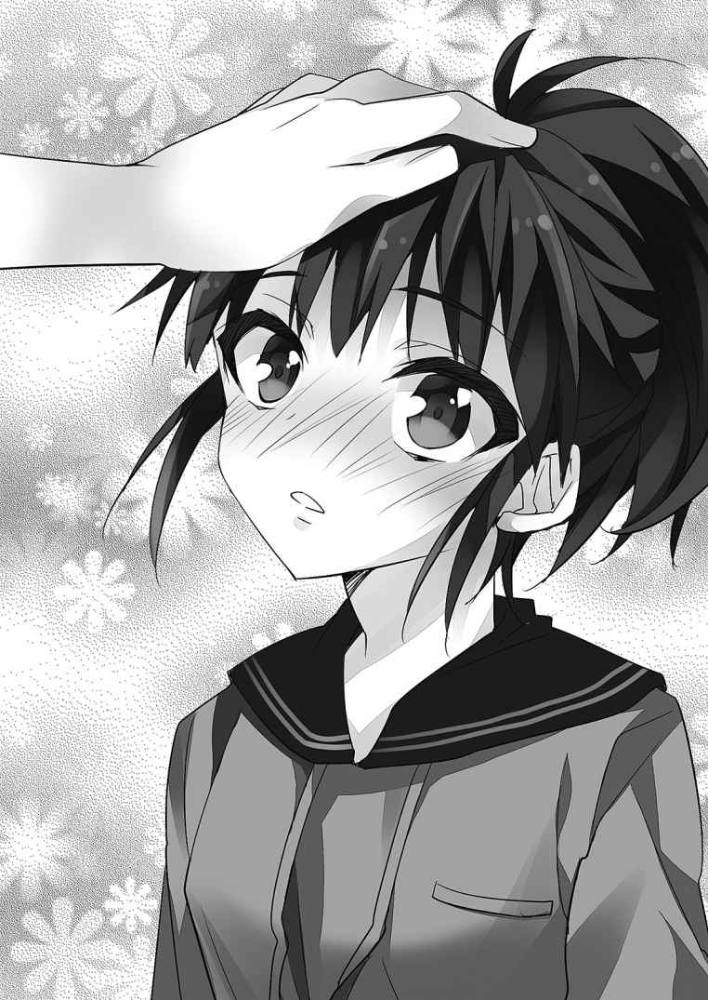
「んなっ......」
そのままあかりは、階段を駆け下りていった。
......それにしても俺、あかりにまで気にされるほど、元気がない姿を見せてしまっていたのか......。なんだかんだ言ってたけど、あいつ......俺のこと、心配してくれてるみたいだったもんな......。
せめて妹の前くらいでは、あいつに余計な心配かけないように、元気に振る舞わないとな。一応俺は、あいつの兄貴......なんだから。
＊
風呂から上がった俺は、寝る準備をしてから、自室のベッドの上で、今日の桜井さんの意味深な言葉について一人悶々と考えた。
桜井さんの好きな人って、一体誰なんだ......？ 俺の想像に任せるなんて言われても、余計にわけが分からない。
突如、携帯の着信音が鳴る。メールだ。もしかして、桜井さん？ それとも、まさか、恋ヶ崎......？
『送信者：ムラサキさん』
「ムラサキさん......？」
意外な人物の名前に、俺は驚いた。
『件名：☆HAPPY BIRTHDAY☆
本文：柏田さん、お誕生日おめでとうございます♪ ついに十六歳ですね。あと二年経ったら十八禁解禁ですから、もう少し頑張って下さいね』
「何を頑張るんだよっ!?」
つい、一人声に出して突っ込んでいた。
いや、わざわざ誕生日メールをくれたことはとても嬉しいが......なんだこの内容は!?
しかし、ムラサキさんはなんで俺の誕生日を知っていたんだ......？ あ、そういえば......ムラサキさんとも文化祭で占いに行って、紙に生年月日を書いたので、桜井さんと同じようにそれで覚えていてくれていたのだろうか？
「ん......？」
まだ下に文章があったことに気付き、携帯の画面をスクロールさせる。
『ところで、今週の土曜日お時間ありませんか？』
その文を目にした瞬間......俺の鼓動が大きく高鳴る。
え......？ これって......も、もしや......デートの誘い？ も、も、もしかして......ムラサキさんまで、俺の誕生日を祝ってくれるというのか......？
俺は光の速さで返信した。
『メールありがとうございます！ 誕生日覚えてて下さってるとは感激です！ 今週の土曜、勿論暇ですよ！ 暇じゃなくても無理矢理予定空けますけど！（笑）』
送ってから、十八禁云々の件に関してスルーしてしまったことに気付いたが、まあいいだろう。いやそれにしても......冗談とは言え、思い切った言い方をしてしまっただろうか......。後から読み返すと、なんともテンションが高くて恥ずかしいメールだ。
『あら、それは嬉しいですね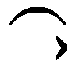 では、空けておいて下さいね待ち合わせなどの詳細は、また後ほど送ります。』
では、空けておいて下さいね待ち合わせなどの詳細は、また後ほど送ります。』
えっ......つ、つ、つまり......やっぱりデート!?
「っしゃ──ッ!!」
興奮を抑えきれず、携帯を握りしめたまま雄叫びを上げ、自分の部屋のカーペットの上をゴロゴロと転がり回る。
それから慌てて、
『了解しました！ 楽しみにしてます！』
と返信して、俺は寝るためにベッドへ入った。
目を瞑るとたくさん考え事をしてしまい、眠りにつくまでにとても時間がかかった。
＊
「なんかカッシー......今日ちょっと変じゃない？ ニヤニヤしたり、かと思ったら暗くなったり......」
その週の金曜日。
俺は鈴木の家に遊びに来ていた。俺は鈴木のノートパソコンで鈴木が最近購入したばかりのエロゲをプレイし、鈴木は鈴木で最近ハマっているらしいスマホのアイドル育成ものソーシャルゲームに精を出していた。
「え!? そ、そうか......？」
確かにここのところ、この間の桜井さんとのアキバでのことや、ムラサキさんからのお誘いメールのことを思い出すとつい気分が良くなってしまうが、一方で、長谷川のことをまだ引きずっているし、恋ヶ崎にも避けられたままなので、そのことを思い出すと暗い気分になってしまって、気分の浮き沈みが激しかったのだが......それが全部、顔に出ていたとは......。
「なんかあったの？」
鈴木に質問されて、口ごもってしまう。なんとなく、こいつに恋愛関連のことを話すのは気が引けるんだよなあ......。モテモテなのに三次元の女子に興味がないこいつには、女子絡みのことでこんなに振り回されている俺の気持ちは分からんだろうし......。
それに......恋ヶ崎と鈴木は、その後どうなっているのだろう？ 恋ヶ崎からは何も聞けなくなってしまったが、鈴木に聞けば素直に答えてくれるかもしれない。
「いや、別に......つーか、お前はどうなんだよ？ お前は......その、いい感じの女子とか、気になる女子とか......いないのか？」
「え？ あ、そうそう！ 最近俺、三次元で気になってる女の子がいてさ！」
「......えっ!?」
俺は鈴木の言葉に驚いて、エロゲを中断して鈴木の方へと振り向いた。
鈴木が、三次元で気になってる人......!? やっぱり鈴木、恋ヶ崎のことが気になりだして......!?
「小倉ゆうって声優知ってる!? 俺今まで、声優好きになっても声が好きってだけで、出演作をチェックするくらいしかしなかったんだけど、ゆうゆうは声だけじゃなくて本人もぐうかわで！ イベントとかすっげえ行きたいんだよねー！」
鈴木の言葉に、俺はがっくりと肩を落とす。
「ああ、そうかよ......」
......いや......内心は、ほっとしてるんだけどな......。
「......しっかしお前、前に来たときより部屋散らかってんなあ......漫画とか同人とか増えてるし......なんか袋もいっぱい......」
鈴木の部屋にはまだ開けられていない紙袋がいくつもあり、少し不思議に思う。
「なんだこれ？」
「あーそれ、この間買った服、まだ開けてないんだよね」
「......！ これ全部、服......!?」
普段俺は服を買うとき、ほとんど１アイテムずつなのだが......お洒落な奴というのは、まとめて買うものなんだな......。つーかこいつ、どこにそんな金持ってるんだろう？
「そうそう。この間恋ヶ崎さんと原宿行ったとき、ちょうどセールやってたからまとめて買ってさー」
「............え？」
俺は一瞬、自分の耳を疑いたくなった。
今、鈴木の口から......恋ヶ崎の名前が出たのか？
恋ヶ崎と原宿に行って、これらの服を買った、と......？
つまりそれって............デート、じゃねえか......。
「カッシーも誘いたかったんだけど、なんか当日突然だったからさー。なんか......で............らしくて............」
鈴木の声が、どんどん遠くなっていく。俺は、自分でもびっくりするほど......ショックを受けていた。俺の知らないところで、恋ヶ崎と鈴木が、二人きりで遊びに行っていたという事実に......。
それも、恋ヶ崎と鈴木の初デートが、よりによって......原宿だなんて。
原宿と聞いたら......嫌でも、思い出してしまう。恋ヶ崎と二人きりで原宿へ行ったこと。模擬デートをして、たくさんだめ出しされたこと......。
ああ......あのときはたくさんだめ出しされて、散々な目に遭ったが......今にして思えば、楽しかったよなあ......。あのときのことが、まるで遠い過去のことのように懐かしく感じる。あのときは......良かった。今じゃ、あいつと......話すことすらままならないのだから。
「......ってカッシー、聞いてる!?」
「......えっ!?」
つい色々と思い出して、鈴木の話を聞かずに一人感傷的な気分になってしまっていた。
そっか、恋ヶ崎の奴......ついに、鈴木とデートができるまでの仲になったんだな。俺は、喜んでやらなくちゃいけない立場だが......そんな話すら、今はできない状況だ。
どうして、こんなことになっちまったんだろう......。なんであいつは、俺のことを避け続けるんだろう......。
こんな風にうじうじ悩んでたって、どうしようもないよな。やっぱり、ちゃんと面と向かって、あいつに聞いてみないと、だめだよな......。
それから鈴木の家でゲームやネットをして遊び、夕飯時になったので、俺は帰る準備をする。
結局......なんとなく、鈴木に恋ヶ崎との仲について聞くことはできずに終わってしまった。原宿デートをしたと聞いて、俺は......それ以上聞くのが怖くなってしまったのだと思う。
真実を聞いて、その結果によっては......俺はショックを受け、恐らく、こいつに嫉妬してしまうだろう。こいつとは、オタクトークとか、くだらなくも楽しい話だけをしていたい。変にギスギスしてしまうのは......面倒なので避けたい。
「あ、カッシー......これ」
「えっ......!?」
鈴木が突如、俺に綺麗にラッピングされたプレゼントらしきものを渡してきた。
「十六日、誕生日だったよね？ おめでとー！」
「お前......俺の誕生日知って......？」
「だって、mixiに書いてあるじゃん。あと、メアドにも１１１６って入ってるし」
「お、おう......サンキュー」
まさか鈴木まで俺の誕生日を祝ってくれるとは予想外で、俺は素直に嬉しかった。
その場でプレゼントを開けてみる。
「......!?」
それは、アイドルのＣＤのようなものだった。
「これ、さっき話した小倉ゆうの最新シングル、初回限定盤ＤＶＤ付き！」
「ま、マジか......」
「これ聞いて、ゆうゆうにハマってよ！ そんで、一緒にイベント行こう！」
「な、なるほどな......まあ、聴いてみるよ......」
目を輝かせている鈴木を前に、とりあえずそう返事する。
「あ、あと......これ」
さらに鈴木は、さっき俺がやっていたエロゲを、パッケージごと渡してきた。
「えっ......？」
「それ、カッシーにあげるよ」
「......えぇえ!? なんでだよ、お前もまだクリアしてないって言ってただろ......？」
「カッシーがクリアしたら、俺に貸してくれたらいいから」
「ん、んな......!? なんで、そんなこと......」
「さっきもぼーっとしてて上の空だったし、やっぱ、カッシーなんか変で心配......。まあ、これやって元気出してよ」
「え......？ お、おう......マジか......。じゃあ、ありがたくもらってくぞ......？」
こいつ、俺の様子がおかしいことを気にしてくれていたのか......。
つーか正直、興味のない声優のＣＤよりエロゲの方がめちゃくちゃ嬉しいぞ！
鈴木の心遣いに感謝しつつ、俺は鈴木の家から帰宅した。
それにしても......まさか、恋ヶ崎と鈴木が既にデートする程の仲だなんて......。
結局、鈴木に恋ヶ崎とのことを聞くことができなかったので、今すぐにでも恋ヶ崎に電話して聞きたいくらいだが......学校での恋ヶ崎の俺を避けている様子を思い出すと、それもできない。
やっぱり、来週の月曜日......直接話をしよう。なんで俺を避けるのか聞いて......鈴木とのことも、ちゃんと聞こう。結果がどうであれ......今のこのはっきりしない状況よりは、きっとマシになるはずだ。
６
翌日の土曜日。
ムラサキさんから、十二時に六本木駅まで来てくれとメールをもらっていたので、俺は緊張した面持ちで六本木駅へと向かった。
これってもしかして、デート......なんだろうか？ それも、六本木なんてお洒落な街で待ち合わせだなんて......。朝から胸の動悸が収まらない。当然俺は、六本木に来るのなんて初めてだ。
駅に到着し、どこの出口へ行けばいいのか分からなかったので、ムラサキさんにメールを打つ。すると......メールを打っている最中、俺の携帯のバイブが鳴った。画面に現れた文字を見て、俺は驚愕する。
『着信：恋ヶ崎桃』
恋ヶ崎から......電話!? なんで!? 慌てて通話ボタンを押して電話を取った。
「も......もしもし......」
『もしもし柏田？ あんた今どこいんの？』
久しぶりに聞く、恋ヶ崎の声......。
『ちょっと、聞こえてる!?』
ぼーっとしてつい黙ってしまい、恋ヶ崎に再度呼びかけられた。
「え、ああ！ 今？ 六本木だけど......」
『何線の六本木駅？ 六本木駅の、何出口？』
「え!? ええっと、日比谷線で、まだ改札出てなくて......」
『３番出口出て』
恋ヶ崎に言われるがまま、改札を出てから３番出口を探して地上へと上がる。そのままそこで待っているようにと言われたので、少しの間呆然と立ち尽くす。
一体、何なんだ......？ 久しぶりに会話ができたと思ったら、全く意味が分からない。
そのとき、俺の目の前の道路に、一台の車が止まった。
車には興味がないので車種は分からないが、やたらと車高が低く平べったい、流線型の黒光りしたど派手な車だ。高級車っぽい感じがする。
次の瞬間、その高級車の後部座席の扉が開き......中から、真っ赤なドレスを着て、真っ赤なヒールを履いた、美しい女性が現れた。
「............こ、......恋ヶ......崎？」
信じられないことに......ドレスの美女は恋ヶ崎だった。メイクも服装もいつもより大人っぽく、一瞬誰だか分からなかった程だ。
突然高級車から颯爽と現れた美少女は非常に目立っていて、周りの注目を浴びていた。
その光景は......とても絵になっており、まるで、映画のワンシーンのようだった。
「........................」
俺は思わずその光景に見とれてしまい、何も言えなくなる。
まもなく恋ヶ崎は俺に気付いて、こちらに近付いて来た。
綺麗だ......。
やっぱり、お前は............信じられないくらい、綺麗だ......。
「............」
恋ヶ崎はなぜか、俺の全身を上から下まで舐めるように見てから、眉間に皺を寄せた。
「うーん......だめね、その服じゃ......」
そのセリフに、突然現実に引き戻される。
「は、はあ......!? 何がだよ......!?」
今日の俺の服装は、上はグレーのシャツに黒のカーディガンで、下はジーンズだ。
カーディガンとジーンズは最近アマゾンの通販で安く購入した物である。評価の★の数が４だったし、レビューに『値段の割に安っぽく見えないし、シンプルなデザインで使い勝手がいいのでヘビロテしてます！』とあったので、以前恋ヶ崎に『無難な服が一番いい』とアドバイスされたことを思い出し、購入した。我ながらいい買いものだったと気に入っているのだが......。
「この服が、ダサいっていうのか!?」
「え!? ああ、違うわよ......あんたにしては意外と、普通に無難でいい服だと思うけど......そうじゃなくて」
恋ヶ崎に初めて服を褒められたことに内心密かに喜びつつ、じゃあ一体何がだめなんだと疑問が湧く。
「これ」
「え？」
恋ヶ崎は、俺に向かって紙袋を突き出してきた。
「着替えて。車ん中で」
「............は？」
「その格好じゃ連れて行けないから、さっさと着替えて」
恋ヶ崎から渡された紙袋の中を見ると、中には服と靴が入っていた。
「えっ......？ 着替えるって、なんで......」
俺が混乱状態に陥っていると、高級車の運転席の扉が開き、中から人が出てきた。見ると、長身の中年男性が立っている。四十前後くらいだろうか。全体的にお洒落で格好良く、ダンディな雰囲気を醸し出している。俺を見て軽く会釈した。
「......!? ど、どうも......」
全く状況が分からないが、とりあえず目上の人っぽいので俺も挨拶を返す。
「ほら、時間ないんだからさっさと着替える」
「!? ちょっ、おいっ......」
恋ヶ崎が俺の背中を押して、車の後部座席へと無理矢理押し込め、扉を閉めた。
「な、なんなんだよ......一体......」
とりあえず、紙袋の中から服を出す。そこには白いシャツと黒いジャケット、黒いパンツ、それから革靴が入っていた。なんとなく......フォーマルな雰囲気の服だと思った。
全くわけが分からないが、仕方なく、恋ヶ崎に言われた通り着替えることにする。
「おい......き、着替えたぞ......」
着替え終え、車の扉を開けて恋ヶ崎に告げる。
「......ふーん......わ、悪くないんじゃない？」
恋ヶ崎は俺の姿を見るとそんなコメントをして、自身も車へと乗り込んだ。
「......え？」
先ほどのダンディな男性も、運転席へと乗り込んで扉を閉める。
「いいよ、出して」
恋ヶ崎が車の扉を閉めてから、ダンディに告げた。その言葉を合図に、車が走り出す。
「えっ......!? な......!? ちょ、恋ヶ崎......これからどこに......!?」
「ごちゃごちゃうっさいなあ。黙って乗ってれば分かるってば」
「んなっ......!?」
誰なんだよこのダンディは!? つーか、どこへ向かってるんだよ!? そもそも、なんで恋ヶ崎がここに!? 恋ヶ崎の格好は一体!? なぜ俺まで着替えさせられたんだ!? この服はどうしたんだ!? 聞きたいことは山ほどあったが、その場の空気に飲まれてしまい、車が目的地に辿り着くまで俺は何も言葉を発することができなかった。
「............」
改めて、隣に座る恋ヶ崎の姿を見る。いつもより念入りに巻かれた髪。鋭く輝くピアス。白い胸元に光るシルバーのネックレス。真っ赤な口紅。少し胸元が見えるチューブトップのドレスで、肩や鎖骨を露出している。髪をかき上げた瞬間、いつもとは違う香水の香りがほのかに漂ってきて、自分でもおかしいくらいにドキドキしてしまう。
......まさかこいつに、大人の色気を感じてしまう日が来るとは......。
俺が見ていることに気づいた恋ヶ崎に横目で睨まれたので、慌てて俺は目をそらした。
三分程走ったところで、車が止まった。
「じゃあ、ありがとうパパ」
パパ!?
「帰りも迎えに来ようか？」
「だから、帰りは何時になるか分かんないからいいって、何回も言ってるじゃん」
「あんまり遅くなるなよ？」
俺たちが降りると、車は発車した。
「おい、今のって、まさかお前の......」
「だから、パパだってば」
恋ヶ崎はしれっと答えた。俺の理解力ではまるで追いつかない。
「つーか、一体これからどこに......」
「この店、入って」
恋ヶ崎が目の前の、ぱっと見お洒落そうな雰囲気のレストランを指差し、俺に告げた。
「えっ!? な、なんなんだよここ!? つーか俺は今日、ムラサキさんと約束が......」
「ごちゃごちゃ言ってないで、いいから入る！」
恋ヶ崎に背中を押され、俺は仕方なくレストランの扉を開けて、中へと入った。
次の瞬間......。
「お誕生日、おめでとうございま──すっ！」
パン、パンとクラッカーが鳴る音が聞こえ、店の中には......桜井さんとムラサキさんがいた。
「えっ......え......!?」
俺は未だに状況が飲み込めず、店内をキョロキョロと見渡す。
何やら高級そうかつお洒落な内装のレストランだが、俺たちの他に客はいない。
店内には丸テーブルがいくつかあるが、椅子はなく、店の隅にソファーが少し並んでいる程度だ。こういうの、立食パーティー形式......っていうんだろうか？
桜井さん、ムラサキさんの二人も、それぞれドレスアップしていた。もしかして、俺が着替えさせられたのも、この高級そうな店に入るため......なんだろうか？ 高級そうな店にはドレスコードがある、とかって話聞いたことがあるし......。
「柏田君、びっくりしました？」
純白のレースのドレスに身を包んだ桜井さんが、嬉しそうに俺に尋ねてきた。
「ふふっ、驚いて何も言えなくなってますね？」
薄紫色の、胸元が開いた少しセクシーなドレスを身にまとったムラサキさんが、いたずらっぽく笑う。
「こ、これは......一体............」
「あんた、まだ分かんないの？ あんたの誕生日パーティーだってば」
後ろにいる恋ヶ崎に言われ、俺はやっと事態を把握した。
誕生日パーティー、だって......？
俺なんかのために、わざわざこんな高級そうな店にみんな集まってくれて、ドレスアップまでしてくれたっていうのか......？ ただでさえ、先日桜井さんに祝ってもらって、感激したばかりだっていうのに......。
「マジで......？ お、俺のために......わざわざ......」
今年の誕生日は......なんて恵まれてるんだろうか。
「さ、お料理が冷めないうちに頂きましょう！」
ムラサキさんのセリフに、店の奥に目をやると、料理がずらりとバイキング形式で並んでいた。サラダ、ローストビーフ、ピザ、ドリア、パスタ......どれもとても美味しそうだ。俺たちは並んで料理を取りに行く。
「にしても......なんで他に客がいないんだ......？ も、もしや......貸し切り......!?」
こんなに高級そうな店を貸し切りにしたら......一体いくらかかるっていうんだ!? 料理だって金かかってそうだし......その金は、一体誰が......!? 俺ごときの誕生日に、一体どれほどの金が......!? 想像して、思わず額から冷や汗が流れてくる。
「そんな青い顔しなくても、ここ、パパの友達がやってる店だから、パパが頼んでくれて今日貸し切りにしてもらったから大丈夫よ」
恋ヶ崎がしれっと言うが......今の話のどこが大丈夫なのか全く分からないぞ!?
改めて、恋ヶ崎の家って金持ちなんだな、と実感する。そんなことなら、さっき恋ヶ崎の親父さんに会ったとき礼を言っとくんだった。俺、とんだ礼儀知らずじゃねえか......。
それにしても、恋ヶ崎......ここのところ俺のことを避けているような態度だったってのに、なんで......俺のために、親父さんに頼んでここまでしてくれたんだ......？ こいつの考えていることがさっぱり分からない。
「ほら柏田さん、早く食べないとせっかくのお料理が冷めちゃいますよ？」
「え!? あ、そうですね......」
ムラサキさんに声をかけられて、俺は慌てて今取ったばかりの料理を口に運ぶ。
「う......うまい............」
料理がめちゃくちゃうまくて、俺は感動した。
ああ、俺はなんて幸せものなんだ......。涙が溢れそうだった。
ある程度料理を堪能したところで。
「それではそろそろ、メインイベントに移りまーす！」
桜井さんが、その場にいる全員に向かって声をかけた。
メインイベント......？
「えーっと、じゃあまず......ムラサキさんからお願いしますっ」
「はい、分かりました♪」
桜井さんに指名され、ムラサキさんが紙袋から......プレゼント包装されたものを取り出し、俺の前へと差し出した。
「柏田さん、お誕生日おめでとうございます♪」
「えっ......えぇ......!? あ、ありがとう......ございます......」
これって、誕生日プレゼント......だよな!? そんなものまで用意してくれただなんて......！ 俺は内心感激する。
「じゃあ......開けさせてもらいます......」
Ｂ５サイズくらいの平べったい何かが包装されている。本か何かだろうか？ なるべく丁寧に包装をといていくと......。
「............なんっ!?」
俺はプレゼントの中身に驚いて、変な声を上げてしまった。
それは、同人誌と思わしきものなのだが......表紙の真ん中には、黒髪に制服を着た少年......（なぜか気持ち俺に似ている......俺よりもかっこいいが）が描かれていて、周りには三人ほど、それぞれ容姿の違う女の子が描かれていた。
なんだろう......この女の子たちの外見も、見覚えが......。いや、気のせいか......？
その表紙はムラサキさんの絵柄で描かれており、彼女が描いた同人誌なのだろうと予想できた。
「是非、中も見てみて下さい♪」
「え、あ、はい......」
戸惑いながらも、中身を開く。
中には、表紙と同じくムラサキさんの絵柄で、漫画が描かれていた。
一コマ目で表紙の真ん中にいた、気持ち俺に似ている少年が登場し、その横にモノローグがついている。
『俺は柏田直輝。今日で十六歳の誕生日を迎える、健全な男子高校生だ』
「............っ!?」
そこまで読んで、俺は同人誌からムラサキさんに視線を移した。
「なっ、なんですかこれはっ......!?」
「見ての通りですよ？ さ、続きを読んで下さい♪」
ムラサキさんに促され、俺が登場する彼女の描いた同人誌の続きを読む。
『ちょっと柏田！ 今日......あんたの誕生日でしょ!? そ、その......付き合って欲しいところがあるんだけど......』
『柏田君......今日、是非柏田君のお誕生日をお祝いさせて下さいっ！』
「............!?」
次のシーンで......恋ヶ崎に激似のキャラと、桜井さんに激似のキャラがいきなり登場した。俺は思わず、本人たちを見る。
「それ、ムラサキさんが描いた同人誌ですか？ 是非見たいですーっ！」
「あたしも見たい！」
「い、いやちょっと待て......俺が読み終わってから......」
そうか、この同人誌、ムラサキさんはまだ、恋ヶ崎たちには見せてないのか......。
なんとなく少し嫌な予感がした俺は、彼女らにこの同人誌を見せる前に、パラパラとページを捲って、この同人誌を本人たちに見せても良いものかどうかを確認する。
「......ぶっ!?」
二、三ページ捲ったところで......恋ヶ崎に激似のキャラが、なぜか半裸で俺に抱きついて『あんたは誰にも渡さない！』......などというセリフをのたまわっていた。
さらに次のシーンでは、桜井さんに激似のキャラが......なぜかベッドの上で制服を着崩した姿で、顔を赤らめながら『わたし、柏田君にだったら何されても......』なんて口走っている。
アウトォォォ────ッ！ これ、絶対本人たちには見せらんねえわ！
「ちょっと柏田、独り占めしてないで早く読ませてよ」
「いや、ま、まだだ！ まだ読み終わってねえから......」
さらにページを捲って......俺は思わず、同人誌を床に落とした。
「なんっ......なんなんすかこれはぁ──っ!?」
今度は、ムラサキさんに激似のキャラが登場し......俺を誘惑して、ふしだらな行為に及んでいたのである！ ......ちなみに、本番です！
思い切り絶叫してから、落とした同人誌を慌てて拾う。
今一度表紙を見て......気付いた。
表紙の右端に、赤い文字で『Ｒ16』という表記があったのだ。
「Ｒ16!?」
「えぇ、柏田さんのせっかくの十六歳のお誕生日ですから、十六禁の同人誌にしてみました♪ 十六禁のエロさに調節するの、大変だったんですよ？」
なんでわざわざそんなことを!? っていうか本当に十六禁か!? 十八禁でもおかしくない内容でしたけど!? ......っていうか、十五禁ならともかく、十六禁なんて聞いたことないから、完全にムラサキさんの主観だろ......！
ついでに......表紙の下部に、『※この漫画はフィクションです。実在の人物や団体などとは関係ありません。』という注意書きが書かれていたのも発見したが......この人は、この注意書きさえあれば、何を描いても許されるとでも思っているのだろうか？
「もう読み終わった？ 見せ......」
「だ、だ、駄目だ！ これは絶対見せない！」
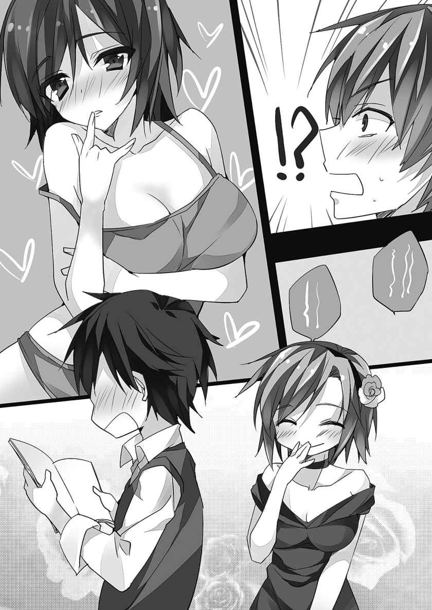
恋ヶ崎が手を差し出してきたが、俺は同人誌を背中に回して隠し、断固拒否した。
「な、何よそれ......！ ......ムラサキさんがあんたのために描いた同人誌だから、独り占めしたいってわけ!? ......ふーん、あっそ！ ならいいわよ！」
恋ヶ崎は俺の態度に機嫌を損ねたようで、俺を鋭く睨み付けてから、フン、と俺から顔を背けた。
「ええ？ そ、そう......なんですか？ 見たかったですが、それは残念です......」
桜井さんも残念そうに肩を落としている。
いや......見ない方がお前らのためなんだってば......！
俺は諸悪の根源であるムラサキさんの方を見たが、彼女はニコニコと笑っているだけだった。
「か......帰ってから......ゆっくり読みます......」
ここでこれ以上この恐ろしい同人誌の続きを読む気力はなく、力なく彼女に告げる。
「ええ、その方がいいかもしれませんね♪ できれば、誰もいない自室で......」
「!? ......そっ、そういう意味じゃありませんから！」
俺はムラサキさんの下ネタ発言に声を大にして突っ込んでから、そそくさと激ヤバ同人誌を鞄にしまった。
「それでは次......わたしからのプレゼントですっ！」
続いて桜井さんが、袋から箱を取り出した。
「えっ......!?」
既に桜井さんからは、先日プレゼントをもらっているのだが......。
「......って言っても、本物のプレゼントは既にあげちゃったので......今日のは、おまけみたいなものです」
少し大きめの箱を、桜井さんから受け取った。
「あ、ありがとう......開けてもいいかな？」
「はい、お願いします！」
テーブルの上に箱を置いて開けると......ちょうど一人分くらいのサイズの、おいしそうなパウンドケーキが出てきた。
「こ、これって......」
「本当はみんなの分作ろうと思ってたんですけど、大きいパウンドケーキは失敗して焦げちゃって......。残った材料で小さいサイズのケーキしか作れなかったから、柏田君の分しかないんですけど......」
桜井さんの、手作りケーキ!?
桜井さんって、どこまでも女の子らしいんだなあ......女の子から手作りケーキをもらうなんて生まれて初めてで、俺は猛烈に感動した。
「すごーいおいしそう！ 小豆ちゃんって料理上手なんだねー！」
「やー、普段全然料理しないから、少し不安なんだけど......。それに柏田君、もうおいしいお料理でお腹いっぱいだったりしませんか......？」
「いや、そんなことないよ！ ありがとう！ めっちゃおいしそうだし、是非今食べさせてもらうよ！」
「ほ、ほんとですか？」
「うん、頂きます！」
俺はありがたく、桜井さんの手作りケーキを食べようと、ケーキにフォークを刺した。
「......あれ？」
一口分にフォークで切り分けようとしたのだが......なぜか、フォークが刺さるのがやっとで、切り分けられないどころか、フォークがケーキから抜けなくなった。
「......？」
仕方なく、そのまま口に運んでまるごとかじりつく。......この時点で、さして疑問を抱かなかった俺が、バカだった......。
「......!?」
不思議なことに......ケーキに、歯が立たない。思い切り力を込めて嚙み切る。
「ガリッ」
......嚙み切ったとき、ケーキとは思えない変な音が聞こえた。
桜井さんの手作りケーキは......死ぬほど硬かったのだ。正直、歯が折れるかと思った。
その上、なぜか、ほとんど味がしなかった。味覚障害になってしまったのかと一瞬不安を覚えたほどだ。
「うっ......み、水......！」
ケーキを口に入れた瞬間から......口の中の水分が全てケーキに持って行かれ、口の中が一気にパサパサになり、喋るのさえ困難になった。
「ゲホッ......ケホッ、ゲホッ............ガホァァッ!!」
水分がなくなった故に、ケーキの一部が喉に張りついて思いっきりむせてしまい、あまりの苦しさに死にそうになる。
「か、柏田君、大丈夫ですか!? これ......」
桜井さんが、心配した様子で俺に水を差し出した。慌てて、俺は水を口に含む。はあ......た、助かった......危うく、ケーキに殺されるかと思った......。俺は涙目になっていた。
「ご、ごめんなさい......失敗作でしたか......!? ケーキ、初めて作ったから......」
桜井さんが、泣きそうな表情になって俺に尋ねた。や、やばい......。
「ぜぇ......ぜぇ......え、な、何言ってんの!? そんなわけないじゃん！ めちゃくちゃおいしくて一気にたくさん口に入れちゃったからむせただけだって！」
俺はものすごい勢いで彼女の言葉を否定した。せっかく作ってきてくれたっていうのに、こんな顔をさせてはいけない......！
「え......？ そ、そうなんですか......？」
「勿論！ 店で売ってるケーキとかより全然うまいって！」
俺は行動で示すべきだと思い、残りのケーキを一気に平らげた。ケーキを口に含んだ直後すぐに水を飲んだので、今度はむせずに済んだ。無味の硬いケーキを嚙んで飲み込むのは、とても不思議な体験だった。食器を洗うスポンジでも食べているかのような気分だ。いや、それよりもっと硬いけど。っていうか、スポンジ食ったことないけど。
「ガリガリガリ......」
おかしいな、俺......パウンドケーキを食べているはずなのに......口の中から氷でも食っているかのような音がするぞ......？
水を大量に飲んで、ケーキを無理矢理胃の中に流し込む。
「......はあ、はあ、はあ......」
飲み込んでから、必死に息を吸った。はあ、なんとか飲み込めて良かった......。まだ変な食感が口の中に残っている......。一刻も早く、何か別のおいしいものを食いたい......。
「か、柏田君......」
その様子を、桜井さんが啞然とした様子で眺めていた。
「い、いやあ......すげーうまかったよ！ これだったら、満腹状態でもいくらでも食べられるってくらい！」
慌てて、桜井さんに向かって感想を告げた。
「えー!? ちょっと、うちらに一口くらいくれたって良かったじゃん！ なんで全部一人で食べちゃうわけ!?」
「そんなにおいしいのでしたら、確かに食べてみたかったですねぇ......小豆さんの手作りケーキ......」
恋ヶ崎とムラサキさんが、羨ましそうに言う。
「ああ、すみません！ ついうまかったもので、独り占めしちゃって......」
「あんた、どんだけ食い意地張ってんのよ!?」
恋ヶ崎の料理の腕も強烈だったが......桜井さんも、負けてないかもしれない......。一体何をどう間違えて、あんな恐ろしいものが生み出されてしまったのだろうか？ 本当の味の感想など、死んでも言えないな......。
だが、俺のためにケーキを作ってきてくれた、という事実がとてもありがたいのだから、俺の反応はあれで間違っていなかったはずだ......。
「え、えっと......それじゃあ最後、桃ちゃん......」
桜井さんの声に、恋ヶ崎が......椅子の上に置いていた紙袋を手にする。
ま、まさか......恋ヶ崎まで、俺にプレゼントを......？
「はい。おめでと」
恋ヶ崎が、ぶっきらぼうに俺に紙袋を渡した。
「え、あ......ありがとう......」
まさか本当に恋ヶ崎までくれるとは思っていなかったので、俺は動揺しながら礼を言い、紙袋を受け取った。
「開けるぞ......」
恋ヶ崎が頷いたので、その場で紙袋を開ける。
「え、こ、これって......」
中から、服が出てきた。
それも、一着ではない。一つずつ袋を開けていくと......シャツ、パンツ、ベルト、カーディガン......。これ、全て恋ヶ崎が買ってくれたのか......!?
それも、全て......俺が自分では買えないような、とてもお洒落なものだった。
つまり、恋ヶ崎が......服を一式コーディネートして、俺にプレゼントしてくれた、ということか......？
「お前、こ、こんなに............」
驚きと感激のあまり、言葉にならない。一体、合計でいくらしたのだろう......!?
「ってか、そういえば、今日のこの服だって、わざわざ用意してくれたんじゃないのか......？」
「ああ......その服は、パパが部下の人に頼んでもらったお下がりだから、気にしなくていいって」
「そ、そう......なのか......？」
お下がり......？ その割には、すごく状態が綺麗だから新品っぽく感じたのだが......。
「とっても似合いそうですね！ 柏田さん、是非着てみて下さい♪」
ムラサキさんに言われて、俺はレストランのトイレを借りて恋ヶ崎にもらった服に着替えることになった。
着替えを終えて、トイレの手洗い場にある大きめの鏡を見ると......我ながら、とても似合っていた。サイズもぴったりだし、白とグレーを基調に全身コーディネートされた服は、シンプルながらとてもお洒落で、恋ヶ崎のセンスの良さを感じさせる。
俺がトイレから出てみんなの元へ戻ると、ムラサキさんと桜井さんが褒めてくれた。恋ヶ崎本人も、「ま、いつもよりはマシに見えるんじゃん？ さすがあたし！」なんて言っている。
「あんたも、このくらいの服自分で選べるようになんなさいよね」
「あ、ああ......そうだな......サンキュ......」
上から目線の恋ヶ崎の発言に、今日ばかりは腹が立たなかった。俺は素直に礼を言う。
こいつ、理由は分からんが俺に対して怒ってたんじゃなかったのかよ......？ なんでこんなすごいプレゼントをくれるんだよ......？
プレゼントは勿論だが......ここのところ、原因は分からないが恋ヶ崎に避けられっぱなしだったので、こんな風に今まで通り恋ヶ崎と会話できること自体、俺はとても嬉しかった。
上から目線でもいい。ちょっとくらいなら、バカにしてきても、罵倒してもいい。願わくは、これからも......こんな風に、今まで通り接して欲しい。もう、俺を避けたりしないで欲しい。
恋ヶ崎といつも通りに過ごせることが、俺にとってどんなに嬉しいことか......今日、改めて実感した。今までどうして俺を避けていたんだかは未だに分からないが、この調子だったら、きっと学校でも、月曜日から今まで通り接することができるだろう。ああ、良かった。本当に......。
そのとき、突然レストランの扉が開いた。
「えっ......!?」
扉から姿を現したのは、ムラサキさんの高校時代の漫研の先輩であり、同人作家でもある、二階堂杏奈さんだった。彼女もシックな黒のドレスを身にまとい、美しく着飾っている。
その後ろから、ムラサキさんの友人であり同人活動で売り子をしている、永瀬志乃さんも姿を現した。彼女もまた、緑色のシンプルなドレスを着てドレスアップしていた。
「志乃、杏奈先輩！」
ムラサキさんが二人の名を呼ぶ。どうしてこの二人がここに......？
二階堂さんと永瀬さんはレストランへ入るなり、俺の元へと歩み寄ってきた。
「柏田君、で良かったかしら？ この度はお誕生日おめでとう」
「おめでとうございます、柏田さん」
「えっ......!? あ、ありがとうございます......」
二階堂さんと永瀬さんにそれぞれお祝いの言葉をかけられて、戸惑いながらも返事をする。
「私が二人に声をかけたんです」
ムラサキさんが笑顔で俺に説明した。
「そ、そうだったんですか......」
二人とも、わざわざ俺のために......。
「でもまさか、杏奈先輩まで来て下さるとは、誘った私自身も思ってませんでしたよぉ～！」
ムラサキさんが二階堂さんに駆け寄って、彼女の手を握る。
「ひっ！ な、何よ......あなたが笑顔で私に駆け寄ってくるなんて、一体どういう風の吹き回し!? 気色悪いわね......」
二階堂さんは、いつもと違うムラサキさんの態度に警戒している。
「って、酒くさっ！ 紫あなた......酔っ払ってるの!?」
ム、ムラサキさん......いつにも増して陽気になってると思ったら、既に酔っていたのか......。思い返してみればそういえば確かに、さっきからワインっぽいものを飲んでいたような気がするが......。
「酔っ払ってなんかないですよ～う。さ、杏奈先輩も一緒に飲みましょ♪」
「ベタベタしないでよこの酔っ払い！ ちょっと永瀬さん、紫をどうにかしてよ！」
「杏奈さん......ご愁傷様です」
「ちょっ......何よそれ！ 見てないで助けなさいよ！」
ムラサキさんは二階堂さんの腕に絡みつき、二階堂さんはそれを激しく拒絶していた。
二階堂さんも永瀬さんも、それほど仲良くない俺なんぞの誕生日パーティーにわざわざ足を運んでくれるなんて......。二人にも、声をかけてくれたムラサキさんにも、とても感謝したいと思った。
「柏田さぁん、楽しんでますかぁ～!?」
「......っ!?」
俺がみんなの輪から外れてデザートを取りに来たところで、突然後ろからムラサキさんに声をかけられて驚いた。声をかけられただけではそんなに驚かないのだが、ムラサキさんはなんと、俺の腕に手を絡めてきたのである。
動揺して、彼女の顔を見る。顔はあまり赤くないが、現時点で相当酔っ払ってるんだろうなあ、この人......。
「聞いて下さいよぅ。あっちで四人が、今流行りのラインのゲームの話題で盛り上がっちゃって、私、話についていけないんですぅ～」
「ラインのゲーム......？」
ムラサキさんに言われて、恋ヶ崎、桜井さん、永瀬さん、二階堂さんの方へと視線を移す。確かに、四人は楽しげに会話して盛り上がっていた。まさかあの四人が意気投合することがあるなんて......。
「今流行ってるみたいなんですよ～？ 私、全然やったことなくて話に全く入れないんです......。志乃に、『分からないなら無理矢理話に入って来ないで下さいよ、酔っ払い』ってハッキリ言われちゃって......ぐすん」
「あはは......永瀬さん、相変わらずムラサキさんには容赦ないっすねえ......」
気付くと、ムラサキさんがじっと俺の目を見つめていた。と、突然なんだ？ 至近距離でそんなに見つめられると、ドキドキしてしまうのだが......。
「柏田さん、この間文化祭で会ったときから、何かありましたぁ～？」
「......えっ!?」
ムラサキさんは俺の顔を覗き込んだまま、唐突にそんな質問をしてきた。
あれから、何かあったか......？ あの間に起きた大きな出来事といえば、確かに一つ心当たりがある。
好きな子に告白して、振られた。
だがそんな湿っぽい話、こんな楽しい席でする話ではないし、そもそも俺だって話したくない。
「い、いやあ、特に何もないですよ......」
適当に誤魔化そうとすると。
「噓ですね！」
俺の鼻の頭をビシッと指差して、ムラサキさんが言い切った。
「私の目は誤魔化せませんよ？」
得意げにウィンクする。う、可愛い......。
「なんかほんの少～しだけ、この間会ったときと様子が違う気がするんですよねぇ......。少年が何かを経験して大人の男になった、的な？」
「んなっ......!?」
そんなにおかしなことは言ってないはずだが、この人の口から聞くと途端に変な意味に聞こえてくるもんだから困った。
......っていうか、マジかよ......。酔っ払ってる割に、鋭いなこの人......。
俺は今日、長谷川に振られたことなんてあまり思い出さないようにしていたし、せっかくみんなが俺の誕生日を祝ってくれている楽しい場なのだから、俺自身もなるべく楽しく過ごすよう心がけた。我ながら、うまく振る舞えているつもりだったのに......そんな俺の心を、彼女は見透かしていたというのか？ 鋭すぎんだろ......。
「何があったんです？ お姉さんに相談してみたらどうです？」
「え......う、うーん......酔っ払ってる人に相談してもなあ......」
ムラサキさんが酔っ払っているのをいいことに、四つも年上であることを無視して、我ながら相当失礼な言い方をしてしまった。......ま、いいか。どうせ酔っ払いだし。
「失礼な！ 私は全然酔っ払ってなんかいませんよ!?」
「........................」
俺は冷ややかな目で、彼女を見る。
「さっほら、お姉さんに何でも言ってごらんなさい！」
..................。
ま、いいか......。酔っ払いだし......酔いが覚めたらどうせ、全部忘れてるだろうし......。
「......失恋したんすよ」
俺は、デザートを自分の皿に取りながら言った。
「......え？」
ムラサキさんは、俺の言葉に大きく目を見開いた。
「............」
目を見開いたまま、俺の顔を見る。その瞬間だけは......なぜだろう、酔っ払っている表情に見えなかった。
「......し、失恋......ですか......。それはまた、ヘビーですねぇ......」
それから彼女は、俺から目を逸らした。彼女にしては珍しく、少し動揺しているような様子なのは、気のせいだろうか？
「ヘビーですよ。そりゃあもう、めちゃくちゃ傷つきましたよ」
酒の席の雰囲気に酔う、なんて言葉を聞いたことがあるが......俺は今、まさに自分がそんな状態になっているような気がした。酔っ払いの相手をしていたら、自分まで酔っ払ったような気分になってきて、いつもより思い切ったことを口走っているような気がする。
「そう、ですか......」
ムラサキさんは俺から目を逸らしたまま、俯いて少しの間黙っていた。一体どうしたのだろうか。
それから、再びぱっと顔を上げて俺を見る。その顔はもう、さっきまでの陽気な笑顔に戻っていた。
「柏田さんみたいな魅力的な男性でも......失恋することなんてあるんですねぇ」
次の瞬間......ムラサキさんは突然、俺の腕に絡めていた自身の腕を......俺の首の後ろへと回した。
「えっ......!? ちょ、ちょっと......！」
俺は激しく動揺して、恋ヶ崎たちの方へ目を向ける。幸い、四人は会話に夢中で、誰一人俺たちのことを気にとめていなかったが、いつこの状態を見られるかと思ったら気が気じゃない。とりあえず落としたらまずいので、手に持っていたデザートを載せた皿を近くのテーブルへと置く。
「お、お世辞......どうもありがとうございますっ！」
酔っ払い相手に狼狽えるのも情けないので、必死でなんでもないフリをして言葉を返す。
「お世辞なんかじゃありませんよぉ？ 柏田さんは、すっごく魅力的ですからぁ」
「なっ、な、な、何を......」
酔っ払いの言うことだ、真に受けるな柏田直輝っ！
正面で向かい合った状態で彼女を見下ろすと、大きく胸元の開いたドレスから、彼女の白い胸が見えてしまった。うおおこれ、あとほんの少し近づいたらかなりきわどいところが......って、やべえ！ もろに見過ぎだろ俺！ 慌てて、胸元から視線を外す。
......その瞬間、彼女が口元だけでふっ、と笑った。
え......？ 今、俺の視線に気づいて......？
「あらぁ？ 柏田さん......今、どちらを見ていたんです？」
「......っ!?」
彼女のとんでもない質問に、俺は噴き出しそうになる。
「んなっ......！ べ、べ、別に......、どこも見てな......っ！」
「ふふっ、誤魔化さなくたっていいんですよぉ？ そんなことくらいで私は怒りませんからぁ～。......さ、どこを見ていたんですぅ？」
ムラサキさんはさらに俺に顔を近づけて、至近距離でニヤニヤしながら俺の目をじっと見つめてくる。意地でも俺が胸を見ていたことを俺の口から言わせるつもりらしい。このドＳめがぁ！ っていうか、完全にどこ見てたか分かってんじゃねえか！
......っていうか、そんなことよりも、この首に回してる手をどうにかしてくれないかな、この酔っ払い......。他の人に見られたら......。
「............そんなに、辛いのなら......」
「えっ......」
次の瞬間。今までのふざけていた様子とは一変して、彼女は真剣な眼差しで俺を見つめてくる。
「お姉さんが......慰めてあげましょうか？」
不敵に笑う彼女の瞳には、酷く動揺した情けない自分の姿が映っていた。
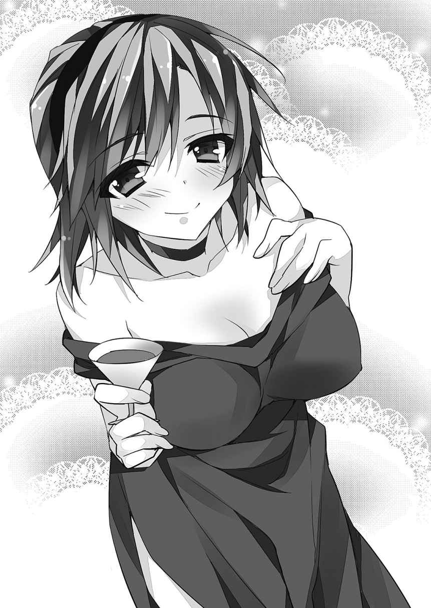
「............っ」
くっ......、酔っ払い相手に狼狽えまいと、何か言い返そうとするが、俺はもうお手上げだった。そんな扇情的なセリフ、反則だ。今俺の顔は、多分目の前の酔っ払いよりも真っ赤になっている。恥ずかしさのあまり彼女の顔が見られなくなる。何も言い返せない。
「ふふっ」
俺の様子を見て、満足げに彼女が笑った。やっと、俺の首の後ろから手を離す。
......安心したような、......寂しいような......。
「やっぱり柏田さんってぇ～......すっごく可愛いですね！」
「なんすかそれ......男が可愛いとか言われても全然嬉しくないですから......」
「でもぉ、安心して下さいネッ！」
「え、何が......」
絶対安心できそうなことは言われない気がしたが、彼女を見た。
「全ての女性に振られても、私がいますから！」
彼女は満面の笑みで、俺に向かって両手を広げた。
「..................」
......絶対、百パーセント、間違いなく......冗談なんだろうが。
酔っ払ってるし......確実に、本気でそんなこと、思ってないんだろうが。
俺は今、彼女のその言葉に......救われたような気がした。
「かっ柏田君！ ムラサキさん！ そ、そんなところで一体、何してるんですか!?」
「ちょっと紫......酔っ払った勢いで柏田さんに変なことしてないでしょうね......？」
気付くと、桜井さんと永瀬さんが俺たちの近くまで来て、声をかけてきた。
桜井さんは、なんだか少し焦っているかのような表情で俺に詰め寄ってくる。
永瀬さんは永瀬さんで、ムラサキさんを疑いの眼差しで睨み付けている。
「失礼な！ 変なことなんかしてませんよ!? ねえ、柏田さん」
変なこと......いや、されたと言えばされたような気もするが......。
桜井さんと永瀬さんがムラサキさんを連れてデザートを取るためにその場を離れ、俺は一人立ち尽くす。
......はぁ......。落ち着け俺......静まるんだ、俺よ......！
あの人普段からおかしいけど、シラフのときはまだ少しは理性を保ってるのに対して......今日の痴女っぷりはヤバすぎる！ どんだけ酒飲んでんだよ!? 先月のサンクリの打ち上げのお好み焼き屋のときより、確実に酔ってるだろ!?
......いや、まあ正直、あんな酔っ払いだったら大歓迎ですけど......！
それにしても、もしさっき......ムラサキさんの『慰めてあげましょうか？』に対して、俺が『慰めて下さい！』って返してたら......一体どうなっていたのだろう......？
彼女の言う『慰める』って、どういう意味、だったんだろうか......？ 果たして、どんな方法で俺を慰めてくれるつもりだったんだ......!?
彼女のあのエロい言い方からして、普通の『慰める』っていう意味とはちょっと違ったような気がするのは、俺の考え過ぎか......!? 童貞深読みしすぎか......!?
俺の脳内では、ありとあらゆるしてはいけない妄想が繰り広げられた。
やべ、一回落ち着いたのにまた興奮してきた......。
ああっくそ！ 俺に、あと一歩の冷静さと大胆さがあれば......何か素敵な展開が待ち受けていたかもしれないってのに......！
「柏田君......何ニヤついてるんですか？」
「うおっ!?」
桜井さんに声をかけられて慌てて我に返る。どうやらデザートを取り終えて戻ってきたようだ。まずいまずい、俺今無意識にニヤついていたのか......。
「い、いや、別に......」
「............？」
桜井さんは首を傾げて、俺の顔を不思議そうにじっと見た。
それから桜井さん、ムラサキさん、永瀬さんと共に恋ヶ崎と二階堂さんの元へと戻り、しばらくの間、みんなで飲み物やデザートを口にしながら楽しく歓談した。
「あ、あたし......ちょっとお手洗い......」
途中、恋ヶ崎がトイレへ行くために、みんなの輪から抜けた。
俺は慌てて、恋ヶ崎の後を追う。
「おい、恋ヶ崎」
俺が呼びかけると、恋ヶ崎が振り向いた。
「......えっ!?」
その顔を見て、俺は思わず驚きの声を上げる。
振り向いた恋ヶ崎の表情は......めちゃくちゃ不機嫌そうだったのだ。
「な、なんだよ、その顔......!?」
さっきみんなの輪の中にいたときは、普通に楽しそうだったのに......。
「はあ？ あたしの顔が、何？」
「い、いや......すげー機嫌悪そうだから......」
「はあぁ!? あたしが機嫌悪い？ なんでよ！ めちゃくちゃ楽しいっての！ 何勝手に意味分かんない誤解してるわけ？ 自意識過剰なんじゃないの!?」
「......は？」
なんで、恋ヶ崎が機嫌悪いことを指摘したら、俺が自意識過剰になるんだよ？ 意味が分からないのは恋ヶ崎の方だ。
「......ていうかさあ！ あんた、こういうみんながいる場で何やってるわけ!? 何考えてんの!? い、いくら誕生日だからって......調子乗りすぎじゃない!?」
「は!? な、何が......」
「デレデレしちゃってマジキモい！ 見てないみたいだったから良かったけど、小豆ちゃんの目だってあるってのに......」
「だっ、だから！ さっきから何の話してんだよ!?」
勝手にベラベラと俺を罵倒し続けてくる恋ヶ崎の肩を摑んで、恋ヶ崎の言葉を止めた。こうでもしないと、恋ヶ崎の言葉が止まらないと思ったのだ。
「......っ!? ......さっ......触んないでよっ！」
その瞬間、恋ヶ崎はものすごい勢いで自分の肩から俺の手を振り払った。
「......!?」
頰を赤く染めて、俺のことを鋭く睨み付けてくる。その過剰な反応に、俺は戸惑ってしまう。こいつ、明らかに様子がおかしい......。
「............？ ......で、お、お前は......一体何のことを言ってるんだよ？ 俺が調子に乗ってるとかキモいとか......なんなんだよ？」
「............分かんないなら、いい」
低い声で、ボソッと呟く。
「......は？」
俺から顔を逸らした恋ヶ崎は、一層不機嫌そうだった。
いきなりあんな風に罵倒されて、理由を聞かなければ納得もできないので聞きたかったのだが、これ以上言及するとマジでキレ兼ねない。
こいつ、怖えよ......。なんでいきなりこんなに不機嫌なんだよ......？
キレている理由がとても気になったが、恋ヶ崎をブチギレさせて楽しいこの場の空気を壊すわけにもいかないので、仕方なく、俺はそれ以上その話題に触れるのを諦めた。
「で、何？ なんかあたしに声かけなかった？」
「え、ああ......」
わけの分からんことでキレてるこいつに、言おうかどうか一瞬悩んだが......とりあえず、これは言っておかなければならないことなので、仕方なく口を開いた。
「いや......今日のこと、礼を言おうと思って......」
「......え？」
俺の言葉に、不機嫌そうな表情だった恋ヶ崎が、目を丸くする。
「こんないい店貸し切りにして、大それたパーティー開いてもらった上に......あんな大層なプレゼントまでもらっちまって......」
どこかのタイミングで礼を言わなければならないと思っていたので、言うなら恋ヶ崎が席を外した今がチャンスだと思った。
今日俺がこんな楽しい思いをできているのは、恋ヶ崎のおかげであるところが大きいのだから、こいつにはきちんと感謝しなければならない。
俺の言葉に、恋ヶ崎は少しの間何かを考え込む。それから、ふう、と一息ついて口を開いた。
「いや、あのさ......なんか勘違いしてるみたいだけど、今日のパーティー主催したの、あたしじゃないから」
「......えっ!?」
冷めた様子で言う恋ヶ崎に、俺は戸惑いを隠せない。
「あたしはパパに頼んで場所用意しただけで、今日のパーティー企画してみんなに声かけたりしたの、小豆ちゃんだから」
「そ、そうだった......のか......」
てっきり、恋ヶ崎が親父さんに頼んでレストランを貸し切りにしてくれたと聞いていたから、恋ヶ崎が主催してくれたのかと思い込んでいた。企画してくれたのは、桜井さんだったのか......。桜井さんに、改めて礼を言わないとな......。誕生日当日も祝ってくれたっていうのに、ここまでしてくれるなんて......。
「あ、で、でも、プレゼント......ありがたかったよ」
恋ヶ崎に改めて、プレゼントの礼を言う。
「......別に......。まあ、この間のお礼も兼ねてるっていうか......」
「この間の礼......？」
「鈴木君ちで鍋パやったとき。......あんた、いろいろ気ー遣ってくれたじゃん」
「あ、ああ......」
鈴木の家での鍋パーティーの帰り道、罵倒されてケツを叩かれたりして、わけの分からんことをいろいろ言われたが......こいつはあの日のことを、一応俺に感謝していたのか......。全然気づかなかった。なんと分かりにくい奴なのだろうか。
「きょ、協定関係結んでるんだから、まあお互い様だろ」
素直に感謝されると途端に気恥ずかしくなってしまうが、俺は平静を装ってそう返した。
「協定、関係............」
恋ヶ崎が、低い声で呟く。
「......あのさ、柏田」
身体をこちらに向けて、真っ直ぐ俺を見る。
なぜだろう......一瞬、すごく、嫌な予感がしたのは。
「え、なん......」
「協定関係............今度こそ、終わりにしない？」
恋ヶ崎は、無表情で言った。
俺はその言葉に、思考回路が停止する。
「......協定関係を、終わり、に............？」
言葉の意味を読み込むことができず、俺は恋ヶ崎の言ったセリフをそのままオウム返ししてしまう。
な、何を......言ってるんだ、こいつは......？
だって今日、せっかく、久しぶりに今まで通り話すことができて......。
これからも、やっと、今まで通りの関係に戻れると思って......俺は、すごく嬉しかったっていうのに......。
「な......なんでだよ......」
言葉を発するのがやっとだった。
「そもそも......あんた、長谷川さんのこと諦めたんだから......あたしがあんたに恋愛のことで協力することなんて、もうできなくなっちゃったんだから......協定関係、成立しなくなっちゃったじゃん......」
「......！」
確かに、恋ヶ崎の言う通りだった。
だけど、それでも俺は......。
「そ、それはそれでいいだろ......別に今まで通り、服装の指南とかしてくれれば、俺はそれでも助かるし......。べ、別に......俺が、お前と鈴木の仲取り持つのに、一方的に協力するだけだって、俺は構わないし......」
俺はもう、強がったり見栄を張ったりする余裕などなくなっていた。
必死だった。協定関係を解消したくなくて。恋ヶ崎との繫がりを......手放したくなくて。
「......そ、そんなの、フェアじゃないじゃん......。て、ていうか......」
恋ヶ崎は一呼吸置いてから、再び話し始める。
「......も......もう、協力してもらわなくて大丈夫だから......。あんたに頼らなくても......あとは、自分の力で......なんとかするから......」
俺の目を見ずに、恋ヶ崎は言った。
俺は恋ヶ崎の言葉を聞いて、ショックのあまり言葉も出なくなってしまう。
そっか......そりゃあ、そうだよな......。
だって恋ヶ崎と鈴木の仲は......もう、二人きりでデートできるくらいまで、進展しているのだ。
考えないようにしていたが......今日恋ヶ崎が俺にプレゼントしてくれたこの服だって、もしかしたら......鈴木との原宿デートのときに買ったのかもしれない。
そこまでうまくいってるのだから......もうとっくに、俺の協力なんて必要なくなっているのだ。あとは......恋ヶ崎の言う通り、恋ヶ崎が自分の力でなんとかできるくらいのところまで、来ているのだろう。
こいつに俺の協力なんてもう必要ないってことくらい、分かっていたはずだった。だけど、こうして改めて協定関係の解消を言い渡されると......正直、死ぬほどショックだった。悲しかった。俺はもう、恋ヶ崎にとって役立たずなのだ。
それどころか......俺と必要以上に一緒にいたら、鈴木に変に誤解されてしまうかもしれない。俺といることで、こいつに迷惑がかかってしまう。
「じゃあ、そういうことだから......」
恋ヶ崎は俺の返事も待たずに、俺に背を向けて、俺の前から去っていった。
今まで俺は、どれほど恋ヶ崎に助けられたことだろう。
長谷川に失恋した後だって......恋ヶ崎がいなかったら、きっともっと辛かった。今日をこうして楽しめているのだって......恋ヶ崎の存在があったからだ。俺にとって恋ヶ崎の存在がどれだけ大きいものかということを、最近改めて実感していた。
恋ヶ崎に避けられているのは、きっと一時的なものだろうと、勝手に思っていた。根拠もなく、またすぐ元通りに話せるようになるだろうと思い込んでいた。
だけど、これから先も......俺は、恋ヶ崎と今までみたいに接することができなくなってしまった。
きっと今後も、恋ヶ崎は学校で俺を避け続ける。
協定関係を解消してしまったら......俺とあいつが一緒にいる理由など、なくなってしまう。
以前にも一度、恋ヶ崎に協定関係の解消を言い渡されたことがあったが......あのときは売り言葉に買い言葉で、あくまで喧嘩の延長に過ぎなかった。
だけど今回のは、前回とはわけが違う。喧嘩などしていなかったし、恋ヶ崎は極めて冷静だった。恐らく、よく考えた末の提案だったのだと思う。
もう恋ヶ崎と一緒にいられなくなるなんて、想像しただけで寂しくてたまらなかった。
認めたくないが......俺は今、長谷川に振られたときよりも、ずっと悲しかった。
「......くん、柏田君!?」
「えっ!?」
後ろから桜井さんに声をかけられて、慌てて我に返る。
「ぼーっとして......どうかしましたか？ 大丈夫ですか......？」
桜井さんは、心底心配そうな表情で俺を見た。
「ご、ごめん！ なんでもないよ、大丈夫！」
彼女をこれ以上心配させまいと、俺はできる限りの笑顔を作った。
今日はせっかく、みんなが俺の誕生日を祝うために集まってくれているんだ。
誕生日パーティーを主催してくれた桜井さんのためにも、暗い顔なんか見せてはいけない。自分で自分に言い聞かせ、みんなの輪の中へと戻った。
やがて恋ヶ崎もトイレから戻り、みんなの輪の中に入る。
俺はなるべく、恋ヶ崎とは何事もなかったかのように振る舞うよう努めた。恋ヶ崎の方も、みんなに変に思われないようにするためか、今日ばかりは俺のことを避けたりするようなことはせず、今まで通り自然に接してきた。
ああ......こうしてると、さっきの会話なんて、まるでなかったみたいに思えてくるな......。本当に、何もなかったなら良かったのに......。そう思わずにはいられなかった。
「あ、そうだ！ 今日の目的、すっかり忘れてたわ！」
ムラサキさんと永瀬さんと共にデザートを食べながら話していた二階堂さんが、デザートの皿をテーブルの上に置くと、突然ツカツカと歩き出す。彼女が向かった先には......恋ヶ崎がいた。
「桃坂ジュリエットさん......」
「......っ!?」
俺は思わず、噴き出しそうになる。
桃坂ジュリエット......というのは、恋ヶ崎が同人活動をする際のペンネームだった。最初は『Peach-Princess（ピーチ・プリンセス）』などというふざけた名前にしようとしていたのを俺が止めて、その名前になった。いや、桃坂ジュリエットだって十分ふざけた名前ではあるが、ピーチ・プリンセスよりはいくらかマシだろうと思い、許可したのだ。
二階堂さんはどうして、恋ヶ崎のペンネームを呼んだんだ......？ 恋ヶ崎の本名を知らず、ペンネームしか知らないのだろうか？
「えっ!? は、はい......」
恋ヶ崎が、戸惑いながらも返事をする。
「今度、コミティアという創作同人イベントで、私が主催で創作の合同誌を作ろうと思っているのだけど......あなたにも、是非原稿を書いてもらいたくて」
「............え？」
二階堂さんの発言に、恋ヶ崎がポカンとする。俺も......全く状況が飲み込めない。
創作の合同誌......ということは、同人誌ではあるが、二次創作ではなくオリジナル作品で、何人かで集まって一冊の本を作るということだ。
「ページ数は五ページから十ページくらいで構わないわ。足りないというのであれば増やしてもいいし。勿論、謝礼は払うわ。そんなに大きい額は払えないと思うけど......」
二階堂さんは、恋ヶ崎を置いてきぼりにして、一方的に語り出す。
「あ、勿論、年齢指定ものではなく、健全なストーリー重視の同人誌よ！ 今決まっているのは、オムニバス形式の恋愛ものというくらいで、これからテーマを詰めていくつもりだけど......」
「..................」
突然の話に、恋ヶ崎は驚いた様子で何も言えなくなっていた。
「......さっきから黙っているけど、何か質問はある？」
「えっ、いえ......あ、あの......どうして、実績もないし、ファンの人だっていない無名のあたしなんかに依頼を......？」
「あの後......あなたのノベル同人誌を読ませてもらったわ」
そういえば、二階堂さんは流れで恋ヶ崎の同人誌を買ってくれたんだったな。
「正直言って私は、あの同人誌の元ネタである漫画を知らなかったのだけど......そんな私でも十分に楽しめたわ。ストーリーの構成も良かったし、おそらくメインターゲットであろう女性読者の心を摑む展開も、とてもよくできていたわ」
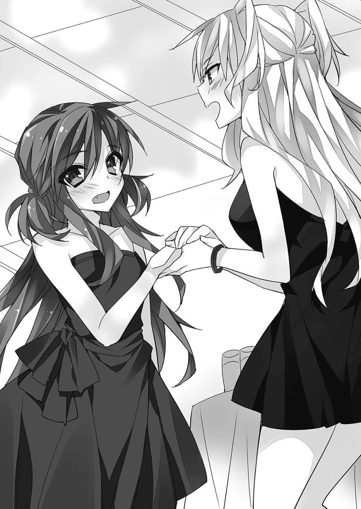
二階堂さんは、手放しに恋ヶ崎の同人誌を褒め始めた。まさかの展開に、俺まで驚いてしまう。
「今度作る合同誌は、私が素晴らしい作品を作ると感じた人に声をかけて、クオリティの高い合同誌にしたいと思っているの。是非あなたにも、小説を書いてもらいたいのよ」
それってつまり......二階堂さんは、恋ヶ崎の同人誌を読んで、実力を認めてくれた、ってことなのか......？ あの同人誌を読んで、自分の合同誌に原稿を書いて欲しいって思ったんだもんな......。恋ヶ崎、すげえじゃねえか......！
「勿論、返事はすぐにとは言わないわ」
黙ったままの恋ヶ崎に、二階堂さんは告げる。恋ヶ崎は恐らく......戸惑っているのだろう。あいつはこの間まで、同人誌のこともよく知らなかったのだ。そんないきなり、あまり親しくもない人に、合同誌に原稿を書いてくれなんて言われても......。
「あ、あたし......やってみたい、です......」
「......!?」
なんと、恋ヶ崎はその場で即決してしまった。まさかそんなすぐに引き受けるとは思っていなかったので、驚いた。
「そう、ありがとう！」
「で、でも......本当にあたしなんかが......大丈夫なんでしょうか......？」
「当然よ。私があの同人誌を読んで、是非あなたに書いてもらいたいと思ったのだから」
「でも......あの、あの小説は......ひ、人に見てもらいながら書いたからうまくできただけかもしれなくって......」
恋ヶ崎が......一瞬だけ俺の方を見てから、二階堂さんに告げた。
......確かに、あの小説は俺がアドバイスをしたので、恋ヶ崎はそのことを言っているのだろう......。
「それならぁ～今回も是非、柏田さんが協力して差し上げて下さいっ♪ そしたら、桃さんも心強いですよねぇ！」
「えっ!?」
ムラサキさんが突然、俺の肩を叩いて言う。
「ねっ柏田さん。勿論、協力して下さいますよね～？」
「............は、はあ......」
ここで断るわけにもいかないので、とりあえず承諾した。
「桃さん、良かったですねぇ～！ これで、また自信を持って原稿が書けますねっ！」
「え!? あ、えっと............はい......」
恋ヶ崎は一瞬だけ俺を見てから、すぐに目を逸らした。
マジ、かよ......。面倒なことになっちまった......。
ただでさえここのところ恋ヶ崎に避けられっぱなしで、その上、さっき恋ヶ崎に協定関係解消を言い渡されたばかりで、俺たちの関係はもう......以前恋ヶ崎の小説に協力したときとは、全く変わってしまったっていうのに......。
だけど......俺は、恋ヶ崎とまた関わる口実ができたことに......嬉しく思っている自分にも、気付いてしまった。
勿論、そんな風に思っているのは俺だけで、恋ヶ崎の方は......さぞかし困惑していることだろう。やっとこれから、俺から離れて自分の力で鈴木と仲よくしていこうと思っているところなのに、また俺と関わらなければいけなくなるなんて......。
そんな風に思ってる恋ヶ崎と、協力して同人誌の原稿なんて......果たして、できるのだろうか？
やがて、レストランの貸し切り終了時間が迫ってきたようなので、俺たちは店を出ることになった。
「だいたい紫、あなたねえ！ 入部当初の一年の頃は全然絵が下手くそだったっていうのに、あっという間にうまくなっちゃって......！ 私は知ってたんだから、あなたがいつも指にペンだこ作ってたの！ あなた、いつもニコニコして穏やかそうにしてた割に、内心私たち先輩に対して闘争心燃やしてたでしょう!? ほんと～っに嫌な後輩だったわ！」
レストランを出て、駅まで歩く道中......二階堂さんが、おぼつかない足取りで歩きながら、ムラサキさんに絡んでいる。二階堂さんはあれから、ムラサキさんに負けないくらい酒を飲み......彼女もまた、ムラサキさん同様完全に出来上がっていた。
「あら～杏奈先ぱぁい、それ、褒め言葉として受け取っていいんですかぁ？」
「今の話のどこをどう聞いたら、褒め言葉になるって言うのよ!?」
「いいなあ～。お酒飲めるって楽しそう！ わたしたちも大人になったら、三人でお酒飲んでみたいですね！」
酔っ払った二人の様子を見て、桜井さんがそんなことを言い出した。まあ、あんな風になるまで酔っ払いたくはないが......確かに、楽しそうではあるな。
「っていうかぁ、まだ七時ですよぉ～!? 杏奈先輩、全然飲み足りませんよねぇ!?」
「当たり前じゃない！ 私はあなたよりお酒強いんだからっ！」
二階堂さん......ムラサキさんのことをライバル視しているようだが、そんなところまで張り合う必要ねえだろ......！
「そう来なくっちゃ～！ じゃ、もう一軒行きますよね!?」
「当然！ まだワインのボトル一本や二本くらい、余裕で空けられるわ！」
ちょっ......この酔っ払いたち、まだ飲むつもりなのか......!? つーか、仲がいいのか悪いのか一体どっちなんだよ!?
「はぁ～......。ええと、じゃあ......とりあえず、一応私は酔っぱらいたちが心配なので付き添いますが、もう時間も遅いので高校生のお三方はご帰宅下さい。最後ぐだぐだになってしまい申し訳ありませんが......」
なぜか、永瀬さんが俺たちに謝ってきた。本当にできた人である。
「い、いえ......」
「え──っ!? 三人とも、帰っちゃうんですかぁ～!?」
「酔っ払いはこれ以上、健全な未成年に駄目な大人の痴態を晒さないで下さい」
俺たちに近づこうとしたムラサキさんを、永瀬さんが身体を張って止めた。相変わらず、ムラサキさん相手だと発言が容赦ない。
とりあえず、俺たち高校生組と、もう一軒飲みに行くらしいムラサキさん、永瀬さん、二階堂さんの三人は、ここで別れることになった、
「あ、あの......皆さん、今日は、本当にありがとうございました......！」
最後に、その場にいる全員に向かって、俺は礼を言った。
こんな言葉では、とても足りない。何かの形で、きちんとお礼をしなければ......。
特に、今日のパーティーを企画して主催してくれた、桜井さんには......。
三人と別れて、俺たちは六本木の駅までの道のりを歩く。
「今日、すっごく楽しかった～！ 料理もおいしかったし......。わたし、六本木なんてお洒落な街来るの初めてだよ～」
「あたしも、家族でたまに外食に来るくらいだな～」
「わー、桃ちゃんち、外食で六本木なんて来るの!?」
他愛もない話をしているうちに、あっという間に駅に辿り着いた。
俺も......今日は、すごく楽しかった。
みんなで楽しく過ごす今日みたいな日が、ずっと続けばいいのに、なんて......思ってしまうほどに。
だけど......そういうわけにはいかない。
俺と恋ヶ崎は、もう......。
「あ、あたし......駅まで、パパに迎えに来てもらうことになってるから」
「え!? そうなの!?」
恋ヶ崎のセリフに、俺と桜井さんは驚く。確か昼間は、迎えはいらないと恋ヶ崎は親父さんの申し出を断っていたが......その後、やはり来てもらうことにしたのだろうか？
「今日はもう遅いし、危ないから......柏田、小豆ちゃんを家まで送ってあげてよ」
「......えっ!?」
俺と桜井さんが、同時に声を上げる。
「そ、そんな......大丈夫だよ！ このくらいの時間に帰ることだって普通にあるし......」
「小豆ちゃんの地元の方......結構暗い道とかあるし、危ないから......。ね、柏田」
恋ヶ崎が、俺の目を見て頼んできた。
確かに、もうすっかり暗いから、そうした方がいいのかもしれないが......なぜ恋ヶ崎が、そんなことを俺に頼むのだろう？
「ああ......分かったよ」
恋ヶ崎がいつになく真剣に頼んできたので、俺は承諾した。
「じゃあ二人とも......気をつけて帰ってね」
「うん、また月曜日ね～！」
「じゃあな......」
恋ヶ崎に手を振って別れ、俺たちは駅の階段を降りて地下鉄の乗り場へと向かう。
「え、えっと......桃ちゃんは心配してああ言ってくれたけど、本当に大丈夫ですから！」
「いや、ちゃんと送るよ」
約束した以上、約束は果たさなければ。
「で、でもうち......結構駅から距離あるし、柏田君の帰りが遅くなっちゃいますよ？」
「うちは今日遅くなるって言ってあるから大丈夫。ほんと、気にしなくていいって」
「そ、そう......ですか？ じゃあ......宜しくお願いします」
やっと桜井さんが折れてくれたので、俺は桜井さんを彼女の家まで送り届けることになった。
桜井さんの家の最寄り駅までの切符を買う。彼女の地元に行くのは二回目だが、前回は自転車だったからな......。
電車に乗り込むと、結構座席が空いていたので、俺たちは近くの席へと座った。
「いやーそれにしても今日、本当に驚いたよ......恋ヶ崎が駅まで、お父さんの車で迎えに来て、強制的に車に乗せられて......一体何事かと思ったよ！」
「えー！ 桃ちゃん、突然何も言わずに柏田君をさらったんですか!?」
「そうだよ！ このまま拉致されるかと思ったよ、俺！」
「あはははは！」
「それにしてもムラサキさん、結構酔ってましたよねー」
「ほんとだよね！ あと、二階堂さんも！」
「あの二人、今頃もっと飲んでるんでしょうかねー？」
「永瀬さん一人シラフだから、大変だろうな......」
俺たちは、楽しかった今日のことを話した。話しているうちに、あっという間に時間は去っていき、桜井さんの地元の駅に辿り着く。
俺たちは共に電車から降り、改札を出て、桜井さんの家までの道のりを歩いた。
「柏田君って......本当に優しいですよね」
「......え!?」
夜道を歩く途中......突然、桜井さんがそんなことを言ってきた。
「あ、い、いやあ......別に、気にしなくていいって、ほんと......」
恋ヶ崎に言われたからやっているわけで、元々送ろうなんて発想は俺の中になかったので、そんな風に言われると困ってしまうな......。
「あ、いえ......勿論、送ってくれるのもそうですけど......」
桜井さんは俺の方に顔を向けて、一瞬立ち止まった。
「わたしの作ったケーキ......本当は、おいしくなかったんですよね......？」
「............えっ!?」
桜井さんの言葉に思わずギクリとする。
「えっ......な、なんでそれを......!?」
口にしてから、しまった、と思った。そんな言い方したら、肯定しているも同然じゃないか......！
「い、いや、その、そうじゃなくて......」
慌てて発言を撤回しようとしたが、うまく撤回できず言葉がもつれてしまう。
「いいんです......もう、分かってますから......。っていうか......すみませんでした！ 失敗作を柏田君に食べさせちゃうなんて......。見た目的にうまくできたから、成功したかなって思ってたんですけど......やっぱり、味見するべきでした......」
桜井さんが申し訳なさそうに俺に謝った。
「い、いや......」
駄目だ、ここまで言われてしまっては、もう否定できなくなってしまった......。というか、桜井さん本人が気付いてるみたいだし......。
「その......なんで、気付いたの......？」
「柏田君が食べてる様子見てたら、分かりました」
な......!? くそ、完璧に演じたつもりだったのに、バレてたのか......！ 俺もまだまだだな......。
「それなのに柏田君......必死で全部食べてくれて、絶対おいしくないっぽいのに、おいしいおいしいって言ってくれて......。......わたしを、悲しませないように。みんなの前で、恥をかかせないように......」
「さ、桜井さん......」
そんな風に、思っていたのか......。
「柏田君......ずるい、です。優しすぎです」
桜井さんは、なんだか切なそうな顔で、笑った。
まさか、本人にバレているとは思わなかった......。
「いや......俺のためにケーキを作ってくれた、ってこと自体が嬉しかったからさ......」
フォローのような形になってしまったが、これは俺の本心だった。
「それだけじゃない......桜井さん、今日は、本当にありがとう」
俺は改めて、桜井さんに礼を言った。
「え、そ、そんな......」
桜井さんは顔の前で手のひらを振った。
「桜井さんには改めて礼を言わないとなって思ってたんだ。今日のこと」
今日のパーティーを主催して、みんなに声をかけてくれたのは桜井さんなんだ。感謝してもしきれない。
「へ？ ......？ いやわたし、特に何もしてないですし......」
桜井さんは不思議そうに首を傾げて、そんなことを言う。
「え？」
その発言に、少しだけ違和感を覚える。......あ、もしかして、謙遜しているのか？
「あ、そうだ、あとほら！ 俺の誕生日当日も祝ってくれたしさ。いや俺、正直最近......いろいろあって凹んでたけど、桜井さんのおかげですごく救われたっていうか......」
「そ、そんな......大げさですよ......」
「大げさなんかじゃないよ......。俺、これから桜井さんにどうやってお礼をしていったらいいのか......」
プレゼントを贈り返したり、物で返すのは簡単だ。だけど......物なんかじゃ返せないくらいのことを、桜井さんにはしてもらった。
「そ、そんな......」
「いや、このままじゃ俺の気も収まらないからさ！」
「お礼、ですか......」
桜井さんが、俯いて考え出す。
「うん......何かして欲しいこととかあったら、何でも......」
「何でも......？」
彼女は、顔を上げて俺を見た。
「それじゃあ......」
真剣な眼差しで、俺を見つめる。
「............思い出、下さい」
「え？」
......思い出？
桜井さんの言葉の意味が分からずポカンとしていると、彼女は一歩踏み出して俺に近付き......。
俺の頰に......軽く、ほんの一瞬......彼女の唇が触れた。
彼女は俺に、キスをした。
すぐに俺から離れる。
「これで......チャラってことでいーです」
はにかんだ笑顔で、彼女は言う。その顔は、真っ赤だった。
「な............え............!?」
......今、一体......何が起きたんだ......!?
俺は状況が飲み込めず、混乱状態に陥る。
もう駅から大分歩いたので、ほとんど人通りはない。車もあまり通っていないので、静かな夜道に桜井さんと二人きりだ。そんな状況も手伝って、俺の心拍数はどんどん上がっていく。
「......あ、あの......わたしっ......」
桜井さんの声が静寂を破る。
彼女は言葉を発しながら、俺の服の裾を摑んだ。
「......っ!?」
驚きながらも俺は彼女の顔を見る。彼女は真っ赤な顔のまま、潤んだ瞳で俺を見ている。
「ま、前に話したと思うんですけど、その......わたし、漫研での経験から、オタクの男の子が苦手で......。最初は、オタクの男の子っていうだけで、柏田君に勝手に苦手意識持って、感じ悪くしちゃってたのに、柏田君はそんなわたしのことを信頼して、桃ちゃんのために、わたしに助けを求めてくれて......」
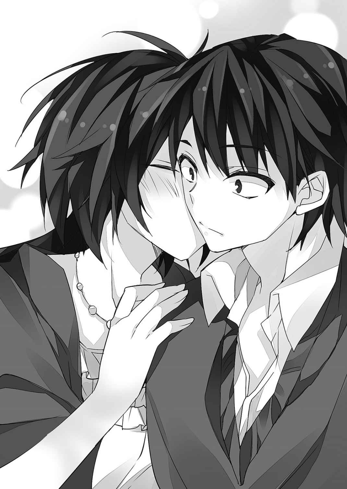
「え......？ う、うん............」
突然話し始めた桜井さんに動揺しつつ、相槌を打つ。最初の頃の態度は、やっぱりそういうことだったのか......。信頼して助けを求めた、っていうのは......もしかして、恋ヶ崎のコスプレ衣装がダメになったとき、桜井さんに助けを求めたときのことか......？ だけど一体どうして、彼女は今突然そんな昔の話を......？
「最初は、この人、わたしが知ってる、エッチで失礼で無神経なオタクの男の子たちとは違うんだな、って思って......。それから、なんとなく気になり始めて......。メールの返信が来ないとなんかそわそわしちゃって、携帯ばっか気にしちゃって......こんなの、初めてで......」
え......？ え............？
「柏田君は、わたしが腐女子なことにも引かないでいてくれて、暴走して変なこと言っても全部受け止めてくれて......」
「いつも、すごく優しくしてくれて、その度にときめいちゃって......。桃ちゃんに対しても優しいから、わたしに対してだけ特別なわけじゃない、って分かってるのに......」
「話してると、時間を忘れちゃうくらい楽しくって......男の子とこんなに話が合ったのって初めてだから、嬉しくて......。好きな人いるって聞いてショックで、他の女の子と仲よくしてるところを見ると、胸が痛んで......」
「さ、桜井さん......」
「......ちょっぴりヘタレ属性で、鈍感で、だけどいつも一生懸命で、誠実で、誰よりも優しくて......そんな柏田君は、腐女子にとっての理想の人じゃなくって..................わ、わたしにとっての、理想の人......です。わたしは......わたしは、そんな柏田君のことが............」
彼女の声が震えている。
いつの間にか、目には涙が溜まっていた。
俺の目を切なそうに真っ直ぐに見つめて、息を吸い込む。
「大好きですっ！ わたしの好きな人は柏田君ですっ！ この気持ちは......絶対誰にも負けません！」
「............え......？」
「送ってくれてありがとうございました！ おやすみなさいっ！」
桜井さんは、言い終えるとすぐに、俺に背中を向けて走り去った。
今起きた出来事を全て理解するのに、俺の脳みそがついていかない。
桜井さんに、頰にキスされて......それから......。
俺、今......こ、こ、......告白された......のか......？
彼女の言葉の一つ一つが、今も心に響いている。
彼女の真剣な表情が、まぶたの裏に焼き付いて離れない。
夢なのかと思った。今日の出来事まるごと......全て夢なのかと、俺は一瞬本気で疑った。
知らない街で夜道に一人取り残された俺は、桜井さんの姿が見えなくなっても、ずっとその場に立ちすくんでいた。
あとがき
読者の皆様、お久しぶりです。村上凛です。
この度は『オタリア』八巻をお手にとって頂き、ありがとうございます。
急展開が続く八巻ですが、お楽しみ頂けたでしょうか？
シリアス展開も多くなって参りましたが、少しでもドキドキハラハラして楽しんで頂けたら嬉しいです。
今巻が発売になる頃、ちょうどドラマＣＤと、コミックアライブ様にて連載中のコミカライズによるコミックス３巻も発売予定となっておりますので、併せてどうぞ宜しくお願い致します。
ドラマＣＤの方は、シナリオは私の、ジャケットはあなぽん様によるかき下ろしになっており、ブックレットには豪華なイラストレーター様たちによる応援イラストが収録されるようです。
また、現在ドラゴンマガジンでは『オタリア 部活編』を連載させて頂いております。本編とはひと味変わった短編になっておりますので、そちらも楽しんで頂けると嬉しいです。
オタリア公式ツイッターでもオタリアに関する情報を流しておりますので、どうぞ気軽にフォローしてみて下さい。アカウントはこちらです。→ @otaku_riaju
ファンレターを下さった読者の方々。お返事できず申し訳ありません。ありがたいお言葉、可愛らしいイラスト、本当にありがとうございます！ いつも励みにさせて頂いております。
次巻から、いよいよクライマックスに近づいていきます。
このシリーズをここまで読んで下さった皆様に最後まで楽しんで頂けるよう、全力で頑張ります。少しでも多くの読者の皆様に楽しんで頂けるような作品にしたいと思いますので、最後までお付き合い頂けたら、こんなに嬉しいことはありません。
どうぞ宜しくお願い致します。
村上 凛
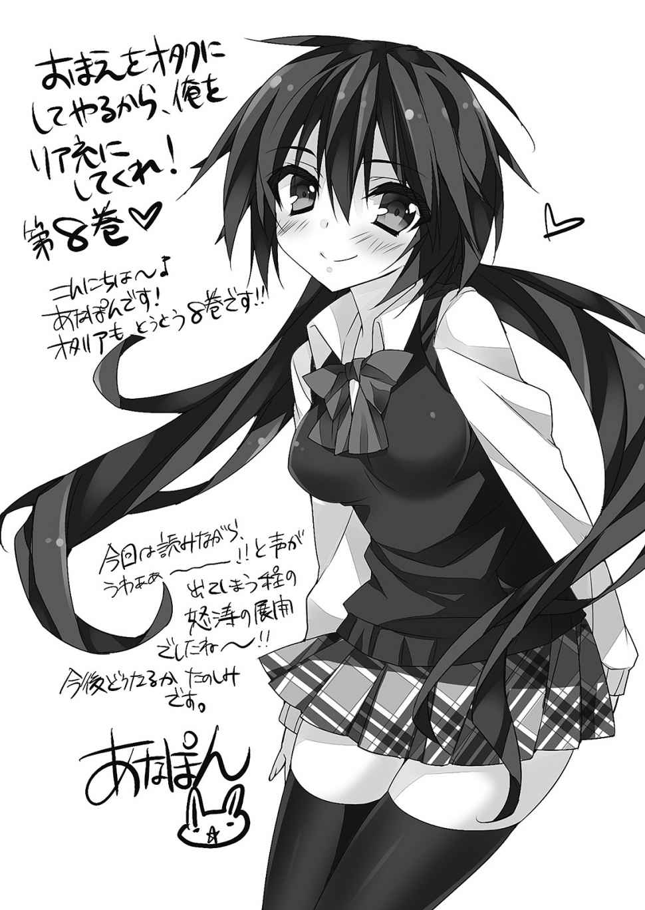
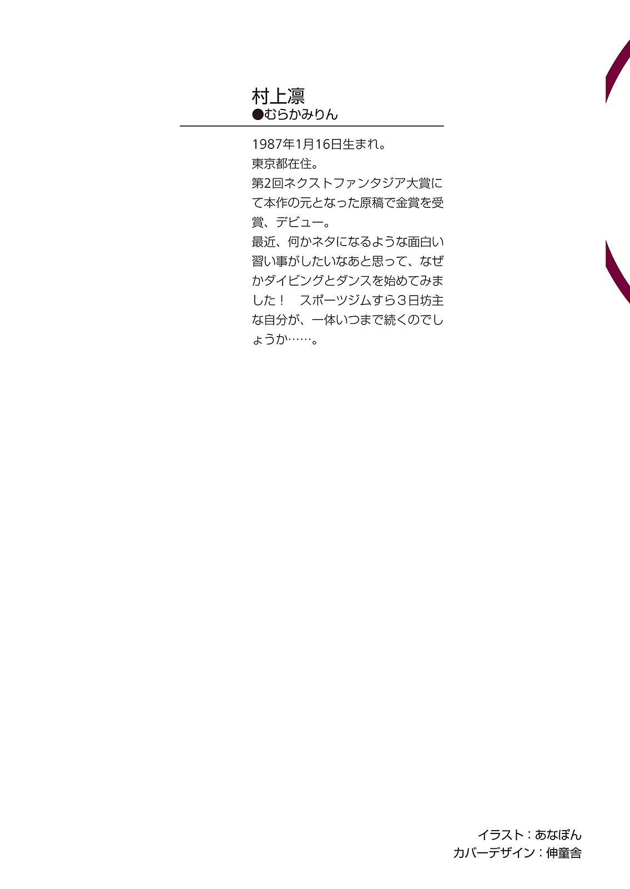
おまえをオタクにしてやるから、
俺をリア充にしてくれ！８
村上 凛
平成25年10月25日 発行
発行者 佐藤 忍
発行所 株式会社ＫＡＤＯＫＡＷＡ
〒102-8177 東京都千代田区富士見2-13-3
03-3238-8745（営業）
http://www.kadokawa.co.jp/
企画・編集 富士見書房
03-3238-8585（編集）
http://www.fujimishobo.co.jp/
(C)Rin Murakami, Anapon 2013
本電子書籍は下記にもとづいて制作しました
富士見ファンタジア文庫『おまえをオタクにしてやるから、俺をリア充にしてくれ！８』平成25年10月25日初版発行